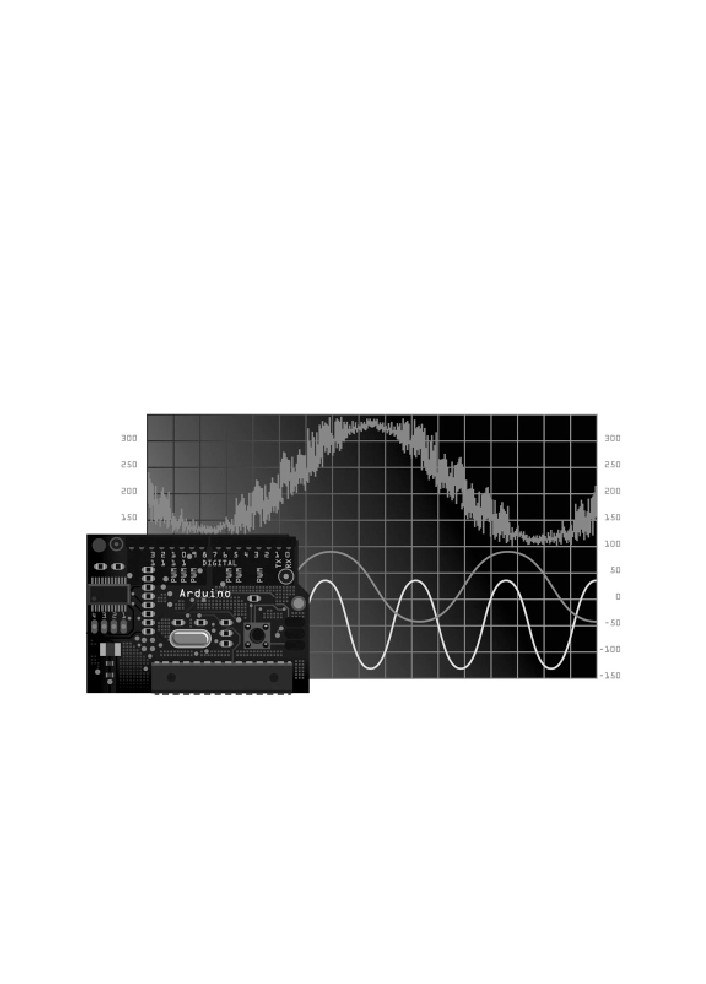
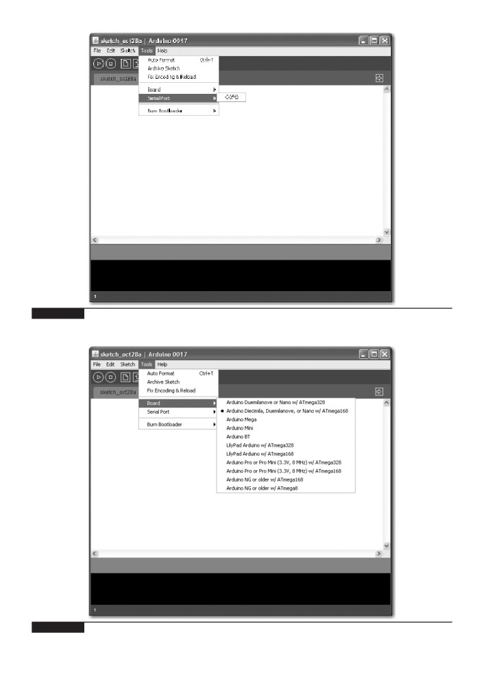
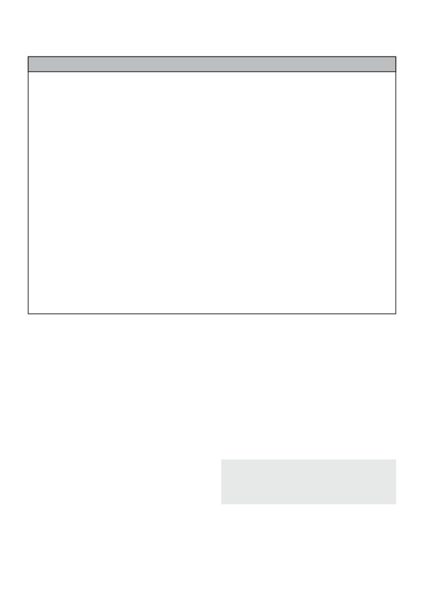
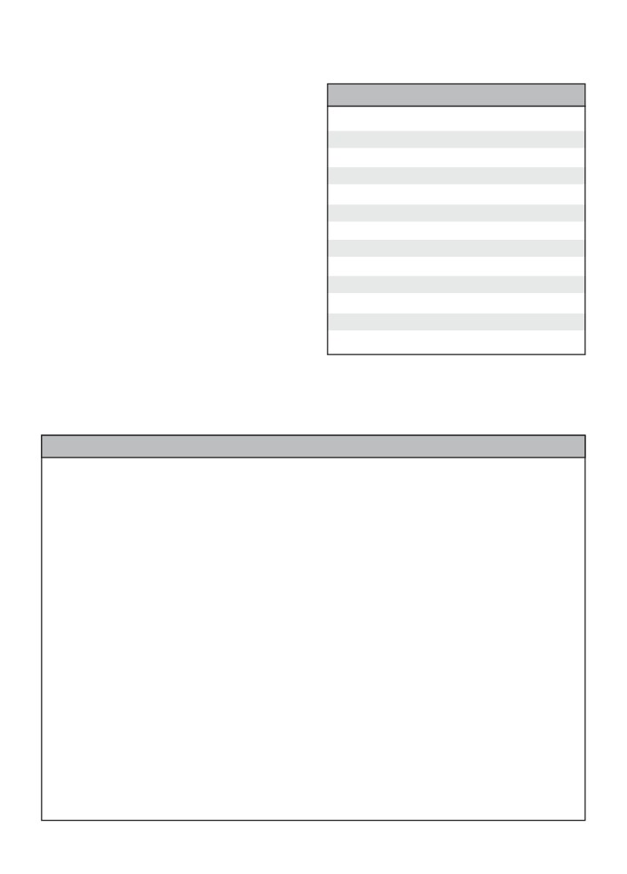
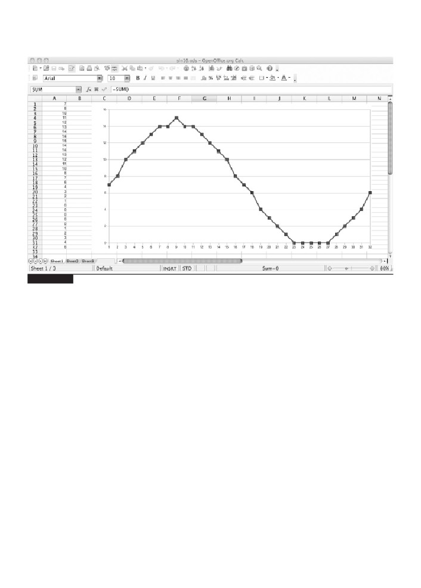
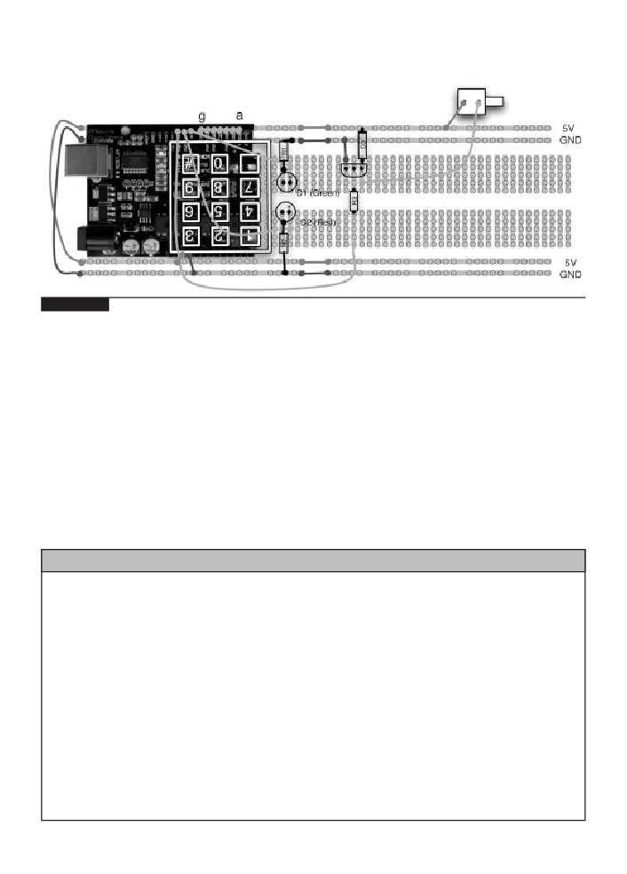
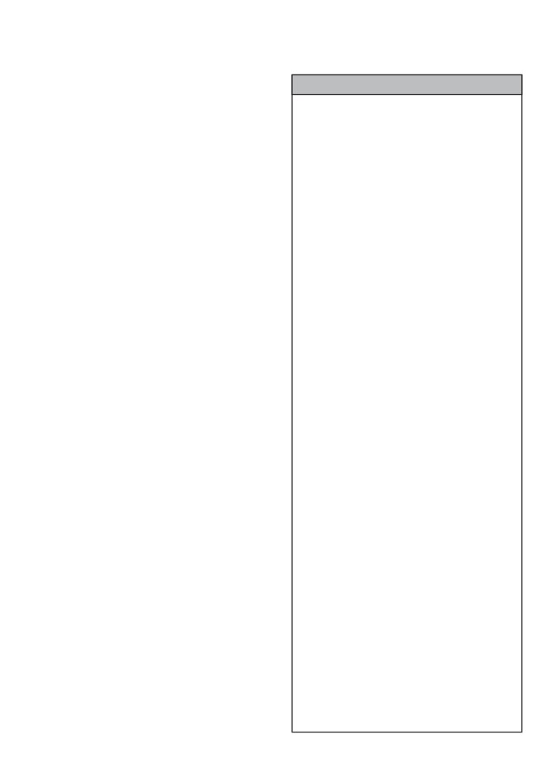

™
30 Arduino
Projects for
™
the Evil Genius
Evil Genius™ Series
Bike, Scooter, and Chopper Projects for the Evil Genius
Bionics for the Evil Genius: 25 Build-it-Yourself Projects
Electronic Circuits for the Evil Genius, Second Edition: 64 Lessons with Projects
Electronic Gadgets for the Evil Genius: 28 Build-it-Yourself Projects
Electronic Sensors for the Evil Genius: 54 Electrifying Projects
50 Awesome Auto Projects for the Evil Genius
50 Green Projects for the Evil Genius
50 Model Rocket Projects for the Evil Genius
51 High-Tech Practical Jokes for the Evil Genius
46 Science Fair Projects for the Evil Genius
Fuel Cell Projects for the Evil Genius
Holography Projects for the Evil Genius
Mechatronics for the Evil Genius: 25 Build-it-Yourself Projects
Mind Performance Projects for the Evil Genius: 19 Brain-Bending Bio Hacks
MORE Electronic Gadgets for the Evil Genius: 40 NEW Build-it-Yourself Projects
101 Spy Gadgets for the Evil Genius
101 Outer Space Projects for the Evil Genius
123 PIC® Microcontroller Experiments for the Evil Genius
123 Robotics Experiments for the Evil Genius
125 Physics Projects for the Evil Genius
PC Mods for the Evil Genius: 25 Custom Builds to Turbocharge Your Computer
PICAXE Microcontroller Projects for the Evil Genius
Programming Video Games for the Evil Genius
Recycling Projects for the Evil Genius
Solar Energy Projects for the Evil Genius
Telephone Projects for the Evil Genius
30 Arduino Projects for the Evil Genius
22 Radio and Receiver Projects for the Evil Genius
25 Home Automation Projects for the Evil Genius
™
30 Arduino
Projects for
™
the Evil Genius
Simon Monk
New York Chicago San Francisco Lisbon London Madrid
Mexico City Milan New Delhi San Juan Seoul
Singapore Sydney Toronto
Copyright © 2010 by The McGraw-Hill Companies, Inc. All rights reserved. Except as permitted under the United States Copyright Act of 1976, no
part of this publication may be reproduced or distributed in any form or by any means, or stored in a database or retrieval system, without the prior
written permission of the publisher.
ISBN: 978-0-07-174134-7
MHID: 0-07-174134-8
The material in this eBook also appears in the print version of this title: ISBN: 978-0-07-174133-0,
MHID: 0-07-174133-X.
All trademarks are trademarks of their respective owners. Rather than put a trademark symbol after every occurrence of a trademarked name, we use
names in an editorial fashion only, and to the benefit of the trademark owner, with no intention of infringement of the trademark. Where such designa-
tions appear in this book, they have been printed with initial caps.
McGraw-Hill eBooks are available at special quantity discounts to use as premiums and sales promotions, or for use in corporate training programs. To
contact a representative please e-mail us at bulksales@mcgraw-hill.com.
Trademarks: McGraw-Hill, the McGraw-Hill Publishing logo, Evil Genius™, and related trade dress are trademarks or registered trademarks of The
McGraw-Hill companies and/or its affiliates in the United States and other countries and may not be used without written permission. All other trade-
marks are the property of their respective owners. The McGraw-Hill Companies is not associated with any product or vendor mentioned in this book.
Information has been obtained by McGraw-Hill from sources believed to be reliable. However, because of the possibility of human or mechanical
error by our sources, McGraw-Hill, or others, McGraw-Hill does not guarantee the accuracy, adequacy, or completeness of any information and is not
responsible for any errors or omissions or the results obtained from the use of such information.
TERMS OF USE
This is a copyrighted work and The McGraw-Hill Companies, Inc. (“McGrawHill”) and its licensors reserve all rights in and to the work. Use of this
work is subject to these terms. Except as permitted under the Copyright Act of 1976 and the right to store and retrieve one copy of the work, you may
not decompile, disassemble, reverse engineer, reproduce, modify, create derivative works based upon, transmit, distribute, disseminate, sell, publish or
sublicense the work or any part of it without McGraw-Hill’s prior consent. You may use the work for your own noncommercial and personal use; any
other use of the work is strictly prohibited. Your right to use the work may be terminated if you fail to comply with these terms.
THE WORK IS PROVIDED “AS IS.” McGRAW-HILL AND ITS LICENSORS MAKE NO GUARANTEES OR WARRANTIES AS TO THE
ACCURACY, ADEQUACY OR COMPLETENESS OF OR RESULTS TO BE OBTAINED FROM USING THE WORK, INCLUDING ANY IN-
FORMATION THAT CAN BE ACCESSED THROUGH THE WORK VIA HYPERLINK OR OTHERWISE, AND EXPRESSLY DISCLAIM ANY
WARRANTY, EXPRESS OR IMPLIED, INCLUDING BUT NOT LIMITED TO IMPLIED WARRANTIES OF MERCHANTABILITY OR FIT-
NESS FOR A PARTICULAR PURPOSE. McGraw-Hill and its licensors do not warrant or guarantee that the functions contained in the work will meet
your requirements or that its operation will be uninterrupted or error free. Neither McGraw-Hill nor its licensors shall be liable to you or anyone else
for any inaccuracy, error or omission, regardless of cause, in the work or for any damages resulting therefrom. McGraw-Hill has no responsibility for
the content of any information accessed through the work. Under no circumstances shall McGraw-Hill and/or its licensors be liable for any indirect,
incidental, special, punitive, consequential or similar damages that result from the use of or inability to use the work, even if any of them has been
advised of the possibility of such damages. This limitation of liability shall apply to any claim or cause whatsoever whether such claim or cause arises
in contract, tort or otherwise.
To my late father, Hugh Monk, from whom I inherited a love for electronics.
He would have had so much fun with all this.
About the Author
Simon Monk has a bachelor’s degree in cybernetics and computer science and a doctorate
in software engineering. He has been an active electronics hobbyist since his school days,
and is an occasional author in hobby electronics magazines.
Contents
Acknowledgments
ix
Introduction
xi
1
Quickstart
1
Powering Up
1
Installing the Software
1
Configuring Your Arduino Environment
6
Downloading the Project Software
6
Project 1 Flashing LED
8
Breadboard
11
Summary
13
2
A Tour of Arduino
15
Microcontrollers
15
What’s on an Arduino Board?
15
The Arduino Family
20
The C Language
21
Summary
25
3
LED Projects
27
Project 2 Morse Code S.O.S. Flasher
27
Loops
29
Arrays
30
Project 3 Morse Code Translator
31
Project 4 High-Brightness Morse Code Translator
35
Summary
40
4
More LED Projects
41
Digital Inputs and Outputs
41
Project 5 Model Traffic Signal
41
Project 6 Strobe Light
44
Project 7 S.A.D. Light
47
Project 8 High-Powered Strobe Light
52
Random Number Generation
55
Project 9 LED Dice
55
Summary
59
5
Sensor Projects
61
Project 10 Keypad Security Code
61
Rotary Encoders
67
Project 11 Model Traffic Signal Using a Rotary Encoder
68
Sensing Light
72
Project 12 Pulse Rate Monitor
73
vii
viii
30 Arduino Projects for the Evil Genius
Measuring Temperature
77
Project 13 USB Temperature Logger
77
Summary
83
6
Light Projects
85
Project 14 Multicolor Light Display
85
Seven-Segment LEDs
89
Project 15 Seven-Segment LED Double Dice
91
Project 16 LED Array
95
LCD Displays
101
Project 17 USB Message Board
102
Summary
105
7
Sound Projects
107
Project 18 Oscilloscope
107
Sound Generation
111
Project 19 Tune Player
112
Project 20 Light Harp
117
Project 21 VU Meter
120
Summary
124
8
Power Projects
125
Project 22 LCD Thermostat
125
Project 23 Computer-Controlled Fan
132
H-Bridge Controllers
134
Project 24 Hypnotizer
134
Servo Motors
138
Project 25 Servo-Controlled Laser
138
Summary
142
9
Miscellaneous Projects
145
Project 26 Lie Detector
145
Project 27 Magnetic Door Lock
148
Project 28 Infrared Remote
153
Project 29 Lilypad Clock
159
Project 30 Evil Genius Countdown Timer
163
Summary
168
10
Your Projects
169
Circuits
169
Components
171
Tools
175
Project Ideas
179
Appendix Components and Supplies
181
Suppliers
181
Starter Kit of Components
185
Index
187
Acknowledgments
I WOULD LIKE to thank my sons, Stephen and Matthew Monk, for their interest and
encouragement in the writing of this book, their helpful suggestions, and their field testing
of projects. Also, I could not have written this book without Linda’s patience and support.
I am grateful to Chris Fitzer for the loan of his oscilloscope, and his good grace after I
broke it! I also thank all the “techies” at Momote for taking an interest in the project and
humoring me.
Finally, I would like to thank Roger Stewart and Joya Anthony at McGraw-Hill, who
have been extremely supportive and enthusiastic, and have been a pleasure to work with.
ix
This page intentionally left blank
Introduction
ARDUINO INTERFACE BOARDS provide the Evil
At this point, the Evil Genius might be
Genius with a low-cost, easy-to-use technology to
wondering which top secret government
create their evil projects. A whole new breed of
organization they need to break into in order to
projects can now be built that can be controlled
acquire one. Well, disappointingly, no evil deeds at
from a computer. Before long, the computer-
all are required to obtain one of these devices. The
controlled, servo-driven laser will be complete and
Evil Genius needs to go no further than their
the world will be at the mercy of the Evil Genius!
favorite online auction site or search engine. Since
the Arduino is an open-source hardware design,
This book will show the Evil Genius how to
anyone is free to take the designs and create their
attach an Arduino board to their computer, to
own clones of the Arduino and sell them, so the
program it, and to connect all manner of
market for the boards is competitive. An official
electronics to it to create projects, including the
Arduino costs about $30, and a clone often less
computer-controlled, servo-driven laser mentioned
than $20.
earlier, a USB-controlled fan, a light harp, a USB
temperature logger, a sound oscilloscope, and
The name “Arduino” is reserved by the original
many more.
makers. However, clone Arduino designs often
have the letters “duino” on the end of their name,
Full schematic and construction details are
for example, Freeduino or DFRduino.
provided for every project, and most can be built
without the need for soldering or special tools.
The software for programming your Arduino is
However, the more advanced Evil Genius may
easy to use and also freely available for Windows,
wish to transfer the projects from a plug-in
Mac, and LINUX computers at no cost.
breadboard to something more permanent, and
instructions for this are also provided.
Arduino
Although Arduino is an open-source design for a
So, What Is Arduino?
microcontroller interface board, it is actually rather
Well, Arduino is a small microcontroller board
more than that, as it encompasses the software
with a USB plug to connect to your computer and
development tools that you need to program an
a number of connection sockets that can be wired
Arduino board, as well as the board itself. There is
up to external electronics, such as motors, relays,
a large community of construction, programming,
light sensors, laser diodes, loudspeakers,
electronics, and even art enthusiasts willing to
microphones, etc. They can either be powered
share their expertise and experience on the
through the USB connection from the computer or
Internet.
from a 9V battery. They can be controlled from the
To begin using Arduino, first go to the Arduino
computer or programmed by the computer and
then disconnected and allowed to work
for Mac, PC, or LINUX. You can then either buy
independently.
an official Arduino by clicking the Buy An
xi
xii
30 Arduino Projects for the Evil Genius
Arduino button or spend some time with your
connection. When over the middle and bottom
favorite search engine or an online auction site to
pins, the board will be powered from an external
find lower-cost alternatives. In the next chapter,
power supply plugged into the socket below. On
step-by-step instructions are provided for installing
the newer Duemilanove boards, there is no such
the software on all three platforms.
jumper and the supply switches automatically from
USB to the 9V socket.
There are, in fact, several different designs of
Arduino board. These are intended for different
The power supply can be any voltage between
types of applications. They can all be programmed
7 and 12 volts. So a small 9V battery will work
from the same Arduino development software, and
just fine for portable applications. Typically, while
in general, programs that work on one board will
you are making your project, you will probably
work on all.
power it from USB for convenience. When you are
ready to cut the umbilical cord (disconnect the
In this book we mostly use the Arduino
USB lead), you will want to power the board
Duemilanove, sometimes called Arduino 2009,
independently. This may be with an external power
which is an update of the popular board, the
adaptor or simply with a 9V battery connected to a
Diecimila. Duemilanove is Italian for 2009, the
plug to fit the power socket.
year of its release. The older Diecimila name
means 10,000 in Italian, and was named that after
There are two rows of connectors on the edges
10,000 boards had been manufactured. Most
of the board. The row at the top of the diagram is
compatible boards such as the Freeduino are based
mostly digital (on/off) pins, although any marked
on the Diecimila and Duemilanove designs.
with “PWM” can be used as analog outputs. The
bottom row of connectors has useful power
Most of the projects in this book will work with
connections on the left and analog inputs on
a Diecimila, Duemilanove, or their clone designs,
the right.
apart from one project that uses the Arduino
Lilypad.
These connectors are arranged like this so that
so-called “shield” boards can be plugged on to the
When you are making a project with an
main board in a piggyback fashion. It is possible to
Arduino, you will need to download programs onto
buy ready-made shields for many different
the board using a USB lead between your
purposes, including:
computer and the Arduino. This is one of the most
convenient things about using an Arduino. Many
■ Connection to Ethernet networks
microcontroller boards use separate programming
■ LCD displays and touch screens
hardware to get programs into the microcontroller.
■ XBee (wireless data communications)
With Arduino, it’s all contained on the board itself.
This also has the advantage that you can use the
■ Sound
USB connection to pass data back and forth
■ Motor control
between an Arduino board and your computer. For
■ GPS tracking
instance, you could connect a temperature sensor
to the Arduino and have it repeatedly tell your
■ And many more
computer the temperature.
You can also use prototyping shields to create
On the older Diecimila boards, you will find a
your own shield designs. We will use these
jumper switch immediately below the USB socket.
Protoshields in some of our projects. Shields
With the jumper fitted over the top two pins, the
usually have through connectors on their pins,
board will receive its power from the USB
which means that you can stack them on top of
Introduction
xiii
each other. So a design might have three layers: an
Most of the projects in this book can be
Arduino board on the bottom, a GPS shield on it,
constructed without the need for soldering; instead
and then an LCD display shield on top of that.
we use a breadboard. A breadboard is a plastic
block with holes in it with sprung metal
connections behind. Electronic components are
The Projects
pushed through the holes at the front. These are
not expensive, and a suitable breadboard is also
The projects in this book are quite diverse. We
listed in the appendix. However, if you wish to
begin with some simple examples using standard
make your designs more permanent, the book
LEDs and also the ultra high-brightness Luxeon
shows you how to do that, too, using the
LEDs.
prototyping board.
In Chapter 5, we look at various sensor projects
Sources for all the components are listed in the
for logging temperature and measuring light and
appendix, along with some useful suppliers. The
pressure. The USB connection to the Arduino
only things you will need in addition to these
makes it possible to take the sensor readings in
components are an Arduino board, a computer,
these projects and pass them back to the computer,
some wire, and a piece of breadboard. The
where they can be imported into a spreadsheet and
software for all the projects is available for
charts drawn.
We then look at projects using various types of
display technology, including an alphanumeric
LCD message board (again using USB to get
Without Further Ado
messages from your computer), as well as seven-
The Evil Genius is not noted for their patience, so
segment and multicolor LEDs.
in the next chapter we will show you how to get
Chapter 7 contains four projects that use sound
started with Arduino as quickly as possible. This
as well as a simple oscilloscope. We have a simple
chapter contains all the instructions for installing
project to play tunes from a loudspeaker, and build
the software and programming your Arduino
up to a light harp that changes the pitch and
board, including downloading the software for the
volume of the sound by waving your hand over
projects, so you will need to read it before you
light sensors. This produces an effect rather like
embark on your projects.
the famous Theremin synthesizer. The final project
In Chapter 2 we take a look at some of the
in this chapter uses sound input from a
essential theory that will help you build the
microphone. It is a VU meter that displays the
projects described in this book, and go on to
intensity of the sound on an LED display.
design projects of your own. Most of the theory is
The final chapters contain a mixture of projects.
contained in this chapter, so if you are the kind of
Among others, there is, as we have already
Evil Genius who prefers to just make the projects
mentioned, an unfathomable binary clock using an
and find out how they work afterwards, you may
Arduino Lilypad board that indicates the time in an
prefer, after reading Chapter 1, to just to pick a
obscure binary manner only readable by an Evil
project and start building. Then if you get stuck,
Genius, a lie detector, a motor-controlled swirling
you can use the index or read some of the early
hypnotizer disk, and, of course, the computer-
chapters.
controlled-servo-guided laser.
This page intentionally left blank
C H A P T E R
1
Quickstart
THIS IS A CHAPTER for the impatient Evil Genius.
Arduino Duemilanove boards do not have this
Your new Arduino board has arrived and you are
jumper and select the power source automatically.
eager to have it do something.
If everything is working okay, the LED should
So, without further ado...
blink once every two seconds. The reason that new
Arduino boards have this Blink sketch already
installed is to verify that the board works. If your
Powering Up
board does not start to blink when connected,
check the position of the power jumper (if it has
When you buy an Arduino Diecimila or
one) and try a different USB socket, possibly on a
Duemilanove board, it is usually preinstalled with
different computer, as some USB sockets are
a sample Blink program that will make the little
capable of supplying more power than others.
built-in LED flash. Figure 1-1 shows an Arduino-
Also, clicking the Reset button should cause the
compatible board with the LED lit.
LED to flicker momentarily. If this is the case, but
The light-emitting diode (LED) marked L is
the LED does not flash, then it may just be that the
wired up to one of the digital input-output sockets
board has not been programmed with the Flash
on the board. It is connected to digital pin 13. This
sketch; but do not despair, as once everything is
really limits pin 13 to being used as an output, but
installed, we are going to modify and install that
the LED only uses a small amount of current, so
script anyway as our first project.
you can still connect other things to that connector.
All you need to do to get your Arduino up and
running is supply it with some power. The easiest
Installing the Software
way to do this is to plug in it into the Universal
Now we have our Arduino working, let’s get the
Serial Bus (USB) port on your computer. You will
software installed so that we can alter the Blink
need a type A-to-type B USB lead. This is the
program and send it down to the board. The exact
same type of lead that is normally used to connect
procedure depends on what operating system you
a computer to a printer.
use on your computer. But the basic principle is
If you are using the older Arduino Diecimila
the same for all.
board, make sure that the power jumper is in the
Install the USB driver that allows the computer
USB position (see Figure 1-1). The jumper should
to talk to the Arduino’s USB port. It uses this for
connect together the two top pins to allow the
programming and sending messages.
board to be powered from the USB. The newer
1
2
30 Arduino Projects for the Evil Genius
Figure 1-1
A powered-up Arduino board with LED lit.
Install the Arduino development environment,
Select the Save option from the dialog, and save
which is the program that you run on your
the Zip file onto your desktop. The folder
computer that enables you to write sketches and
contained in the Zip file will become your main
download them to the Arduino board.
Arduino directory, so now unzip it into C:\Program
Files\Arduino.
the latest version of the software.
You can do this in Windows XP by right-
clicking the Zip file to show the menu in Figure
1-3 and selecting the Extract All option. This will
Installation on Windows
open the Extraction Wizard, shown in Figure 1-4.
Follow the download link on the Arduino home
for Windows. This will start the download of the
Zip archive containing the Arduino software, as
shown in Figure 1-2. You may well be
downloading a more recent version of the software
than the version 17 shown. This should not matter,
but if you experience any problems, refer back to
the instructions on the Arduino home page.
The Arduino software does not distinguish
between different versions of Windows. The
download should work for all versions, from
Windows XP onwards. The following instructions
are for Windows XP.
Figure 1-2
Downloading the Arduino software
for Windows.
Chapter 1
■ Quickstart
3
Click Next and then modify the folder to extract
files to C:\Program Files\Arduino as shown in
Figure 1-5. Then click Next again.
This will create a new directory for this version
of Arduino (in this case, 17) in the folder
C:\Program Files\Arduino. This allows you to have
multiple versions of Arduino installed at the same
time, each in its own folder. Updates of Arduino
are fairly infrequent and historically have always
kept compatibility with earlier versions of the
software. So unless there is a new feature of the
software that you want to use, or you have been
having problems, it is by no means essential to
keep up with the latest version.
Extracting the Arduino file in
Figure 1-4
Now that we have got the Arduino folder in the
Windows.
right place, we need to install the USB drivers. We
let Windows do this for us by plugging in the
Arduino board to trigger the Windows Found New
Hardware Wizard shown in Figure 1-6.
Figure 1-5
Setting the directory for extraction.
Select the option No, Not This Time, and then
click Next.
On the next screen (Figure 1-7), click the option
to install from a specified location, enter or browse
to the location C:\Program Files\Arduino\arduino-
0017\drivers\FTDI USB Drivers, and then click
Next. Note that you will have to change 0017 in
the path noted if you download a different version.
The installation will then complete and you are
ready to start up the Arduino software itself. To do
Figure 1-3
The Extract All menu option in
this, go to My Computer, navigate to C:\Program
Windows.
4
30 Arduino Projects for the Evil Genius
Figure 1-6
Windows Found New Hardware
Figure 1-7
Setting the location of the USB
Wizard.
drivers.
Files\Arduino\arduino-0017, and click the Arduino
The next two sections describe this same
icon, as shown in Figure 1-8. The Arduino
procedure for installing on Mac and LINUX
software will now start.
computers, so if you are a Windows user, you can
skip these sections.
Note that there is no shortcut created for the
Arduino program, so you may wish to select the
Arduino program icon, right-click, and create a
Installation on Mac OS X
shortcut that you can then drag to your desktop.
The process for installing the Arduino software on
the Mac is a lot easier than on the PC.
Figure 1-8
Starting the Arduino software from Windows.
Chapter 1
■ Quickstart
5
As before, the first step is to download the file.
In the case of the Mac, it is a disk image file. Once
downloaded, it will mount the disk image and open
a Finder window, as shown in Figure 1-9. The
Arduino application itself is installed in the usual
Mac way by dragging it from the disk image to
your Applications folder.
The disk image also contains two installer
packages for the USB drivers (see Figure 1-10). Be
sure to choose the package for your system
architecture. Unless you are using a Mac built
before March 2006, you will need to use the Intel
version rather than the PPC version.
When you run the installer, you can simply click
Figure 1-9
Installing the Arduino software on
Continue until you come to the Select Disk screen,
Mac OS X.
where you must select the hard disk before
clicking Continue. As this software installs a
You can now skip the next subsection, which is
kernel extension, it will prompt you to enter your
for installation on LINUX.
password before completing the installation.
You can now find and launch the Arduino
Installation on LINUX
software in your Applications folder. As you are
There are many different LINUX distributions, and
going to use it frequently, you may wish to right-
for the latest information, refer to the Arduino
click its icon in the dock and set it to Keep In
home page. However, for most versions of LINUX,
Dock.
installation is straightforward. Your LINUX will
Figure 1-10
Installing the USB drivers on Mac OS X.
6
30 Arduino Projects for the Evil Genius
probably already have the USB drivers installed,
computer using the USB port or you will not be
the AVR-GCC libraries, and the Java environment
able to select the serial port.
that the Arduino software needs.
The serial port is set from the Tools menu, as
So, if you are lucky, all you will need to do is
shown in Figure 1-11 for the Mac and in Figure
download the TGZ file for the Arduino software
1-12 for Windows—the list of ports for LINUX is
similar to the Mac.
extract it, and that is your working Arduino
If you use many USB or Bluetooth devices with
directory.
your Mac, you are likely to have quite a few
If, on the other hand, you are unlucky, then as a
options in this list. Select the item in the list that
LINUX user, you are probably already adept at
begins with “dev/tty.usbserial.”
finding support from the LINUX community for
On Windows, the serial port can just be set to
setting up your system. The pre-requisites that you
COM3.
will need to install are Java runtime 5 or later and
From the Tools menu, we can now select the
the latest AVR-GCC libraries.
board that we are going to use, as shown in Figure
Entering into Google the phrase “Installing
1-13. If you are using the newer Duemilanove,
Arduino on SUSE LINUX,” or whatever your
choose the first option. However, if you are using
distribution of LINUX is, will, no doubt, find you
the older Diecimila board, select the second
lots of helpful material.
option.
Configuring Your Arduino
Downloading the
Environment
Project Software
Whatever type of computer you use, you should
The software for all of these sketches is available
now have the Arduino software installed on it. We
for download. The whole download is less than a
now need to make a few settings. We need to
megabyte, so it makes sense to download the
specify the operating system name for the port that
software for all of the projects, even if you only
is connected to the USB port for communicating
intend to use a few. To download them, browse to
with the Arduino board, and we need to specify the
type of Arduino board that we are using. But first,
at the top of the screen.
you need to connect your Arduino to your
Figure 1-11
Setting the serial port on the Mac.

Figure 1-12
Setting the serial port on Windows.
Figure 1-13
Setting the board.
7
8
30 Arduino Projects for the Evil Genius
Click the evil_genius.zip link to download a Zip
using a bigger external LED and resistor rather
file of all the projects. If you are using Windows,
than the tiny built-in LED.
unzip the file to My Documents\Arduino. On a
Mac and LINUX, you should unzip it to
Software
Documents/Arduino in your home directory.
First, we need to load the Blink sketch into the
Once the files are installed, you will be able to
Arduino software. The Blink sketch is included as
access them from the File | Sketchbook menu on
an example when you install the Arduino
the Arduino software.
environment. So we can load it using the File
menu, as shown in Figure 1-14.
The majority of the text in this sketch is in the
Project 1
form of comments. Comments are not actually part
Flashing LED
of the program but explain what is going on in the
Having assumed that we have successfully
program to anyone reading the sketch.
installed the software, we can now start on our first
Comments can be single-line comments that
exciting project. Actually, it’s not that exciting, but
start after a // and continue to the end of the line,
we need to start somewhere, and this will ensure
or they can be multiline comments that start with a
that we have everything set up correctly to use our
/* and end some lines later with a */.
Arduino board.
If all the comments in a sketch were to be
We are going to modify the example Blink
removed, it would still work in exactly the same
sketch that comes with Arduino. We will increase
way, but we use comments because they are useful
the frequency of the blinking and then install the
to anyone reading the sketch trying to work out
modified sketch on our Arduino board. Rather than
what it does.
blink slowly, our board will flash its LED quickly.
Before we start, a little word about vocabulary
We will then take the project a stage further by
is required. The Arduino community uses the word
“sketch” in place of “program,” so from now on, I
COMPONENTS AND EQUIPMENT
will refer to our Arduino programs as sketches.
Occasionally I may refer to “code.” Code is
Description
Appendix
programmer speak for a section of a program or
Arduino Diecimila or
even as a generic term for what is written when
Duemilanove board or clone
1
creating a program. So, someone might say, “I
D1
5-mm red LED
23
wrote a program to do that,” or they could say, “I
R1
270
0.5W metal film resistor
6
wrote some code to do that.”
■ In actual fact, almost any commonly available
To modify the rate at which the LED will blink,
LED and 270 resistor will be fine.
we need to change the value of the delay so that in
the two places in the sketch where we have:
■ No tools other than a pair of pliers or wire
cutters are required.
delay(1000);
■ The number in the Appendix column refers to
the component listing in the appendix, which
lists part numbers for various suppliers.
Chapter 1
■ Quickstart
9
Figure 1-14
Loading the example Blink sketch.
change the value in the parentheses to 200 so that
will be a short pause and then the two red LEDs
it appears as:
on the board will start flashing away furiously as
the sketch is uploaded onto the board. This should
delay(200);
take around 5 to 10 seconds.
If this does not happen, check the serial port and
This is changing the delay between turning the
board type settings as described in the previous
LED on and off from 1000 milliseconds (1 second)
sections.
to 200 milliseconds (1/5th of a second). In Chapter
3 we will explore this sketch further, but for now,
When the completed sketch has been installed,
we will just change the delay and download the
the board will automatically reset, and if
sketch to the Arduino board.
everything has worked, you will see the LED for
digital port 13 start to flash much more quickly
With the board connected to your computer,
than before.
click the Upload button on the Arduino. This is
shown in Figure 1-15. If everything is okay, there
Figure 1-15
Uploading the sketch to the Arduino board.
10
30 Arduino Projects for the Evil Genius
Hardware
one direction. The little arrows next to the LED
symbol indicate that it emits light.
At the moment, this doesn’t really seem like
The resistor is just depicted as a rectangle.
real electronics because the hardware is all
Resistors are also often shown as a zigzag line.
contained on the Arduino board. In this section, we
The rest of the lines on the diagram represent
will add an external LED to the board.
electrical connections between the components.
LEDs cannot simply have voltage applied to
These connections may be lengths of wire or
them; they must have a current-limiting resistor
tracks on a circuit board. In this case, they will just
attached. Both parts are readily available from any
be the wires of the components.
electronics suppliers. The component order codes
We can connect the components directly to the
for a number of suppliers are detailed in the
Arduino sockets between the digital pin 12 and the
appendix.
GND pin, but first we need to connect one lead of
The Arduino board connectors are designed to
the LED to one lead of the resistor.
attach “shield” plug-in boards. However, for
It does not matter which lead of the resistor is
experimentation purposes, they also allow wires or
connected to the LED; however, the LED must be
component leads to be inserted directly into the
connected the correct way. The LED will have one
sockets.
lead slightly longer than the other, and it is the
Figure 1-16 shows the schematic diagram for
longer lead that must be connected to digital pin
attaching the external LED.
12 and the shorter lead that should be connected to
This kind of schematic diagram uses special
the resistor. LEDs and some other components
symbols to represent the electronic components.
have the convention of making the positive lead
The LED appears rather like an arrow, which
longer than the negative one.
indicates that light-emitting diodes, in common
To connect the resistor to the short lead of the
with all diodes, only allow the current to flow in
LED, gently spread the leads apart and twist the
short lead around one of the resistor leads, as
shown in Figure 1-17.
Then push the LED’s long lead into the digital
pin 12 and the free lead of the resistor into one of
Figure 1-16
Schematic diagram for an LED
Figure 1-17
An LED connected to a serial
connected to the Arduino board.
resistor.
Chapter 1
■ Quickstart
11
Figure 1-18
An LED connected to the Arduino board.
the two GND sockets. This is shown in Figure 1-18.
Breadboard
Sometimes, it helps to bend a slight kink into the
Twisting together a few wires is not practical for
end of the lead so that it fits more tightly into the
anything much more than a single LED. A
sockets.
breadboard allows us to build complicated circuits
We can now modify our sketch to use the
without the need for soldering. In fact, it is a good
external LED that we have just connected. All we
idea to build all circuits on a breadboard first to get
need to do is change the sketch so that it uses
the design right and then commit the design to
digital pin 12 instead of 13 for the LED. To do
solder once everything is working.
this, we change the line:
A breadboard comprises a plastic block with
int ledPin = 13;
holes in it, with sprung metal connections behind.
// LED connected to digital pin 13
Electronic components are pushed through the
holes at the front.
to read:
Underneath the breadboard holes, there are
int ledPin = 12;
strips of connectors, so each of the holes in a strip
// LED connected to digital pin 12
are connected together. The strips have a gap
between them so that integrated circuits in dual-in-
Now upload the sketch by clicking the Upload
line packaging can be inserted without leads on the
To IO Board button in the same way as you did
same row being shorted together.
when modifying the flash rate.
12
30 Arduino Projects for the Evil Genius
Figure 1-19
Project 1 on breadboard.
We can build this project on a breadboard rather
breadboard, as it does not go the whole width of
than with twisted wires. Figure 1-19 shows a
the board.
photograph of this. Figure 1-20 makes it a little
In addition to a breadboard, you will need some
easier to see how the components are positioned
solid-core wire and some wire strippers or pliers to
and connected together.
cut and remove the insulation from the ends of the
You will notice that at the edges of the
wire. It is a good idea to have at least three
breadboard (top and bottom), there are two long
different colors: red for all wires connected to the
horizontal strips. The connections on the back of
positive side of the supply, black for negative, and
these long strips run at right angles to the normal
some other color (orange or yellow) for other
strips of connections and are used to provide
connections. This makes it much easier to
power to the components on the breadboard.
understand the layout of the circuit. You can also
Normally, there is one for ground (0V or GND)
buy prepared short lengths of solid-core wire in a
and one for the positive supply voltage (usually
variety of colors. Note that it is not advisable to
5V). There are little linking wires between the left
use multicore wire, as it will tend to bunch up
and right halves of the GND strip, as on this
when you try to push it into the breadboard holes.
Figure 1-20
Project 1 breadboard layout.
Chapter 1
■ Quickstart
13
Possible sources of these materials are included
design board and leave it permanently attached to
in the appendix.
the breadboard.
We can straighten out the wires of our LED and
resistor and plug them into a breadboard. It is best
Summary
to use a reasonable-sized breadboard and attach the
Arduino board to it. You probably do not want to
We have created our first project, albeit a very
attach the board permanently, so I use a small
simple one. In the next chapter we will get a bit
lump of adhesive putty. However, you may find it
more background on the Arduino before moving
easier to dedicate one Arduino board to be your
on to some more interesting projects.
This page intentionally left blank
C H A P T E R
2
A Tour of Arduino
IN THIS CHAPTER, we look at the hardware of the
processor, a kilobyte of random access memory
Arduino board and also of the microcontroller at
(RAM) for holding data, a few kilobytes of
its heart. In fact, the board basically just provides
erasable programmable read-only memory
support to the microcontroller, extending its pins to
(EPROM) or Flash memory for holding our
the connectors so that you can connect hardware to
programs, and it has input and output pins. These
them and providing a USB link for downloading
input/output pins are what link the microcontroller
sketches, etc.
to the rest of our electronics.
We also learn a few things about the C language
Inputs can read both digital (is the switch on or
used to program the Arduino, something we will
off?) and analog (what is the voltage at a pin?).
build on in later chapters as we start on some
This enables us to connect many different types of
practical project work.
sensors for light, temperature, sound, etc.
Although this chapter gets quite theoretical at
Outputs can also be analog or digital. So, you
times, it will help you understand how your
can set a pin to be on or off (0V or 5V) and this
projects work. However, if you would prefer just to
can turn LEDs on and off directly, or you can use
get on with your projects, you may wish to skim
the output to control higher-power devices such as
this chapter.
motors. They can also provide an analog output
voltage. That is, you can set the output of a pin to
some particular voltage, allowing you to control
Microcontrollers
the speed of a motor or the brightness of a light,
for example, rather than simply turning it on or off.
The heart of our Arduino is a microcontroller.
Practically everything else on the board is
concerned with providing the board with power
What’s on an Arduino Board?
and allowing it to communicate with your desktop
computer.
Figure 2-1 shows our Arduino board—or in this
case an Arduino clone. Let us have a quick tour of
So what exactly do we get when we buy one of
the various components on the board.
these little computers to use in our projects?
The answer is that we really do get a little
computer on a chip. It has everything and more
than the first home computers had. It has a
15
16
30 Arduino Projects for the Evil Genius
Figure 2-1
The components of an Arduino board.
Power Supply
something between 4.5V and 5.5V. So 5V became
the standard voltage for all digital electronics.
Directly below the USB connector is the 5V
These days, the type of logic gates used in chips
voltage regulator. This regulates whatever voltage
has changed and they are far more tolerant of
(between 7 and 12 volts) is supplied from the
different voltages.
power socket into a constant 5V.
The 5V voltage regulator chip is actually quite
5V (along with 3V, 6V, 9V, and 12V) is a bit of
big for a surface-mount component. This is so that
a standard voltage in electronics. 3, 6, and 9V are
it can dissipate the heat required to regulate the
standard because the voltage that you get from a
voltage at a reasonably high current, which is
single alkaline cell is 1.5V, and these are all
useful when driving our external electronics.
convenient multiples of 1.5V, which is what you
get when you make a “battery” of two, three, six,
or eight cells.
Power Connections
So if that is the case, you might be wondering
Next, let us look at the connectors at the bottom of
why 5V? You cannot make that using 1.5V cells.
Figure 2-1. You can read the connection names
Well, the answer lies in the fact that in the early
next to the connectors.
days of computing, a range of chips became
The first is Reset. This does the same thing as
available, each of which contained logic gates.
pressing the Reset button on the Arduino. Rather
These chips used something called TTL
like rebooting a PC, it resets the microcontroller,
(Transistor-Transistor Logic), which was a bit
beginning its program from the start. The Reset
fussy about its voltage requirements and required
connector allows you to reset the microcontroller
Chapter 2
■ A Tour of Arduino
17
by momentarily setting this pin high (connecting it
■ The height of the water (or if you prefer, the
to +5V).
pressure generated by the pump). This is like
voltage in electronics.
The rest of the pins in this section provide
different voltages (3.3, 5, GND, and 9), as labeled.
■ The resistance to flow offered by the
GND, or ground, just means zero volts. It is the
constriction in the pipework
reference voltage to which all other voltages on the
The more powerful the pump, the higher the
board are relative.
water can be pumped and the greater the current
At this point, it would be useful to remind the
that will flow through the system. On the other
reader about the difference between voltage and
hand, the greater the resistance offered by the
current. There is no perfect analogy for the
pipework, the lower the current.
behavior of electrons in a wire, but the author finds
In the right half of Figure 2-2, we can see the
an analogy with water in pipes to be helpful,
electronic equivalent of our pipework. In this case,
particularly in dealing with voltage, current, and
current is actually a measure of how many
resistance. The relationship between these three
electrons flow past a point per second. And yes,
things is called Ohm’s Law.
resistance is the resistance to the flow of electrons.
Figure 2-2 summarizes the relationship
Instead of height or pressure, we have a
between voltage, current, and resistance. The left
concept of voltage. The bottom of the diagram is
side of the diagram shows a circuit of pipes,
at 0V, or ground, and we have shown the top of
where the top of the diagram is higher up (in
the diagram as being at 5V. So the current that
elevation) than the bottom of the diagram. So
flows (I) will be the voltage difference (5) divided
water will naturally flow from the top of the
by the resistance R.
diagram to the bottom. Two factors determine
Ohm’s Law is usually written as V IR.
how much water passes any point in the circuit in
Normally, we know what V is and are trying to
a given time (the current):
Figure 2-2
Ohm’s Law.
18
30 Arduino Projects for the Evil Genius
calculate R or I, so we can do a bit of rearranging
Digital 0 to 13. These can be used as either inputs
to have the more convenient I V/R and R V/I.
or outputs. When using them as outputs, they
behave rather like the supply voltages we talked
It is very important to do a few calculations
about earlier, except that these are all 5V and can
using Ohm’s Law when connecting things to your
be turned on or off from our sketch. So, if we turn
Arduino, or you may damage it if you ask it to
them on from our sketch, they will be at 5V and if
supply too much current. Generally, though, the
we turn them off, they will be at 0V. As with the
Arduino boards are remarkably tolerant of
supply connectors, we have to be careful not to
accidental abuse.
exceed their maximum current capabilities.
So, going back to our Arduino power pins, we
These connections can supply 40 mA at 5V.
can see that the Arduino board will supply us with
That is more than enough to light a standard LED,
useful voltages of 3.3V, 5V, and 9V. We can use
but not enough to drive an electric motor directly.
any of those supplies to cause a current to flow, as
long as we are careful not to make it a short circuit
As an example, let us look at how we would
(no resistance to flow), which would cause a
connect an LED to one of these digital
potentially large current to flow that could cause
connections. In fact, let’s go back to Project 1 in
damage. In other words, we have to make sure that
Chapter 1.
anything we connect to the supply has enough
As a reminder, Figure 2-3 shows the schematic
resistance to prevent too much current from
diagram for driving the LED that we first used in
flowing. As well as supplying a particular voltage,
the previous chapter. If we were to not use a
each of those supply connections will have a
resistor with our LED but simply connect the LED
maximum current that can be allowed to flow.
between pin 12 and GND, then when we turned
Those currents are 50 mA (thousandths of an amp)
digital output 12 on (5V), we might burn out the
for the 3.3V supply, and although it is not stated in
LED, destroying it.
the Arduino specification, probably around 300
This is because LEDs have a very low resistance
mA for the 5V.
and will cause a very high current to flow unless
they are protected from themselves by using a
Analog Inputs
resistor to limit the flow of current.
The next section of connections is labeled Analog
In 0 to 5. These six pins can be used to measure
the voltage connected to them so that the value can
be used in a sketch. Note that they measure a
voltage and not a current. Only a tiny current will
ever flow into them and down to ground because
they have a very large internal resistance.
Although labeled as analog inputs, these
connections can also be used as digital inputs or
outputs, but by default, they are analog inputs.
Digital Connections
We now switch to the top connector and start on
the right side (Figure 2-1). We have pins labeled
Figure 2-3
LED and series resistor.
Chapter 2
■ A Tour of Arduino
19
An LED needs about 10 mA to shine reasonably
On the left side of the top connector in Figure
brightly. The Arduino can supply 50 mA, so there
2-1, there is another GND connection and a
is no problem there; we just need to choose a
connection called AREF. AREF can be used to
sensible value of resistor.
scale the readings for analog inputs. This is rarely
used and can safely be ignored.
LEDs have the interesting property that no
matter how much current flows through them,
there will always be about 2V between their pins.
Microcontroller
We can use this fact and Ohm’s Law to work out
Getting back to our tour of the Arduino board, the
the right value of resistor to use.
microcontroller chip itself is the black rectangular
We know that (at least when it’s on) the output
device with 28 pins. This is fitted into a DIL
pin will be supplying 5V. Now, we have just said
(dual in-line) socket so that it can be easily
that 2V will be “dropped” by our LED, leaving
replaced. The 28-pin microcontroller chip used on
3V (5 - 2) across our current-limiting resistor. We
Arduino Duemilanove is the ATmega328. Figure
want the current flowing around the circuit to be
2-4 is a block diagram showing the main features
10 mA, so we can see that the value for the
of this device.
resistor should be
The heart, or perhaps more appropriately the
R V/I
brain, of the device is the CPU (central processing
R
3V/10 mA
unit). It controls everything that goes on within the
device. It fetches program instructions stored in the
R
3V/0.01 A
Flash memory and executes them. This might
R
300
involve fetching data from working memory
Resistors come in standard values, and the
(RAM), changing it, and then putting it back. Or, it
closest value to 300 is 270 . This means that
may mean changing one of the digital outputs from
instead of 10 mA, the current will actually be
0 to 5 volts.
I
V/R
I
3/270
I
11.111 mA
These things are not critical, and the LED
would probably be equally happy with anything
between 5 and 30 mA, so 270 will work just
fine.
We can also set one of these digital connections
to be an input, in which case, it works rather like
an analog input, except that it will just tell us if the
voltage at a pin is above a certain threshold
(roughly 2.5V) or not.
Some of the digital connections (3, 5, 6, 9, 10,
and 11) have the letters PWM next to them. These
can be used to provide a variable output voltage
rather than a simple 5V or nothing.
Figure 2-4
ATmega328 block diagram.
20
30 Arduino Projects for the Evil Genius
The electrically erasable programmable read-
The Arduino Family
only memory (EEPROM) memory is a little like
It’s useful to have a little background on the
the Flash memory in that it is nonvolatile. That is,
Arduino boards. We will be using the Duemilanove
you can turn the device off and on and it will not
for most of our projects; however, we will also
have forgotten what is in the EEPROM. Whereas
dabble with the interesting Lilypad Arduino.
the Flash memory is intended for storing program
instructions (from sketches), the EEPROM is used
The Lilypad (Figure 2-5), is a tiny, thin Arduino
to store data that you do not want to lose in the
board that can be stitched into clothing for
event of a reset or power failure.
applications that have become known as wearable
computing. It does not have a USB connection,
The older Diecimila uses the ATmega168,
and you must use a separate adaptor to program it.
which functions in an identical way to the
This is an exceptionally beautiful design. Inspired
ATmega328 except that it has half the amount of
by its clocklike appearance, we will use this in
every sort of memory. It has 16KB of Flash
Project 29 (Unfathomable Binary Clock).
memory, 1KB of RAM, and 512 bytes of
EEPROM.
At the other end of the spectrum is the Arduino
Mega. This board has a faster processor with more
memory and a greater number of input/output pins.
Other Components
Cleverly, the Arduino Mega can still use shields
Above the microcontroller there is a small, silver,
built for the smaller Arduino Diecimila and
rectangular component. This is a quartz crystal
Duemilanove boards, which sit at the front of the
oscillator. It “ticks” 16 million times a second, and
board, allowing access to the double row of
on each of those ticks, the microcontroller can
connectors for the Mega’s additional connections
perform one operation—an addition, subtraction, etc.
at the rear. Only the most demanding of projects
To the right of the crystal, is the Reset switch.
really need an Arduino Mega.
Clicking this sends a logic pulse to the Reset pin
of the microcontroller, causing the microcontroller
to start its program afresh and clear its memory.
Note that any program stored on the device will be
retained because this is kept in nonvolatile Flash
memory—that is, memory that remembers even
when the device is not powered.
To the right of the Reset button is the serial
programming connector. It offers another means of
programming the Arduino without using the USB
port. Since we do have a USB connection and
software that makes it convenient to use, we will
not avail ourselves of this feature.
In the top left of the board next to the USB
socket is the USB interface chip. This converts the
signal levels used by the USB standard to levels
that can be used directly by the Arduino board.
Figure 2-5
Arduino Lilypad.
Chapter 2
■ A Tour of Arduino
21
The C Language
digitalWrite(ledPin, LOW);
// set the LED off
Many languages are used to program
delay(1000);
microcontrollers, from hard-core Assembly
// wait for a second
language to graphical programming languages like
}
Flowcode. Arduino sits somewhere in between
these two extremes and uses the C programming
It is standard practice to include such text at the
language. It does, however, wrap up the C
top of any program file. You can also include
language, hiding away some of the complexity.
comments that describe a tricky bit of code, or
This makes it easy to get started.
anything that requires some explanation.
The C language is, in computing terms, an old
The Arduino development environment uses
and venerable language. It is well suited to
something called a compiler that converts the
programming the microcontroller because it was
script into the machine code that will run on the
invented at a time when compared to today’s
microcontroller.
monsters, the typical computer was quite poorly
So, moving onto the first real line of code, we
endowed.
have:
C is an easy language to learn, yet compiles into
int ledPin = 13;
efficient machine code that only takes a small
amount of room in our limited Arduino memory.
This line of code gives a name to the digital
output pin that we are going to connect to the
An Example
LED. If you look carefully at your Arduino board,
you will see the connector for pin 13 between
We are now going to examine the sketch for
GND and pin 12 on the Arduino’s top connector.
Project 1 in a bit more detail. The listing for this
The Arduino board has a small green LED already
sketch to flash an LED on and off is shown here.
soldered onto the board and connected to pin 13.
We have ignored all the lines that begin with // or
We are going to change the voltage of this pin to
blocks of lines that start with /* and end with */
between 0V and 5V to make the LED flash.
because these are comment lines that have no
effect on the program and are just there for
We are going to use a name for the pin so that
information.
it’s easy to change it and use a different one. You
can see that we refer to “ledPin” later in the
int ledPin =
13;
sketch. You may prefer to use pin 12 and the
// LED connected to digital pin 13
external LED that you used with your breadboard
void setup()
in Chapter 1. But for now, we will assume that you
{
pinMode(ledPin, OUTPUT);
are using the built-in LED attached to pin 13.
}
You will notice that we did not just write:
void loop()
led pin = 13
{
digitalWrite(ledPin, HIGH);
That is because compilers are kind of fussy and
// set the LED on
precise about how we write our programs. Any
delay(1000);
name we use in a program cannot use spaces, so it
// wait for a second
is a convention to use what is called “bumpy case.”
22
30 Arduino Projects for the Evil Genius
So, we start each word (apart from the first) with
The next lines of the sketch are
an uppercase letter and remove the space; that
void setup()
gives us:
// run once, when the sketch starts
{
ledPin = 13
pinMode(ledPin, OUTPUT);
// sets the digital pin as output
The word ledPin is what is termed a variable.
}
When you want to use a variable for the first time
in a sketch, you have to tell the compiler what type
This is what is called a function, and in this
of variable it is. It may be an int, as is the case
case, the function is called setup. Every sketch
here, or a float, or a number of other types that we
must contain a setup function, and the lines of
will describe later in this chapter.
code inside the function surrounded by curly
An int is an integer—that is, a whole number—
brackets will be carried out in the order that they
which is just what we need when referring to a
are written. In this case, that is just the line starting
particular pin on the Arduino. There is, after all, no
with pinMode.
pin 12.5, so it would not be appropriate to use a
A good starting point for any new project is to
floating point number (float).
copy this example project and then alter it to your
The syntax for a variable declaration is
needs.
type variableName = value;
We will not worry too much about functions at
this stage, other than to say that the setup function
So first we have the type (int), then a space,
will be run every time the Arduino is reset,
then a variable name in bumpy case (ledPin), then
including when the power is first turned on. It will
an equal sign, then a value, and finally a semicolon
also be run every time a new sketch is
to indicate the end of the line:
downloaded.
In this case, the only line of code in setup is
int ledPin = 13;
pinMode(ledPin, OUTPUT);
As I mentioned, the compiler is fussy, so if you
// sets the digital pin as output
forget the semicolon, you will receive an error
message when you compile the sketch. Try
The first thing to mention is that we have a
removing the semicolon and clicking the Play
different type of comment on the end of this line.
button. You should see a message like this:
That is, the single-line comment. This begins with
a // and ends at the end of the line.
error: expected unqualified-id before
numeric constant
The line can be thought of as a command to the
Arduino to use the ledPin as a digital output. If we
It’s not exactly “you forgot a semicolon,” and it
had a switch connected to ledPin, we could set it
is not uncommon for error messages to be
as an input using:
similarly misleading.
pinMode(ledPin, INPUT);
However, we would call the variable something
more appropriate, like switchPin.
Chapter 2
■ A Tour of Arduino
23
The words INPUT and OUTPUT are what are
of digitalWrite, it is said to take two parameters:
called constants. They will actually be defined
the Arduino pin to write to and the value to write.
within C to be a number. INPUT may be defined
In our example, we pass the parameters of
as 0 and OUPUT as 1, but you never need to
ledPin and HIGH to turn the LED on and then
actually see what number is used, as you always
ledPin and LOW to turn it off again.
refer to them as INPUT or OUTPUT. Later in this
chapter, we will see two more constants, HIGH
Variables and Data Types
and LOW, that are used when setting the output of
a digital pin to +5V or 0V, respectively.
We have already met the variable ledPin and
declared it to be of type int. Most of the variables
The next section of code is another function that
that you use in your sketches are also likely to be
every Arduino sketch must have; it is called loop:
ints. An int holds an integer number between
void loop()
-32,768 and +32,767. This uses just two bytes of
{
data for each number stored from the 1024
digitalWrite(ledPin, HIGH);
available bytes of storage on an Arduino. If that
// sets the LED on
range is not enough, you can use a long, which
delay(1000);
// waits for a second
uses four bytes for each number and will give you
digitalWrite(ledPin, LOW);
a range of numbers from -2,147,483,648 to
// sets the LED off
+2,147,483,647.
delay(1000);
Most of the time, an int represents a good
// waits for a second
compromise between precision and use of memory.
}
If you are new to programming, I would use ints
The function loop will be run continuously until
for almost everything and gradually expand your
the Arduino is powered down. That is, as soon as it
repertoire of data types as your experience grows.
finishes executing the commands it contains, it will
Other data types available to you are
begin again. Remember that an Arduino board is
summarized in Table 2-1.
capable of running 16 million commands per
One thing to consider is that if data types
second, so things inside the loop will happen
exceed their range, strange things happen. So if
frequently if you let them.
you have a byte variable with 255 in it and you
In this case, what we want the Arduino to keep
add 1 to it, you get 0. More alarmingly, if you have
doing continuously is to turn the LED on, wait a
an int variable with 32,767 and you add 1 to it, you
second, turn the LED off, and then wait another
will end up with -32,768.
second. When it has finished doing this, it will
Until you are completely happy with these
begin again, turning the LED on. In this way it will
different data types, I would recommend sticking
go round the loop forever.
to int, as it works for practically everything.
By now, the command syntax for digitalWrite
and delay will be becoming more familiar.
Arithmetic
Although we can think of them as commands that
are sent to the Arduino board, they are actually
It is fairly uncommon to need to do much in the
functions just like setup and loop, but in this case
way of arithmetic in a sketch. Occasionally, you
they have what are called parameters. In the case
will need to do a bit of scaling of, say, an analog
24
30 Arduino Projects for the Evil Genius
TABLE 2-1
Data Types in C
Type
Memory (bytes)
Range
Notes
boolean
1
true or false (0 or 1)
char
1
-128 to +128
Used to represent an ASCII
character code (e.g., A is
represented as 65). Its negative
numbers are not normally used.
byte
1
0 to 255
int
2
-32,768 to +32,767
unsigned int
2
0 to 65,536
Can be used for extra precision
where negative numbers are not
needed. Use with caution, as
arithmetic with ints may cause
unexpected results.
long
4
-2,147,483,648 to
Needed only for representing very
2,147,483,647
large numbers.
unsigned long
4
0 to 4,294,967,295
See unsigned int.
float
4
-3.4028235E+38 to
+ 3.4028235E+38
double
4
as float
Normally, this would be eight bytes
and higher precision than float with
a greater range. However, on
Arduino, it is the same as float.
input to turn it into a temperature, or more
might want to use Strings: when writing messages
typically, add 1 to a counter variable.
to an LCD display or sending back serial text data
over the USB connection.
When you are performing some calculation, you
need to be able to assign the result of the
Strings are created using the following syntax:
calculation to a variable.
char* message = "Hello World";
The following lines of code contain two
assignments. The first gives the variable y the
The char* word indicates that the variable
value 50 and the second gives the variable x the
message is a pointer to a character. For now, we do
value of y + 100.
not need to worry too much about how this works.
We will meet this later in the book when we look
y = 50;
at interfacing with textual LCD displays.
x = y + 100;
Strings
Conditional Statements
When programmers talk of Strings, they are
Conditional statements are a means of making
referring to a string of characters such as the
decisions in a sketch. For instance, your sketch
much-used message “Hello World.” In the world of
may turn the LED on if the value of a temperature
Arduino, there are a couple of situations where you
variable falls below a certain threshold.
Chapter 2
■ A Tour of Arduino
25
The code for this is shown here:
Often, when using an if statement, you want to
do one thing if the condition is true and a different
if (temperature < 15)
thing if it is false. You can do this by using the else
{
keyword, as shown in the following example. Note
digitalWrite(ledPort, HIGH);
}
the use of nested parentheses to make it clear what
is being or’d with what.
The line or lines of code inside the curly braces
if ((temperature < 15) || (temperature
will only be executed if the condition after the if
> 20))
keyword is true.
{
digitalWrite(ledPort, HIGH);
The condition has to be contained in
}
parentheses, and is what programmers call a
else
logical expression. A logical expression is like a
{
mathematical sentence that must always return one
digitalWrite(ledPort, LOW);
of two possible values: true or false.
}
The following expression will return true if the
value in the temperature variable is less than 15:
Summary
(temperature < 15)
In this chapter, we have explored the hardware
provided by the Arduino and refreshed our
As well as <, you have: >, <=, and >=.
knowledge of a little elementary electronics.
To see if two numbers are equal, you can use ==
We have also started our exploration of the C
and to test if they are not equal, you can use !=.
programming language. Don’t worry if you found
So the following expression would return true if
some of this hard to follow. There is a lot to take in
the temperature variable had a value that was
if you are not familiar with electronics, and while
anything except 15:
the author’s goal is to explain how everything
works, you are completely at liberty to simply start
(temperature != 15)
on the projects first and come back to the theory
when you are ready.
You can also make complex conditions using
what are called logical operators. The principal
In the next chapter we will get to grips with
operators being && (and) and || (or).
programming our Arduino board and embark on
some more serious projects.
So an example that turned the LED on if the
temperature was less than 15 or greater than 20
might look like this:
if ((temperature < 15) || (temperature
> 20))
{
digitalWrite(ledPort, HIGH);
}
This page intentionally left blank
C H A P T E R
3
LED Projects
IN THIS CHAPTER, we are going to start building
COMPONENTS AND EQUIPMENT
some LED-based projects. We will keep the
Description
Appendix
hardware fairly simple so that we can concentrate
on the programming of the Arduino.
Arduino Diecimila or
Duemilanove board or clone
1
Programming microcontrollers can be a tricky
business requiring an intimate knowledge of the
D1
5-mm red LED
23
inner workings of the device: fuses, registers, etc.
R1
270
0.5W metal film resistor
6
This is, in part, because modern microcontrollers
are almost infinitely configurable. Arduino
■ Almost any commonly available LED and 270
standardizes its hardware configuration, which, in
resistor will be fine.
return for a small loss of flexibility, makes the
■ No tools other than a pair of pliers or wire
devices a great deal easier to program.
cutters are required.
Hardware
Project 2
The hardware is exactly the same as Project 1. So,
Morse Code S.O.S. Flasher
you can either just plug the resistor and LED
Morse code used to be a vital method of
directly into the Arduino connectors or use a
communication in the 19th and 20th centuries. Its
breadboard (see Chapter 1).
coding of letters as a series of long and short dots
meant that it could be sent over telegraph wires,
Software
over a radio link, and using signaling lights. The
letters S.O.S. (Save Our Souls) is still recognized
Rather than start typing this project in from
as an international signal of distress.
scratch, we will use Project 1 as a starting point.
So if you have not already done so, please
In this project, we will make our LED flash the
complete Project 1.
sequence S.O.S. over and over again.
If you have not already done so, download the
For this project, you will need just the same
components as for Project 1.
then you can also just load the completed sketch
for Project 1 from your Arduino Sketchbook and
download it to the board (see Chapter 1). However,
27
28
30 Arduino Projects for the Evil Genius
it will help you understand Arduino better if you
delay(200);
modify the sketch from Project 1 as suggested
digitalWrite(ledPin, HIGH);
next.
// third dot
delay(200);
Modify the loop function of Project 1 so that it
digitalWrite(ledPin, LOW);
now appears as shown here. Note that copy and
delay(1000);
paste is highly recommended in this kind of
// wait 1 second before we start
situation:
again
void loop()
}
{
digitalWrite(ledPin, HIGH);
This would all work, and feel free to try it;
// S (...) first dot
however, we are not going to leave it there. We are
delay(200);
digitalWrite(ledPin, LOW);
going to alter our sketch to improve it, and at the
delay(200);
same time make it a lot shorter.
digitalWrite(ledPin, HIGH);
We can reduce the size of the sketch by creating
// second dot
our own function to replace the four lines of code
delay(200);
digitalWrite(ledPin, LOW);
involved in any flash with one line.
delay(200);
After the loop function’s final curly brace, add
digitalWrite(ledPin, HIGH);
the following code:
// third dot
delay(200);
void flash(int duration)
digitalWrite(ledPin, LOW);
{
delay(500);
digitalWrite(ledPin, HIGH);
digitalWrite(ledPin, HIGH);
delay(duration);
// O (—-) first dash
digitalWrite(ledPin, LOW);
delay(500);
delay(duration);
digitalWrite(ledPin, LOW);
}
delay(500);
digitalWrite(ledPin, HIGH);
Now modify the loop function so that it looks
// second dash
delay(500);
like this:
digitalWrite(ledPin, LOW);
void loop()
delay(500);
{
digitalWrite(ledPin, HIGH);
flash(200); flash(200); flash(200);
// third dash
// S
delay(500);
delay(300);
digitalWrite(ledPin, LOW);
// otherwise the flashes run
delay(500);
together
digitalWrite(ledPin, HIGH);
flash(500); flash(500); flash(500);
// S (...) first dot
// O
delay(200);
flash(200); flash(200); flash(200);
digitalWrite(ledPin, LOW);
// S
delay(200);
delay(1000);
digitalWrite(ledPin, HIGH);
// wait 1 second before we start
// second dot
again
delay(200);
}
digitalWrite(ledPin, LOW);

Chapter 3
■ LED Projects
29
LISTING PROJECT 2
int ledPin = 13;
void setup()
// run once, when the sketch starts
{
pinMode(ledPin, OUTPUT);
// sets the digital pin as output
}
void loop()
{
flash(200); flash(200); flash(200);
// S
delay(300);
// otherwise the flashes run together
flash(500); flash(500); flash(500);
// O
flash(200); flash(200); flash(200);
// S
delay(1000);
// wait 1 second before we start again
}
void flash(int duration)
{
digitalWrite(ledPin, HIGH);
delay(duration);
digitalWrite(ledPin, LOW);
delay(duration);
}
The whole final listing is shown in Listing
Loops
Project 2.
Loops allow us to repeat a group of commands a
This makes the sketch a lot smaller and a lot
certain number of times or until some condition is
easier to read.
met.
In Project 2, we only want to flash three dots for
Putting It All Together
an S, so it is no great hardship to repeat the flash
That concludes Project 2. We will now cover some
command three times. However, it would be far
more background on programming the Arduino
less convenient if we needed to flash the LED 100
before we go on to look at Project 3, where we
or 1000 times. In that case we can use the for
will use our same hardware to write a Morse code
language command in C.
translator, where we can type sentences on our
for (int i = 0; i < 100; i ++)
computer and have them flashed as Morse code. In
{
Project 4, we will improve the brightness of our
flash(200);
flashing by replacing our red LED with a high-
}
power Luxeon-type LED.
But first, we need a little more theory in order
The for loop is a bit like a function that takes
to understand Projects 3 and 4.
three arguments, although here, those arguments
are separated by semicolons rather than the usual
30
30 Arduino Projects for the Evil Genius
commas. This is just a quirk of the C language.
contrast, an array contains a list of values, and you
The compiler will soon tell you when you get it
can access any one of those values by its position
wrong.
in the list.
The first thing in the parentheses after “for” is a
C, in common with the majority of programming
variable declaration. This specifies a variable to be
languages, begins its index positions at 0 rather
used as a counter variable and gives it an initial
than 1. This means that the first element is actually
value—in this case, 0.
element zero.
The second part is a condition that must be true
To illustrate the use of arrays, we could change
for us to stay in the loop. In this case, we will stay
our Morse code example to use an array of flash
in the loop as long as “i” is less than 100, but as
durations. We can then use a for loop to step
soon as “i” is 100 or more, we will stop doing the
through each of the items in the array.
things inside the loop.
First let’s create an array of ints containing the
The final part is what to do every time you have
durations:
done all the things in the loop. In this case, that is
int durations[] = {200, 200, 200, 500,
increment “i” by 1 so that it can, after 100 trips
500, 500, 200, 200, 200}
around the loop, cease to be less than 100 and
cause the loop to exit.
You indicate that a variable contains an array by
Another way of looping in C is to use the while
placing [] after the variable name. If you are
command. The same example shown previously
setting the contents of the array at the same time
could be accomplished using a while command,
you are defining it, as in the previous example, you
as shown here:
do not need to specify the size of the array. If you
are not setting its initial contents, then you need to
int i = 0;
specify the size of the array inside the square
while (i < 100)
brackets. For example:
{
flash(200);
int durations[10];
i ++;
}
Now we can modify our loop method to use the
array:
The expression in parentheses after while must
be true to stay in the loop. When it is no longer
void loop()
true, the sketch will continue running the
// run over and over again
{
commands after the final curly brace.
for (int i = 0; i < 9; i++)
The curly braces are used to bracket together a
{
group of commands. In programming parlance,
flash(durations[i]);
they are known as a block.
}
delay(1000);
// wait 1 second before we start
// again
Arrays
}
Arrays are a way of containing a list of values.
The variables we have met so far have only
contained a single value, usually an int. By
Chapter 3
■ LED Projects
31
An obvious advantage of this approach is that it
computer to the Arduino board through the USB
is easy to change the message by simply altering
cable.
the durations array. In Project 3, we will take the
For this project, you will need just the same
use of arrays a stage further to make a more
components as for Project 1 and 2. In fact, the
general-purpose Morse code flasher.
hardware is exactly the same; we are just going to
modify the sketch of Project 1.
Project 3
COMPONENTS AND EQUIPMENT
Morse Code Translator
Description
Appendix A
In this project, we are going to use the same
Arduino Diecimila or
hardware as for Projects 1 and 2, but we are going
Duemilanove board or clone
1
to write a new sketch that will let us type in a
D1
5-mm Red LED
23
sentence on our computer and have our Arduino
R1
270 Ω 0.5W metal film resistor
6
board convert that into the appropriate Morse code
dots and dashes.
Figure 3-1 shows the Morse code translator in
Hardware
action. The contents of the message box are being
flashed as dots and dashes on the LED.
Please refer back to Project 1 for the hardware
To do this, we will make use of what we have
construction for this project.
learned about arrays and strings, and also learn
You can either just plug the resistor and LED
something about sending messages from our
directly into the Arduino connectors, or use the
Figure 3-1
Morse code translator.

32
30 Arduino Projects for the Evil Genius
breadboard (see Chapter 1). You can even just
TABLE 3-1
Morse Code Letters
change the ledPin variable in the sketch to be pin
13 so that you use the built-in LED and do not
A
.-
N
-.
0
——-
need any external components at all.
B
-…
O
—-
1
.——
C
-.-.
P
.--.
2
..---
Software
D
-..
Q
--.-
3
…--
E
R
.-.
4
….-
The letters in Morse code are shown in Table 3-1.
F
..-.
S
…
5
…..
Some of the rules of Morse code are that a dash
G
--.
T
-
6
-….
is three times as long as a dot, the time between
H
….
U
..-
7
--…
each dash or dot is equal to the duration of a dot,
I
V
…-
8
---..
the space between two letters is the same length as
J
.---
W
.--
9
----.
a dash, and the space between two words is the
K
-.-
X
-..-
same duration as seven dots.
L
.-..
Y
-.--
For the sake of this project, we will not worry
M
--
Z
--..
about punctuation, although it would be an
interesting exercise for you to try adding this to the
The sketch for this is shown in Listing Project 3.
sketch. For a full list of all the Morse characters,
An explanation of how it all works follows.
LISTING PROJECT 3
int ledPin = 12;
char* letters[] = {
".-", "-...", "-.-.", "-..", ".", "..-.", "--.", "
", "..",
// A-I
".---", "-.-", ".-..", "--", "-.", "---", ".--.", "--.-", ".-.",
// J-R
"...", "-", "..-", "...-", ".--", "-..-", "-.--", "--.."
// S-Z
};
char* numbers[] = {"-----", ".----", "..---", "...--", "
-", "
", "-
",
"--...", "---..", "----."};
int dotDelay = 200;
void setup()
{
pinMode(ledPin, OUTPUT);
Serial.begin(9600);
}
void loop()
{
char ch;
if (Serial.available())
// is there anything to be read from USB?
Chapter 3
■ LED Projects
33
LISTING PROJECT 3 (continued)
{
ch = Serial.read();
// read a single letter
if (ch >= 'a' && ch <= 'z')
{
flashSequence(letters[ch - 'a']);
}
else if (ch >= 'A' && ch <= 'Z')
{
flashSequence(letters[ch - 'A']);
}
else if (ch >= '0' && ch <= '9')
{
flashSequence(numbers[ch - '0']);
}
else if (ch == ' ')
{
delay(dotDelay * 4);
// gap between words
}
}
}
void flashSequence(char* sequence)
{
int i = 0;
while (sequence[i] != NULL)
{
flashDotOrDash(sequence[i]);
i++;
}
delay(dotDelay * 3);
// gap between letters
}
void flashDotOrDash(char dotOrDash)
{
digitalWrite(ledPin, HIGH);
if (dotOrDash == '.')
{
delay(dotDelay);
}
else // must be a -
{
delay(dotDelay * 3);
}
digitalWrite(ledPin, LOW);
delay(dotDelay);
// gap between flashes
}
34
30 Arduino Projects for the Evil Genius
We keep track of our dots and dashes using
At first sight, it might look strange to be
arrays of strings. We have two of these, one for
subtracting one letter from another, but it is
letters and one for numerals. So to find out what
perfectly acceptable to do this in C. So, for
we need to flash for the first letter of the alphabet
example, “a” - “a” is 0, whereas “d” - “a” will give
(A), we will get the string letters[0]—remember,
us the answer 3. So, if the letter that we read from
the first element of an array is element 0, not
the USB connections was f, we will calculate “f” -
element 1.
“a,” which gives us 5 as the position of the letters
array. Looking up letters[5] will give us the string
The variable dotDelay is defined, so if we want
“..-.”. We pass this string to a function called
to make our Morse code flash faster or slower, we
flashSequence.
can change this value, as all the durations are
defined as multiples of the time for a dot.
The flashSequence function is going to loop
over each of the parts of the sequence and flash it
The setup function is much the same as for our
as either a dash or a dot. Strings in C all have a
earlier projects; however, this time we are getting
special code on the end of them that marks the end
communications from the USB port, so we must
of the string, and this is called NULL. So, the first
add the command:
thing flashSequence does is to define a variable
Serial.begin(9600);
called “i.” This is going to indicate the current
position in the string of dots and dashes, starting at
This tells the Arduino board to set the
position 0. The while loop will keep going until we
communications speed through USB to be 9600
reach the NULL on the end of the string.
baud. This is not very fast, but fast enough for our
Inside the while loop, we first flash the current
Morse code messages. It is also a good speed to set
dot or dash using a function that we are going to
it to because that is the default speed used by the
discuss in a moment and then add 1 to “i” and go
Arduino software on your computer.
back round the loop flashing each dot or dash in
In the loop function, we are going to repeatedly
turn until we reach the end of the string.
see if we have been sent any letters over the USB
The final function that we have defined is
connection and if we have to process the letter. The
flashDotOrDash’; this just turns the LED on and
Arduino function Serial.available() will be true if
then uses an if statement to either delay for the
there is a character to be turned into Morse code
duration of a single dot if the character is a dot, or
and the Serial.read() function will give us that
for three times that duration if the character is a
character, which we assign to a variable called
dash, before it turns the LED off again.
“ch” that we defined just inside the loop.
We then have a series of if statements that
Putting It All Together
determine whether the character is an uppercase
letter, a lowercase letter, or a space character
Load the completed sketch for Project 3 from
separating two words. Looking at the first if
your Arduino Sketchbook and download it onto
statement, we are testing to see if the character’s
your board (see Chapter 1).
value is greater than or equal to “a” and less than
To use the Morse code translator, we need to
or equal to “z.” If that is the case, we can find the
use a part of the Arduino software called the Serial
sequence of dashes and dots to flash using the
Monitor. This window allows you to type messages
letter array that we defined at the top of the sketch.
that are sent to the Arduino board as well as see
We determine which sequence from the array to
any messages that the Arduino board chooses to
use by subtracting “a” from the character in ch.
reply with.
Chapter 3
■ LED Projects
35
Figure 3-2
Launching the Serial Monitor.
The Serial Monitor is launched by clicking the
Project 4
rightmost icon shown highlighted in Figure 3-2.
High-Brightness Morse
The Serial Monitor (see Figure 3-3) has two
Code Translator
parts. At the top, there is a field into which a line
of text can be typed that will be sent to the board
The little LED on Project 3 is unlikely to be
when you either click Send or press RETURN.
visible from the ship on the horizon being lured by
our bogus Evil Genius distress message. So in this
Below that is a larger area in which any
project, we are going to up the power and use a
messages coming from the Arduino board will be
1W Luxeon LED. These LEDs are extremely
displayed. Right at the bottom of the window is a
bright and all the light comes from a tiny little area
drop-down list where you can select the speed at
in the center, so to avoid any possibility of retina
which the data is sent. Whatever you select here
damage, do not stare directly into it.
must match the baud rate that you specify in your
script’s startup message. We use 9600, which is the
We also look at how, with a bit of soldering, we
default, so there is no need to change anything
can make this project into a shield that can be
here.
plugged into our Arduino board.
So, all we need to do is launch the Serial
Monitor and type some text into the Send field and
COMPONENTS AND EQUIPMENT
press RETURN. We should then have our message
flashed to us in Morse code.
Description
Appendix A
Arduino Diecimila or
Duemilanove board or clone
1
D1
Luxeon 1W LED
30
R1
270
0.5W metal film resistor
6
R2 4
1W resistor
16
T1
BD139 power transistor
41
Protoshield kit (optional)
3
Figure 3-3
The Serial Monitor window.
36
30 Arduino Projects for the Evil Genius
Hardware
This transistor has three leads: the emitter, the
collector, and the base. And the basic principle is
The LED we used in Project 3 used about 10 mA
that a small current flowing through the base will
at 2V. We can use this to calculate power using the
allow a much bigger current to flow between the
formula:
collector and the emitter.
P I V
Just how much bigger the current is depends on
Power equals the voltage across something
the transistor, but it is typically a factor of 100. So
times the current flowing through it, and the unit
a current of 10 mA flowing through the base could
of power is the watt. So that LED would be
cause up to 1 A to flow through the collector. So, if
approximately 20 mW, or a fiftieth of the power of
we kept the 270 resistor that we used to drive
our 1W Luxeon LED. While an Arduino will cope
the LED at 10 mA, we could expect it to be more
just fine driving a 20 mW LED, it will not be able
than enough to allow the transistor to switch the
to directly drive the 1W LED.
350mA needed by the Luxeon LED.
This is a common problem in electronics, and
The schematic diagram for our control circuit is
can be summed up as getting a small current to
shown in Figure 3-5.
control a bigger current, something that is known
The 270
resistor (R1) limits the current that
as amplification. The most commonly used
flows through the base. We can calculate the current
electronic component for amplification is the
using the formula I V/R. V will be 4.4V rather
transistor, so that is what we will use to switch our
than 5V because transistors normally have a voltage
Luxeon LED on and off.
of 0.6V between the base and emitter, and the highest
The basic operation of a transistor is shown in
voltage the Arduino can supply from an output pin is
Figure 3-4. There are many different types of
5V. So, the current will be 4.4/270
16 mA.
transistors, and probably the most common and the
R2 limits the current flowing through the LED
type that we are going to use is called an NPN
to around 350 mA. We came up with the figure of
bipolar transistor.
4
by using the formula R V/I. V will be
Figure 3-4
The operation of an NPN bipolar transistor.
Chapter 3
■ LED Projects
37
to current times voltage. In this case, the base current
is small enough to ignore, so the power will just be
0.6V * 350 mA, or 210 mW. It is always a good idea
to pick a transistor that can easily cope with the
power. In this case, we are going to use a BD139
that has a power rating of over 12W. In Chapter 10,
you can find a table of commonly used transistors.
Now we need to put out components into the
breadboard according to the layout shown in
Figure 3-6, with the corresponding photograph of
Figure 3-8. It is crucial to correctly identify the
leads of the transistor and the LED. The metallic
side of the transistor should be facing the board.
The LED will have a little symbol next to the
Figure 3-5
The schematic diagram for high-
positive connection.
power LED driving.
Later in this project we are going to show you
roughly 5 - 3 - 0.6
1.4 V. 5V is the supply
how you can move the project from the breadboard
voltage, the LED drops roughly 3V and the
to a more permanent design using the Arduino
transistor 0.6V, so the resistance should be
Protoshield. This requires some soldering, so if
1.4V/350 mA
4
. We must also use a resistor
you think you might go on to make a shield and
that can cope with this relatively high current. The
have the facilities to solder, I would solder some
power that the resistor will burn off as heat is
leads onto the Luxeon LED. Solder short lengths
equal to the voltage across it multiplied by the
of solid-core wire to two of the six tags around the
current flowing through it. In this case, that is 350
edge. They should be marked and -. It is a good
mA * 1.4 V, which is 490 mW. To be on the safe
idea to color-code your leads with red for positive
side, we have selected a 1W resistor.
and blue or black for negative.
In the same way, when choosing a transistor, we
If you do not want to solder, that’s fine; you just
need to make sure it can handle the power. When it
need to carefully twist the solid-core wire around
is turned on, the transistor will consume power equal
the connectors as shown in Figure 3-7.
Figure 3-6
Project 4 breadboard layout.
38
30 Arduino Projects for the Evil Genius
The LED actually has a very wide angle of
view, so one variation on this project would be to
adapt an LED torch where the LED has a reflector
to focus the beam.
Making a Shield
This is the first project that we have made that has
enough components to justify making an Arduino
Figure 3-7
Attaching leads to the Luxeon LED
Shield circuit board to sit on top of the Arduino
without soldering.
board itself. We are also going to use this hardware
with minor modifications in Project 6, so perhaps
Figure 3-8 shows the fully assembled
it is time to make ourselves a Luxeon LED Shield.
breadboard.
Making your own circuit boards at home is
perfectly possible, but requires the use of noxious
Software
chemicals and a fair amount of equipment. But
fortunately, there is another great piece of Arduino-
The only change in the software from Project 3 is
related open-source hardware called the Arduino
that we are using digital output pin 11 rather than
Protoshield. If you shop around, these can be
pin 12.
obtained for $10 or less and will provide you with
a kit of all you need to make a basic shield. That
Putting It All Together
includes the board itself; the header connector pins
Load the completed sketch for Project 4 from your
that fit into the Arduino; and some LEDs,
Arduino Sketchbook and download it onto your
switches, and resistors. Please be aware that there
board (see Chapter 1).
are several variations of the Protoshield board, so
you may have to adapt the following design if your
Again, testing the project is the same as for
board is slightly different.
Project 3. You will need to open the Serial Monitor
window and just start typing.
Figure 3-8
Photograph of complete breadboard for Project 4.
Chapter 3
■ LED Projects
39
The components for a Protoshield are shown in
Figure 3-9, the most important part being the
Protoshield circuit board (PCB). It is possible to
just buy the Protoshield circuit board on its own,
which for many projects will be all you need.
We are not going to solder all the components
that came with our kit onto the board. We are just
going to add the power LED, its resistor, and just
the bottom pins that connect to the Arduino board,
as this is going to be a top shield and will not have
any other shields on top of it.
A good guide for assembling circuit boards is to
solder in place the lowest components first. So in
this case we will solder the resistors, the LED, the
reset switch, and then the bottom pin connectors.
Figure 3-10
The underside of the Protoshield.
The 1K resistor, LED, and switch are all pushed
A good way to ensure that the headers are in the
through from the top of the board and soldered
right place is to fit the sections of header into an
underneath (Figure 3-10). The short part of the
Arduino board and then place the shield on top and
connector pins will be pushed up from underneath
solder the pins while it’s still plugged into the
the board and soldered on top.
Arduino board. This will also ensure that the pins
When soldering the connector pins, make sure
are straight.
they are lined up correctly, as there are two parallel
When all the components have been soldered in
rows for the connectors: one for the connection to
place, you should have a board that looks like
the pins below and one for the sockets, which we
Figure 3-11.
are not using, that are intended to connect to
further shields.
We can now add our components for this
project, which we can take from the breadboard.
First, line up all the components in their intended
places according to the layout of Figure 3-12 to
make sure everything fits in the available space.
This kind of board is double-sided—that is, you
can solder to the top or bottom of the board. As
you can see from the layout in Figure 3-12, some
of the connections are in strips like a breadboard.
We are going to mount all the components on
the top side, with the leads pushed through and
soldered on the underside where they emerge from
the board. The leads of the components underneath
can then be connected up and excess leads snipped
off. If necessary, lengths of solid-core wire can be
used where the leads will not reach.
Figure 3-9
Protoshield in kit form.
40
30 Arduino Projects for the Evil Genius
Figure 3-11
Assembled basic Protoshield.
Figure 3-12
Project 4 Protoshield layout.
Figure 3-13 shows the completed shield. Power
Summary
up your board and test it out. If it does not work as
So, we have made a start on some simple LED
soon as you power it up, disconnect it from the
Projects and discovered how to use high power
power right away and carefully check the shield
Luxeon LEDs. We have also learnt a bit more
for any short circuits or broken connections using a
about programming our Arduino board in C.
multimeter.
In the next chapter, we are going to extend this
Congratulations! You have created your first
by looking at some more LED-based projects
Arduino Shield, and it is one that we can reuse in
including a model traffic signal and a high power
later projects.
strobe light.
Figure 3-13
Complete Luxeon shield attached to an Arduino board.
C H A P T E R
4
More LED Projects
IN THIS CHAPTER, we are going to build on those
int ledPin = 10;
versatile little components, LEDs, and learn a bit
int switchPin = 11;
more about digital inputs and outputs, including
void setup()
how to use push-button switches.
{
The projects that we are going to build in this
pinMode(ledPin, OUTPUT);
chapter are a model traffic signal, two strobe light
pinMode(switchPin, INPUT);
projects, and a bright light module using high-
}
power Luxeon LEDs.
Project 5
Digital Inputs and Outputs
Model Traffic Signal
The digital pins 0 to 12 can all be used as either an
So now we know how to set a digital pin to be an
input or an output. This is set in your sketch. Since
input, we can build a project for model traffic
you are going to be connecting electronics to one
signals using red, yellow, and green LEDs. Every
of these pins, it is unlikely that you are going to
time we press the button, the traffic signal will go
want to change the mode of a pin. That is, once a
to the next step in the sequence. In the UK, the
pin is set to be an output, you are not going to
sequence of such traffic signals is red, red and
change it to be an input midway through a sketch.
amber together, green, amber, and then back to red.
For this reason, it is a convention to set the
As a bonus, if we hold the button down, the
direction of a digital pin in the setup function that
lights will change in sequence by themselves with
must be defined in every sketch.
a delay between each step.
For example, the following code sets digital pin
The components for Project 5 are listed next.
10 to be an output and digital pin 11 to be an
When using LEDs, for best effect, try and pick
input. Note how we use a variable declaration in
LEDs of similar brightness.
our sketch to make it easier to change the pin used
for a particular purpose later on.
41
42
30 Arduino Projects for the Evil Genius
resistor. The digital pin 5 is “pulled” down to GND
COMPONENTS AND EQUIPMENT
by R4 until the switch is pressed, which will make
Description
Appendix
it go to 5V.
Arduino Diecimila or
A photograph of the project is shown in Figure
Duemilanove board or clone
1
4-2 and the board layout in Figure 4-3.
D1
5-mm red LED
23
D2
5-mm yellow LED
24
Software
D3
5-mm green LED
25
The sketch for Project 5 is shown in Listing
R1-R3
270
0.5W metal film
Project 5.
resistor
6
The sketch is fairly self-explanatory. We only
R4
100 K
0.5W metal film
resistor
13
check to see if the switch is pressed once a second,
so pressing the switch rapidly will not move the
S1
Miniature push to make
switch
48
light sequence on. However, if we press and hold
the switch, the lights will automatically sequence
round.
Hardware
We use a separate function setLights to set the
The schematic diagram for the project is shown in
state of each LED, reducing three lines of code to
Figure 4-1.
one.
The LEDs are connected in the same way as our
earlier project, each with a current-limiting
Figure 4-1
Schematic diagram for Project 5.
Chapter 4
■ More LED Projects
43
Figure 4-2
Project 5. A model traffic signal.
Figure 4-3
Breadboard layout for Project 5.
44
30 Arduino Projects for the Evil Genius
Putting It All Together
LISTING PROJECT 5
Load the completed sketch for Project 5 from your
int redPin = 2;
int yellowPin = 3;
Arduino Sketchbook (see Chapter 1).
int greenPin = 4;
Test the project by holding down the button and
int buttonPin = 5;
make sure the LEDs all light in sequence.
int state = 0;
void setup()
Project 6
{
pinMode(redPin, OUTPUT);
Strobe Light
pinMode(yellowPin, OUTPUT);
This project uses the same high-brightness Luxeon
pinMode(greenPin, OUTPUT);
pinMode(buttonPin, INPUT);
LED as the Morse code translator. It adds to that a
}
variable resistor, sometimes called a potentiometer.
This provides us with a control that we can rotate
void loop()
to control the flashing rate of the strobe light.
{
if (digitalRead(buttonPin))
{
This is a strobe light; it flashes
CAUTION
if (state == 0)
brightly. If you have a health
{
condition such as epilepsy, you may wish to skip
setLights(HIGH, LOW, LOW);
this project.
state = 1;
}
else if (state == 1)
COMPONENTS AND EQUIPMENT
{
setLights(HIGH, HIGH, LOW);
Description
Appendix
state = 2;
}
Arduino Diecimila or
else if (state == 2)
Duemilanove board or clone
1
{
D1
Luxeon 1W LED
30
setLights(LOW, LOW, HIGH);
R1
270
0.5W metal film resistor
6
state = 3;
}
R2 4
1W resistor
16
else if (state == 3)
T1
BD139 power transistor
41
{
setLights(LOW, HIGH, LOW);
R3 100K linear potentiometer
17
state = 0;
Protoshield kit (optional)
3
}
2.1-mm power plug (optional)
49
delay(1000);
}
9V battery clip (optional)
50
}
void setLights(int red, int yellow,
Hardware
int green)
{
The hardware for this project is basically the same
digitalWrite(redPin, red);
as for Project 4, but with the addition of a variable
digitalWrite(yellowPin, yellow);
digitalWrite(greenPin, green);
resistor (see Figure 4-4).
}
Chapter 4
■ More LED Projects
45
Figure 4-4
Schematic diagram for Project 6.
The Arduino is equipped with six analog input
pins numbered Analog 0 to Analog 5. These
measure the voltage at their input and give a
number between 0 (0V) and 1023 (5V).
We can use this to detect the position of a
control knob by connecting a variable resistor
acting as a potential divider to our analog pin.
Figure 4-5 shows the internal structure of a
variable resistor.
A variable resistor is a component that is
typically used for volume controls. It is
constructed as a circular conductive track with a
gap in it and connections at both ends. A slider
provides a moveable third connection.
You can use a variable resistor to provide a
variable voltage by connecting one end of the
resistor to 0V and the other end to 5V, and then the
voltage at the slider will vary between 0 and 5V as
you turn the knob.
Figure 4-5
The internal workings of a variable
As you would expect, the breadboard layout
resistor.
(Figure 4-6) is similar to Project 4.
46
30 Arduino Projects for the Evil Genius
Figure 4-6
Breadboard layout for Project 6.
Software
second; the delays between turning the LED on
and off will be 500 milliseconds and 25
The listing for this project is shown here. The
milliseconds, respectively.
interesting parts are concerned with reading the
So, if our analog input changes from 0 to 1023,
value from the analog input and controlling the
the calculation that we need to determine the flash
rate of flashing.
delay is roughly:
For analog pins, it is not necessary to use the
pinMode function, so we do not need to add
flash_delay = (1023 - analog_value) / 2
+ 25
anything into the setup function.
Let us say that we are going to vary the rate of
So an analog_value of 0 would give a
flashing between once a second and 20 times a
flash_delay of 561 and an analog_value of 1023
would give a delay of 25. We should actually be
LISTING PROJECT 6
dividing by slightly more than 2, but it makes
int ledPin = 11;
things easier if we keep everything as integers.
int analogPin = 0;
Putting It All Together
void setup()
{
Load the completed sketch for Project 6 from your
pinMode(ledPin, OUTPUT);
Arduino Sketchbook and download it to the board
}
(see Chapter 1).
void loop()
You will find that turning the variable resistor
{
control clockwise will increase the rate of flashing
int period = (1023 -
as the voltage at the analog input increases.
analogRead(analogPin)) / 2 + 25;
Turning it counterclockwise will slow the rate of
digitalWrite(ledPin, HIGH);
flashing.
delay(period);
digitalWrite(ledPin, LOW);
delay(period);
}
Chapter 4
■ More LED Projects
47
Making a Shield
If you want to make a shield for this project, you
can either adapt the shield for Project 4 or create a
new shield from scratch.
The layout of components on the Protoshield is
shown in Figure 4-7.
This is basically the same as for Project 4,
except that we have added the variable resistor.
The pins on a variable resistor are too thick to fit
into the holes on the Protoshield, so you can either
Figure 4-8
Creating a battery lead.
attach it using wires or, as we have done here,
carefully solder the leads to the top surface where
they touch the board. To provide some mechanical
Project 7
strength, the variable resistor can be glued in place
S.A.D. Light
first with a drop of Super Glue. The wiring for the
variable resistor to 5V, GND, and Analog 0 can be
Seasonal affective disorder (S.A.D.) affects a great
made underneath the board out of sight.
number of people, and research has shown that
Having made a shield, we can make the project
exposure to a bright white light that mimics
independent of our computer by powering it from a
daylight for 10 or 20 minutes a day has a
9V battery.
beneficial effect. To use this project for such a
purpose, I would suggest the use of some kind of
To power the project from a battery, we need to
diffuser such as frosted glass, as you should not
make ourselves a small lead that has a PP3 battery
stare directly at the point light sources of the
clip on one end and a 2.1-mm power plug on the
LEDs.
other. Figure 4-8 shows the semi-assembled lead.
This is another project based on the Luxeon
high-brightness LEDs. We will use an analog input
connected to a variable resistor to act as a timer
control, turning the LED on for a given period set
by the position of the variable resistor’s slider.
We will also use an analog output to slowly raise
the brightness of the LEDs as they turn on and
then slowly decrease it as they turn off. To make
the light bright enough to be of use as a S.A.D.
light, we are going to use not just one Luxeon
LED but six.
At this point, the caring nature of this project
may be causing the Evil Genius something of an
identity crisis. But, fear not—in Project 8, we will
turn this same hardware into a fearsome high-
powered strobe light.
Figure 4-7
Protoshield layout for Project 6.
48
30 Arduino Projects for the Evil Genius
Readers may wish to refer to Wikipedia for a
COMPONENTS AND EQUIPMENT
fuller description of PWM.
Description
Appendix
The value of the output can be set using the
Arduino Diecimila or
function analogWrite, which requires an output
Duemilanove board or clone
1
value between 0 and 255, where 0 will be off and
D1-6
Luxeon 1W LED
30
255 full power.
R1-3
1 K
0.5W metal film resistor
7
As you can see from the schematic diagram in
R4-5
4
2W resistor
16
Figure 4-9, the LEDs are arranged in two columns
R6
100K linear potentiometer
17
of three. The LEDs are also supplied from an
IC1-2
LM317 Voltage regulator
45
external 15V supply rather than the 5V supply that
we used before. Since each LED consumes about
T1-2
2N7000 FET
42
300 mA, each column will draw about 300 mA
Regulated 15V 1A power supply 51
and so the supply must be capable of supplying
Perf board
53
0.6A (1 A to be on the safe side).
Three-way screw terminal
52
This is the most complex schematic so far in our
projects. We are using two integrated-circuit
Please note this is one of the projects in this
■
variable voltage regulators to limit the current
book that requires soldering.
flowing to the LEDs. The output of the voltage
■ You are going to need six Luxeon LEDs for
regulators will normally be 1.25V above whatever
this project. If you want to save some money,
the voltage is at the Ref pin of the chip. This
look at online auctions, where ten of these
means that if we drive our LEDs through a 4
should be available for $10 to $20.
resistor, there will be a current of roughly I V/R,
or 1.25 / 4
312 mA flowing through it (which is
Hardware
about right).
Some of the digital pins, namely digital pins 5, 6,
The FET (field effect transistor) is like our
9, 10, and 11, can provide a variable output rather
normal bipolar transistor, in that it can act as a
than just 5V or nothing. These are the pins with
switch, but it has a very high off resistance. So
PWM next to them on the board. This is the reason
when it is not triggered by a voltage at its gate, it’s
that we have switched to using pin 11 for our
as if it isn’t there in the circuit. However, when it
output control.
is turned on, it will pull down the voltage at the
regulator’s Ref pin to a low enough voltage to
PWM stands for Pulse Width Modulation, and
prevent any current flowing into the LEDs turning
refers to the means of controlling the amount of
them off. Both of the FETs are controlled from the
power at the output. It does so by rapidly turning
same digital pin 11.
the output on and off.
The completed LED module is shown in Figure
The pulses are always delivered at the same rate
4-10 and the perf board layout in Figure 4-11.
(roughly 500 per second), but the length of the
pulses is varied. If the pulse is long, our LED will
The module is built on perf (perforated) board.
be on all the time. If, however, the pulses are short,
The perf board is just a board with holes in it. It
the LED is only actually lit for a small portion of
has no connections at all. So it acts as a structure
the time. This happens too fast for the observer to
on which to fit your components, but you have to
even tell that the LED is flickering, and it just
wire them up on the underside of the board, either
appears that the LED is brighter or dimmer.
by connecting their leads together or adding wires.
Chapter 4
■ More LED Projects
49
Figure 4-9
Schematic diagram for Project 7.
It is easier to solder two wires onto each LED
The LEDs will get hot, so it is a good idea to
before fitting them onto the board. It is a good idea
leave a gap between them and the perf board using
to color-code those leads—red for positive and
the insulation on the wire to act as a spacer. The
black or blue for negative—so that you get the
voltage regulator will also get hot but should be
LEDs in the correct way round.
okay without a heatsink. The voltage regulator
Figure 4-10
Project 7. High-power light module.
50
30 Arduino Projects for the Evil Genius
Figure 4-11
Perf board layout.
integrator circuits (ICs) actually have built-in
You may remember that analog inputs can also
thermal protection and will automatically reduce
be used as digital outputs by adding 14 to their pin
the current if they start to get too hot.
number. So in order to have 5V at one end of our
variable resistor and 0V at the other, we are going
The screw terminals on the board are for the
to set the outputs of analog pins 0 and 4 (digital
power supply GND and 15V and a control input.
pins 14 and 18) to 0V and 5V, respectively.
When we connect this to the Arduino board, the
15V will come from the Vin pin on the Arduino,
which in turn is supplied from a 15V power
Software
supply.
At the top of the sketch, after the variable used for
Our high-power LED module will be of use in
pins, we have four other variables: startupSeconds,
other projects, so we are going to plug the variable
turnOffSeconds, minOnSeconds, and
resistor directly into the Analog In strip of
maxOnSeconds. This is common practice in
connectors on the Arduino board. The spacing of
programming. By putting these values that we
pins on the variable resistor is 1/5 of an inch,
might want to change into variables and making
which means that if the middle slider pin is in the
them visible at the top of the sketch, it makes it
socket for Analog 2, the other two pins will be in
easier to change them.
the sockets for Analog 0 and 4. You can see this
arrangement in Figure 4-12.
Chapter 4
■ More LED Projects
51
LISTING PROJECT 7
int ledPin = 11;
int analogPin = 2;
int startupSeconds = 20;
int turnOffSeconds = 10;
int minOnSeconds = 300;
int maxOnSeconds = 1800;
int brightness = 0;
void setup()
{
pinMode(ledPin, OUTPUT);
digitalWrite(ledPin, HIGH);
pinMode(14, OUTPUT);
// Use Analog pins 0 and 4 for
pinMode(18, OUTPUT);
// the variable resistor
digitalWrite(18, HIGH);
int analogIn = analogRead(analogPin);
int onTime = map(analogIn, 0, 1023, minOnSeconds, maxOnSeconds);
turnOn();
delay(onTime * 1000);
turnOff();
}
void turnOn()
{
brightness = 0;
int period = startupSeconds * 1000 / 256;
while (brightness < 255)
{
analogWrite(ledPin, 255 - brightness);
delay(period);
brightness ++;
}
}
void turnOff()
{
int period = turnOffSeconds * 1000 / 256;
while (brightness >= 0)
{
analogWrite(ledPin, 255 - brightness);
delay(period);
brightness —;
}
}
void loop()
{}
52
30 Arduino Projects for the Evil Genius
The variable startupSeconds determines how
want to convert, the minimum input value (0 in
long it will take for the brightness of the LEDs to
this case), the maximum input value (1023), the
be gradually raised until it reaches maximum
minimum output value (300), and the maximum
brightness. Similarly, turnOffSeconds determines
output value (1800).
the time period for dimming the LEDs. The
variables minOnSeconds and maxOnSeconds
Putting It All Together
determine the range of times set by the variable
Load the completed sketch for Project 7 from your
resistor.
Arduino Sketchbook and download it to the board
In this sketch, there is nothing in the loop
(see Chapter 1).
function. Instead all the code is in setup. So, the
You now need to attach wires from the Vin,
light will automatically start its cycle when it is
GND, and digital pin 11 of the Arduino board to
powered up. Once it has finished, it will stay
the three screw terminals of the LED module
turned off until the reset button is pressed.
(Figure 4-12). Plug a 15V power supply into the
The slow turn-on is accomplished by gradually
board’s power socket and you are ready to try it.
increasing the value of the analog output by 1.
To start the light sequence again, click the reset
This is carried out in a while loop, where the delay
button.
is set to 1/255 of the startup time so that after 255
steps maximum brightness has been achieved.
Slow turn-off works in a similar manner.
Project 8
The time period at full brightness is set by the
High-Powered Strobe Light
analog input. Assuming that we want a range of
times from 5 to 30 minutes, we need to convert the
For this project, you can use the six Luxeon LED
value of 0 to 1023 to a number of seconds between
module of Project 7 or you can use the Luxeon
300 and 1800. Fortunately, there is a handy
shield that we created for Project 4. The software
Arduino function that we can use to do this. The
will be almost the same in both cases.
function map takes five arguments: the value you
Figure 4-12
Project 7. S.A.D. light.
Chapter 4
■ More LED Projects
53
In this version of the strobe light, we are going
Hardware
to control the strobe light effect from the computer
See Project 4 (the Morse code translator using a
with commands. We will send the following
single Luxeon LED shield) or Project 7 (array of
commands over the USB connection using the
six Luxeon LEDs) for components and
Serial Monitor.
construction details.
0-9
0-9 sets the speed of the following
Software
mode commands: 0 for off, 1 for slow,
and 9 for fast
This sketch uses the sin function to produce a nice,
w
Wave effect gradually getting lighter
gently increasing brightness effect. Apart from
then darker
that, the techniques we use in this sketch have
s
Strobe effect
mostly been used in earlier projects.
LISTING PROJECT 8
int ledPin = 11;
int period = 100;
char mode = 'o';
// o-off, s-strobe, w-wave
void setup()
{
pinMode(ledPin, OUTPUT);
analogWrite(ledPin, 255);
Serial.begin(9600);
}
void loop()
{
if (Serial.available())
{
char ch = Serial.read();
if (ch == '0')
{
mode = 0;
analogWrite(ledPin, 255);
}
else if (ch > '0' && ch <= '9')
{
setPeriod(ch);
}
else if (ch == 'w' || ch == 's')
(continued)
54
30 Arduino Projects for the Evil Genius
LISTING PROJECT 8 (continued)
{
mode = ch;
}
}
if (mode == 'w')
{
waveLoop();
}
else if (mode == 's')
{
strobeLoop();
}
}
void setPeriod(char ch)
{
int period1to9 = 9 - (ch - '0');
period = map(period1to9, 0, 9, 50, 500);
}
void waveLoop()
{
static float angle = 0.0;
angle = angle + 0.01;
if (angle > 3.142)
{
angle = 0;
}
// analogWrite(ledPin, 255 - (int)255 * sin(angle));
// Breadboard
analogWrite(ledPin, (int)255 * sin(angle));
// Shield
delay(period / 100);
}
void strobeLoop()
{
//analogWrite(ledPin, 0);
// breadboard
analogWrite(ledPin, 255);
// shield
delay(10);
//analogWrite(ledPin, 255);
// breadboard
analogWrite(ledPin, 0);
// shield
delay(period);
}
Chapter 4
■ More LED Projects
55
Putting It All Together
and the following line will give x a value between
0 and 9:
Load the completed sketch for Project 8 from your
Arduino Sketchbook and download it to the board
int x = random(10);
(see Chapter 1).
As we pointed out at the start of this section,
When you have installed the sketch and fitted
computers are deterministic, and actually our
the Luxeon shield or connected the bright six-
random numbers are not random at all, but a long
Luxeon panel, initially the lights will be off. Open
sequence of numbers with a random distribution.
the Serial Monitor window, type s, and press
You will actually get the same sequence of
RETURN. This will start the light flashing. Try the
numbers every time you run your script.
speed commands 1 to 9. Then try typing the w
A second function (randomSeed) allows you to
command to switch to wave mode.
control this. The randomSeed function determines
where in its sequence of pseudo-random numbers
Random Number Generation
the random number generator starts.
A good trick is to use the value of a
Computers are deterministic. If you ask them the
disconnected analog input, as this will float around
same question twice, you should get the same
at a different value and give at least 1000 different
answer. However, sometimes, you want chance to
starting points for our random sequence. This
take a hand. This is obviously useful for games.
wouldn’t do for the lottery, but is acceptable for
It is also useful in other circumstances—for
most applications. Truly random numbers are very
example, a “random walk,” where a robot makes a
hard to come by and involve special hardware.
random turn, then moves forward a random
distance or until it hits something, then reverses
and turns again, is much better at ensuring the
Project 9
robot covers the whole area of a room than a more
LED Dice
fixed algorithm that can result in the robot getting
stuck in a pattern.
This project uses what we have just learned about
random numbers to create electronic dice with six
The Arduino library includes a function for
LEDs and a button. Every time you press the
creating random numbers.
button, the LEDs “roll” for a while before settling
There are two flavors of the function random. It
on a value and then flashing it.
can either take two arguments (minimum and
maximum) or one argument (maximum), in which
COMPONENTS AND EQUIPMENT
case the minimum is assumed to be 0.
Description
Appendix
Beware, though, because the maximum
argument is misleading, as the highest number you
Arduino Diecimila or
can actually get back is the maximum minus one.
Duemilanove board or clone
1
So, the following line will give x a value
D1-7
Standard red LEDs
23
between 1 and 6:
R1-7
270
0.5W metal film resistor
6
S1
Miniature push-to-make switch
48
int x = random(1, 7);
R8
100K
0.5W metal film resistor 13
56
30 Arduino Projects for the Evil Genius
Hardware
Figure 4-14 shows the breadboard layout and
Figure 4-15 the finished breadboard.
The schematic diagram for Project 9 is shown in
Figure 4-13. Each LED is driven by a separate
Software
digital output via a current-limiting resistor. The
only other components are the switch and its
This sketch is fairly straightforward; there are a
associated pull-down resistor.
few nice touches that make the dice behave in a
Even though a die can only have a maximum of
similar way to real dice. For example, as the dice
six dots, we still need seven LEDs to have the
rolls, the number changes, but gradually slows.
normal arrangement of a dot in the middle for odd-
Also, the length of time that the dice rolls is also
numbered rolls.
random.
Figure 4-13
Schematic diagram for Project 9.
Figure 4-14
The breadboard layout for Project 9.
Chapter 4
■ More LED Projects
57
Figure 4-15
Project 9. LED dice.
LISTING PROJECT 9
int ledPins[7] = {2, 3, 4, 5, 6, 7, 8};
int dicePatterns[7][7] = {
{0, 0, 0, 0, 0, 0, 1},
// 1
{0, 0, 1, 1, 0, 0, 0},
// 2
{0, 0, 1, 1, 0, 0, 1},
// 3
{1, 0, 1, 1, 0, 1, 0},
// 4
{1, 0, 1, 1, 0, 1, 1},
// 5
{1, 1, 1, 1, 1, 1, 0},
// 6
{0, 0, 0, 0, 0, 0, 0}
// BLANK
};
int switchPin = 9;
int blank = 6;
void setup()
{
for (int i = 0; i < 7; i++)
{
pinMode(ledPins[i], OUTPUT);
digitalWrite(ledPins[i], LOW);
}
randomSeed(analogRead(0));
}
void loop()
{
(continued)
58
30 Arduino Projects for the Evil Genius
LISTING PROJECT 9 (continued)
if (digitalRead(switchPin))
{
rollTheDice();
}
delay(100);
}
void rollTheDice()
{
int result = 0;
int lengthOfRoll = random(15, 25);
for (int i = 0; i < lengthOfRoll; i++)
{
result = random(0, 6);
// result will be 0 to 5 not 1 to 6
show(result);
delay(50 + i * 10);
}
for (int j = 0; j < 3; j++)
{
show(blank);
delay(500);
show(result);
delay(500);
}
}
void show(int result)
{
for (int i = 0; i < 7; i++)
{
digitalWrite(ledPins[i], dicePatterns[result][i]);
}
}
We now have seven LEDs to initialize in the
as an Evil Genius, you may like to omit that line
setup method, so it is worth putting them in an
so that you can cheat at Snakes and Ladders!
array and looping over the array to initialize each
The dicePatterns array determines which LEDs
pin. We also have a call to randomSeed in the
should be on or off for any particular throw. So
setup method. If this was not there, every time we
each throw element of the array is actually itself an
reset the board, we would end up with the same
array of seven elements, each one being either
sequence of dice throws. As an experiment, you
HIGH or LOW (1 or 0). When we come to display
may wish to try commenting out this line by
a particular result of throwing the dice, we can just
placing a // in front of it and verifying this. In fact,
Chapter 4
■ More LED Projects
59
loop over the array for the throw, setting each LED
Summary
accordingly.
In this chapter we have used a variety of LEDs and
software techniques for lighting them in interesting
Putting It All Together
ways. In the next chapter we will investigate some
Load the completed sketch for Project 9 from your
different types of sensors and use them to provide
Arduino Sketchbook and download it to the board
inputs to our projects.
(see Chapter 1).
This page intentionally left blank
C H A P T E R
5
Sensor Projects
SENSORS TURN REAL-WORLD measurements into
Unfortunately, keypads do not usually have pins
electronic signals that we can then use on our
attached, so we will have to attach some, and the
Arduino boards. The projects in this chapter are all
only way to do that is to solder them on. So this is
about using light and temperature.
another of our projects where you will have to do a
little soldering.
We also look at how to interface with keypads
and rotary encoders.
Hardware
The schematic diagram for Project 10 is shown in
Project 10
Figure 5-1. By now, you will be used to LEDs; the
Keypad Security Code
new component is the keypad.
This project would not be out of place in the lair of
Keypads are normally arranged in a grid so that
any Evil Genius worth their salt. A secret code
when one of the keys is pressed, it connects a row
must be entered on the keypad, and if it is correct,
to a column. Figure 5-2 shows a typical
a green LED will light; otherwise, a red LED will
arrangement for a 12-key keyboard with numbers
stay lit. In Project 27, we will revisit this project
from 0 to 9 and * and # keys.
and show how it cannot just show the appropriate
The key switches are arranged at the
light, but also control a door lock.
intersection of row-and-column wires. When a key
is pressed, it connects a particular row to a
particular column.
COMPONENTS AND EQUIPMENT
By arranging the keys in a grid like this, it
Description
Appendix
means that we only need to use 7 (4 rows + 3
Arduino Diecimila or
columns) of our digital pins rather than 12 (one for
Duemilanove board or clone
1
each key).
D1
Red 5-mm LED
23
However, it also means that we have to do a bit
D2
Green 5-mm LED
25
more work in the software to determine which
R1-2 270
0.5W metal film resistor
6
keys are pressed. The basic approach we have to
K1
4 by 3 keypad
54
take is to connect each row to a digital output and
0.1-inch header strip
55
each column to a digital input. We then put each
output high in turn and see which inputs are high.
61
62
30 Arduino Projects for the Evil Genius
Figure 5-1
Schematic diagram for Project 10.
Figure 5-3 shows how you can solder seven pins
are bought in strips and can be easily snapped to
from a pin header strip onto the keypad so that you
provide the number of pins required.
can then connect it to the breadboard. Pin headers
Now, we just need to find out which pin on the
keypad corresponds to which row or column. If we
are lucky, the keypad will come with a datasheet
that tells us this. If not, we will have to do some
detective work with a multimeter. Set the
multimeter to continuity so that it beeps when you
connect the leads together. Then get some paper,
Figure 5-2
A 12-switch keypad.
Figure 5-3
Soldering pins to the keypad.
Chapter 5
■ Sensor Projects
63
The completed breadboard layout is shown in
Figure 5-5. Note that the keypad conveniently has
seven pins that will just fit directly into the Digital
Pin 0 to 7 socket on the Arduino board (Figure
5-6), so we only need the breadboard for the two
LEDs.
You may have noticed that digital pins 0 and 1
have TX and RX next to them. This is because
they are also used by the Arduino board for serial
communications, including the USB connection. In
this case, we are not using digital pin 0, but we
have connected digital pin 1 to the keyboard’s
middle column. We will still be able to program
the board, but it does mean that we will not be able
to communicate over the USB connection while
Figure 5-4
Working out the keypad
the sketch is running. Since we do not want to do
connections.
this anyway, this is not a problem.
draw a diagram of the keyboard connections, and
Software
label each pin with a letter from a to g. Then write
While we could just write a sketch that turns on
a list of all the keys. Then, holding each key down
the output for each row in turn and reads the inputs
in turn, find the pair of pins that make the
to get the coordinates of any key pressed, it is a bit
multimeter beep indicating a connection (Figure
more complex than that because switches do not
5-4). Release the key to check that you have
always behave in a good way when you press
indeed found the correct pair. After a while, a
them. Keypads and push switches are likely to
pattern will emerge and you will be able to see
bounce. That is, when you press them, they do not
how the pins relate to rows and columns. Figure
simply go from being opened to closed, but may
5-4 shows the arrangement for the keypad used by
open and close several times as part of pressing the
the author.
button.
Figure 5-5
Project 10 breadboard layout.
64
30 Arduino Projects for the Evil Genius
Figure 5-6
Project 10. Keypad security code.
Fortunately for us, Mark Stanley and Alexander
On a Mac, you do not put the new library into
Brevig have created a library that you can use to
the Arduino installation. Instead, you create a
connect to keypads that handles such things for us.
folder called libraries in Documents/Arduino
This is a good opportunity to demonstrate
(Figure 5-8) and put the whole library folder in
installing a library into the Arduino software.
there. Incidentally, the Documents/Arduino
directory is also the default location where your
In addition to the libraries that come with the
sketches are stored.
Arduino, many people have developed their own
libraries and published them for the benefit of the
Once we have installed this library into our
Arduino community. The Evil Genius is much
Arduino directory, we will be able to use it with
amused by such altruism and sees it as a great
any sketches that we write. But remember that on
weakness. However, the Evil Genius is not above
Windows and LINUX, if you upgrade to a newer
using such libraries for their own devious ends.
version of the Arduino software, you will have to
reinstall the libraries that you use.
To make use of this library, we must first
download it from the Arduino website at this
You can check that the library is correctly
installed by restarting the Arduino, starting a new
Keypad.
sketch, and choosing the menu option Sketch |
Import Library | Keypad. This will then insert the
Download the file Keypad.zip and unzip it. If
text “#include <Keypad.h>” into the top of the file.
you are using Windows, you right-click and choose
Extract All and then save the whole folder into
The sketch for the application is shown in
C:\Program Files\Arduino\Arduino-0017\
Listing Project 10. Note that you may well have to
hardware\libraries (Figure 5-7).
change your keys, rowPins, and colPins arrays so
that they agree with the key layout of your keypad,
On LINUX, find the Arduino installation
as we discussed in the hardware section.
directory and copy the folder into hardware/
libraries.
Chapter 5
■ Sensor Projects
65
Figure 5-7
Installing the library for Windows.
Figure 5-8
Installing the library for Mac.
66
30 Arduino Projects for the Evil Genius
LISTING PROJECT 10
#include <Keypad.h>
char* secretCode = "1234";
int position = 0;
const byte rows = 4;
const byte cols = 3;
char keys[rows][cols] = {
{'1','2','3'},
{'4','5','6'},
{'7','8','9'},
{'*','0','#'}
};
byte rowPins[rows] = {2, 7, 6, 4};
byte colPins[cols] = {3, 1, 5};
Keypad keypad = Keypad(makeKeymap(keys), rowPins, colPins, rows, cols);
int redPin = 9;
int greenPin = 8;
void setup()
{
pinMode(redPin, OUTPUT);
pinMode(greenPin, OUTPUT);
setLocked(true);
}
void loop()
{
char key = keypad.getKey();
if (key == '*' || key == '#')
{
position = 0;
setLocked(true);
}
if (key == secretCode[position])
{
position ++;
}
if (position == 4)
{
setLocked(false);
}
delay(100);
}
void setLocked(int locked)
Chapter 5
■ Sensor Projects
67
LISTING PROJECT 10 (continued)
{
if (locked)
{
digitalWrite(redPin, HIGH);
digitalWrite(greenPin, LOW);
}
else
{
digitalWrite(redPin, LOW);
digitalWrite(greenPin, HIGH);
}
}
This sketch is quite straightforward. The loop
and round indefinitely without meeting any kind of
function checks for a key press. If the key pressed
end stop, there is probably a rotary encoder behind
is a # or a * it sets the position variable back to 0.
the knob.
If, on the other hand, the key pressed is one of the
Some rotary encoders also incorporate a button
numerals, it checks to see if it is the next key
so that you can turn the knob and then press. This
expected (secretCode[position]) is the key just
is a particularly useful way of making a selection
pressed, and if it is, it increments position by one.
from a menu when used with a liquid crystal
Finally, the loop checks to see if position is 4, and
display (LCD) screen.
if it is, it sets the LEDs to their unlocked state.
A rotary encoder is a digital device that has two
outputs (A and B), and as you turn the knob, you
Putting It All Together
get a change in the outputs that can tell you
whether the knob has been turned clockwise or
Load the completed sketch for Project 10 from
counterclockwise.
your Arduino Sketchbook and download it to the
board (see Chapter 1).
Figure 5-9 shows how the signals change on A
and B when the encoder is turned. When rotating
If you have trouble getting this to work, it is
clockwise, the pulses will change, as they would
most likely a problem with the pin layout on your
moving left to right on the diagram; when moving
keypad. So persevere with the multimeter to map
counterclockwise, the pulses would be moving
out the pin connections.
right to left on the diagram.
So if A is low and B is low, and then B becomes
Rotary Encoders
high (going from phase 1 to phase 2), that would
indicate that we have turned the knob clockwise. A
We have already met variable resistors: as you turn
clockwise turn would also be indicated by A being
the knob, the resistance changes. These used to be
low, B being high, and then A becoming high
behind most knobs that you could twiddle on
(going from phase 2 to phase 3), etc. However, if A
electronic equipment. There is an alternative, the
was high and B was low and then B went high, we
rotary encoder, and if you own some consumer
have moved from phase 4 to phase 3 and are,
electronics where you can turn the knob round
therefore, turning counterclockwise.
68
30 Arduino Projects for the Evil Genius
Figure 5-9
Pulses from a rotary encoder.
Hardware
Project 11
Model Traffic Signal
The schematic diagram for Project 11 is shown in
Figure 5-10. The majority of the circuitry is the
Using a Rotary Encoder
same as for Project 5, except that now we have a
This project uses a rotary encoder with a built-in
rotary encoder.
push switch to control the sequence of the traffic
The rotary encoder works just as if there were
signals, and is based on Project 5. It is a much
three switches: one each for A and B and one for
more realistic version of a traffic signal controller
the push switch. Each of these switches requires a
and is really not far off the logic that you would
pull-down resistor.
find in a real traffic signal controller.
Since the schematic is much the same as for
Rotating the rotary encoder will change the
Project 5, it will not be much of a surprise to see
frequency of the light sequencing. Pressing the
that the breadboard layout (Figure 5-11) is similar
button will test the lights, turning them all on at
to the one for that project.
the same time, while the button is pressed.
The components are the same as for Project 5,
Software
with the addition of the rotary encoder and pull-up
resistors in place of the original push switch.
The starting point for the sketch is the sketch for
Project 5. We have added code to read the encoder
and to respond to the button press by turning all
COMPONENTS AND EQUIPMENT
the LEDs on. We have also taken the opportunity
Description
Appendix
to enhance the logic behind the lights to make
them behave in a more realistic way, changing
Arduino Diecimila or
automatically. In Project 5, when you hold down
Duemilanove board or clone
1
the button, the lights change sequence roughly
D1
5-mm Red LED
23
once per second. In a real traffic signal, the lights
D2
5-mm Yellow LED
24
stay green and red a lot longer than they are
D3
5-mm Green LED
25
yellow. So our sketch now has two periods:
R1-R3
270 Ω 0.5W metal film resistor
6
shortPeriod, which does not alter but is used when
R4-R6
100 KΩ 0.5W metal film
the lights are changing, and longPeriod, which
resistor
13
determines how long they are illuminated for when
S1
Rotary encoder with push
green or red. This longPeriod is the period that is
switch
57
changed by turning the rotary encoder.
Chapter 5
■ Sensor Projects
69
Figure 5-10
Schematic diagram for Project 11.
Figure 5-11
Breadboard layout for Project 11.
The key to handling the rotary encoder lies in
quickly will result in some changes not being
the function getEncoderTurn. Every time this is
recognized correctly.
called, it compares the previous state of A and B
If you want to use a rotary encoder for other
with their current state and if something has
projects, you can just copy this function. The
changed, works out if it was clockwise or
function uses the static modifier for the oldA and
counterclockwise and returns a -1 or 1,
oldB variables. This is a useful technique that
respectively. If there is no change (the knob has
allows the function to retain the values between
not been turned), it returns 0. This function must
one call of the function and the next, where
be called frequently or turning the rotary controller
normally it would reset the value of the variable
every time the function is called.
70
30 Arduino Projects for the Evil Genius
LISTING PROJECT 11
int redPin = 2;
int yellowPin = 3;
int greenPin = 4;
int aPin = 6;
int bPin = 7;
int buttonPin = 5;
int state = 0;
int longPeriod = 5000;
// Time at green or red
int shortPeriod = 700;
// Time period when changing
int targetCount = shortPeriod;
int count = 0;
void setup()
{
pinMode(aPin, INPUT);
pinMode(bPin, INPUT);
pinMode(buttonPin, INPUT);
pinMode(redPin, OUTPUT);
pinMode(yellowPin, OUTPUT);
pinMode(greenPin, OUTPUT);
}
void loop()
{
count++;
if (digitalRead(buttonPin))
{
setLights(HIGH, HIGH, HIGH);
}
else
{
int change = getEncoderTurn();
int newPeriod = longPeriod + (change * 1000);
if (newPeriod >= 1000 && newPeriod <= 10000)
{
longPeriod = newPeriod;
}
if (count > targetCount)
{
setState();
count = 0;
}
}
delay(1);
}
int getEncoderTurn()
{
// return -1, 0, or +1
static int oldA = LOW;
Chapter 5
■ Sensor Projects
71
LISTING PROJECT 11 (continued)
static int oldB = LOW;
int result = 0;
int newA = digitalRead(aPin);
int newB = digitalRead(bPin);
if (newA != oldA || newB != oldB)
{
// something has changed
if (oldA == LOW && newA == HIGH)
{
result = -(oldB * 2 - 1);
}
}
oldA = newA;
oldB = newB;
return result;
}
int setState()
{
if (state == 0)
{
setLights(HIGH, LOW, LOW);
targetCount = longPeriod;
state = 1;
}
else if (state == 1)
{
setLights(HIGH, HIGH, LOW);
targetCount = shortPeriod;
state = 2;
}
else if (state == 2)
{
setLights(LOW, LOW, HIGH);
targetCount = longPeriod;
state = 3;
}
else if (state == 3)
{
setLights(LOW, HIGH, LOW);
targetCount = shortPeriod;
state = 0;
}
}
void setLights(int red, int yellow, int green)
{
digitalWrite(redPin, red);
digitalWrite(yellowPin, yellow);
digitalWrite(greenPin, green);
}
72
30 Arduino Projects for the Evil Genius
This sketch illustrates a useful technique that
our analog inputs. This schematic for this is shown
lets you time events (turning an LED on for so
in Figure 5-12.
many seconds) while at the same time checking
With a fixed resistor of 100K, we can do some
the rotary encoder and button to see if they have
rough calculations about the voltage range to
been turned or pressed. If we just used the Arduino
expect at the analog input.
delay function with, say, 20,000, for 20 seconds,
In darkness, the LDR will have a resistance of
we would not be able to check the rotary encoder
2 M , so with a fixed resistor of 100K, there will
or switch in that period.
be about a 20:1 ratio of voltage, with most of that
So what we do is use a very short delay (1
voltage across the LDR, so that would mean about
millisecond) but maintain a count that is
4V across the LDR and 1V at the analog pin.
incremented each time round the loop. Thus, if we
On the other hand, if the LDR is in bright light,
want to delay for 20 seconds, we stop when the
its resistance might fall to 20 K . The ratio of
count has reached 20,000. This is less accurate
voltages would then be about 4:1 in favor of the
than a single call to the delay function because the
fixed resistor, giving a voltage at the analog input
1 millisecond is actually 1 millisecond plus the
of about 4V.
processing time for the other things that are done
A more sensitive photo detector is the
inside the loop.
phototransistor. This functions like an ordinary
transistor except there is not usually a base
Putting It All Together
connection. Instead, the collector current is
Load the completed sketch for Project 11 from
controlled by the amount of light falling on the
your Arduino Sketchbook and download it to the
phototransistor.
board (see Chapter 1).
You can press the rotary encoder button to test
the LEDs and turn the rotary encoder to change
how long the signal stays green and red.
Sensing Light
A common and easy-to-use device for measuring
light intensity is the light-dependent resistor or
LDR. They are also sometimes called
photoresistors.
The brighter the light falling on the surface of
the LDR, the lower the resistance. A typical LDR
will have a dark resistance of up to 2 M and a
resistance when illuminated in bright daylight of
perhaps 20 K
We can convert this change in resistance to a
change in voltage by using the LDR, with a fixed
resistor as a voltage divider, connected to one of
Figure 5-12
Using an LDR to measure light.
Chapter 5
■ Sensor Projects
73
Hardware
Project 12
Pulse Rate Monitor
The pulse monitor works as follows: Shine the
bright LED onto one side of your finger while the
This project uses an ultra-bright infrared (IR) LED
phototransistor on the other side of your finger
and a phototransistor to detect the pulse in your
picks up the amount of transmitted light. The
finger. It then flashes a red LED in time with your
resistance of the phototransistor will vary slightly
pulse.
as the blood pulses through your finger.
The schematic for this is shown in Figure 5-13
COMPONENTS AND EQUIPMENT
and the breadboard layout in Figure 5-15. We have
Description
Appendix
chosen quite a high value of resistance for R1
because most of the light passing through the
Arduino Diecimila or
finger will be absorbed and we want the
Duemilanove board or clone
1
phototransistor to be quite sensitive. You may need
D1
5-mm red LED
23
to experiment with the value of the resistor to get
D2
5-mm IR LED sender 940 nm
26
the best results.
R1
56 K
0.5W metal film resistor
12
It is important to shield the phototransistor from
R2
270
0.5W metal film resistor
6
as much stray light as possible. This is particularly
R4
39
0.5W metal film resistor
4
important for domestic lights that actually fluctuate
T1
IR phototransistor
at 50Hz or 60Hz and will add a considerable
(same wavelength as D2)
36
amount of noise to our weak heart signal.
Figure 5-13
Schematic for Project 12.
74
30 Arduino Projects for the Evil Genius
Two 5-mm holes are drilled opposite each other
in the tube and the LED inserted into one side and
the phototransistor into the other. Short leads are
soldered to the LED and phototransistor, and then
another layer of tape is wrapped over everything to
hold it all in place. Be sure to check which colored
wire is connected to which lead of the LED and
phototransistor before you tape them up.
The breadboard layout for this project (Figure
5-15) is very straightforward.
Figure 5-14
Sensor tube for heart monitor.
The final “finger tube” can be seen in Figure
5-16.
For this reason, the phototransistor and LED are
built into a tube or corrugated cardboard held
together with duct tape. The construction of this is
shown in Figure 5-14.
Figure 5-15
Breadboard layout for Project 12.
Figure 5-16
Project 12. Pulse rate monitor.
Chapter 5
■ Sensor Projects
75
Software
This script reads the raw signal from the analog
input and applies the smoothing function and then
The software for this project is quite tricky to get
writes both values to the Serial Monitor, where we
right. Indeed, the first step is not to run the entire
can capture them and paste them into a spreadsheet
final script, but rather a test script that will gather
for analysis. Note that the Serial Monitor’s
data that we can then paste into a spreadsheet and
communications is set to its fastest rate to
chart to test out the smoothing algorithm (more on
minimize the effects of the delays caused by
this later).
sending the data. When you start the Serial
The test script is provided in Listing Projet 12.
Monitor, you will need to change the serial speed
to 115200 baud.
The smoothing function uses a technique called
LISTING PROJECT 12—TEST SCRIPT
“leaky integration,” and you can see in the code
int ledPin = 13;
where we do this smoothing using the line:
int sensorPin = 0;
double value = alpha * oldValue + (1 -
alpha) * rawValue;
double alpha = 0.75;
int period = 20;
double change = 0.0;
The variable alpha is a number greater than 0
but less than 1 and determines how much
void setup()
smoothing to do.
{
Put your finger into the sensor tube, start the
pinMode(ledPin, OUTPUT);
Serial Monitor, and leave it running for three or
Serial.begin(115200);
}
four seconds to capture a few pulses.
Then, copy and paste the captured text into a
void loop()
spreadsheet. You will probably be asked for the
{
column delimiter character, which is a comma. The
static double oldValue = 0;
static double oldChange = 0;
resultant data and a line chart drawn from the two
int rawValue =
columns are shown in Figure 5-17.
analogRead(sensorPin);
The more jagged trace is from the raw data read
double value = alpha * oldValue
from the analog port, and the smoother trace
+ (1 - alpha) * rawValue;
clearly has most of the noise removed. If the
Serial.print(rawValue);
smoothed trace shows significant noise—in
Serial.print(“,”);
particular, any false peaks that will confuse the
Serial.println(value);
monitor—increase the level of smoothing by
decreasing the value of alpha.
oldValue = value;
delay(period);
Once you have found the right value of alpha
}
for your sensor arrangement, you can transfer this
value into the real sketch and switch over to using
the real sketch rather than the test sketch. The real
sketch is provided in the following listing on the
next page.
76
30 Arduino Projects for the Evil Genius
There now just remains the problem of detecting
LISTING PROJECT 12
the peaks. Looking at Figure 5-17, we can see that
int ledPin = 13;
if we keep track of the previous reading, we can
int sensorPin = 0;
see that the readings are gradually increasing until
double alpha = 0.75;
the change in reading flips over and becomes
int period = 20;
negative. So, if we lit the LED whenever the old
double change = 0.0;
change was positive but the new change was
void setup()
negative, we would get a brief pulse from the LED
{
at the peak of each pulse.
pinMode(ledPin, OUTPUT);
}
Putting It All Together
void loop()
{
Both the test and real sketch for Project 12 are in
static double oldValue = 0;
static double oldChange = 0;
your Arduino Sketchbook. For instructions on
int rawValue =
downloading it to the board, see Chapter 1.
analogRead(sensorPin);
double value = alpha * oldValue
As mentioned, getting this project to work is a
+ (1 - alpha) * rawValue;
little tricky. You will probably find that you have to
change = value - oldValue;
get your finger in just the right place to start
digitalWrite(ledPin, (change <
getting a pulse. If you are having trouble, run the
0.0 && oldChange > 0.0));
test script as described previously to check that
oldValue = value;
your detector is getting a pulse and the smoothing
oldChange = change;
factor alpha is low enough.
delay(period);
}
Figure 5-17
Heart monitor test data pasted into a spreadsheet.
Chapter 5
■ Sensor Projects
77
The author would like to point out that this
Since the analog value “a” is given by:
device should not be used for any kind of real
a V * (1023/5)
medical application.
then
Measuring Temperature
V a/205
Measuring temperature is a similar problem to
and
measuring light intensity. Instead of an LDR, a
R
((5 * 33K * 205)/a)
33K
device called a thermistor is used. As the
temperature increases, so does the resistance of the
R
(1025 × 33K/a)
33K
thermistor.
We can rearrange our formula to give us a
When you buy a thermistor, it will have a stated
temperature from the analog input, reading “a” as:
resistance. In this case, the thermistor chosen is
33 K . This will be the resistance of the device
T Beta/(ln(R/33)
(Beta/298))
273
at 25°C.
and so finally we get:
The formula for calculating the resistance at a
particular temperature is given by:
T Beta/(ln(((1025
33/a)
33)/33)
(Beta/298))
273
R Ro exp(-Beta/(T
273)
Beta/(To
273)
Phew, that’s a lot of math!
In this case, Ro is the resistance at 25ºC (33
We will use this calculation in the next project
K ) and beta is a constant value that you will find
to create a temperature logger.
in the thermistor’s datasheet. In this case, its value
is 4090.
So,
Project 13
USB Temperature Logger
R Ro exp(Beta/(T
273)
Beta/298)
This project is controlled by your computer, but
Rearranging this formula, we can get an
once given its logging instructions can be
expression for the temperature knowing the
disconnected and run on batteries to do its logging.
resistance.
While logging, it stores its data, and then when the
R Ro exp(Beta/(T
273)
Beta/298)
logger is reconnected it will transfer its data back
over the USB connection, where it can be imported
If we use a 33 K fixed resistor, we can
into a spreadsheet. By default, the logger will
calculate the voltage at the analog input using the
record 1 sample every five minutes, and can record
formula:
up to 255 samples.
V
5 * 33K/(R
33K)
To instruct the temperature logger from your
computer, we have to define some commands that
so
can be issued from the computer. These are shown
in Table 5-1.
R
((5 * 33K)/V)
33K
78
30 Arduino Projects for the Evil Genius
TABLE 5-1
Temperature Logger Commands
R Read the data out of the logger as CSV
text
X Clear all data from the logger
C Centigrade mode
F Fahrenheit mode
1-9
Set the sample period in minutes from 1
to 9
G Go! start logging temperatures
?
Reports the status of the device, number
of samples taken, etc.
This project just requires a thermistor and
Figure 5-18
Schematic diagram for Project 13.
resistor.
have used in our sketches so far are forgotten as
COMPONENTS AND EQUIPMENT
soon as the Arduino board is reset or disconnected
Description
Appendix
from the power. Sometimes we want to be able to
store data persistently so that it is there next time
Arduino Diecimila or
Duemilanove board or clone
1
we start up the board. This can be done by using
the special type of memory on the Arduino called
R1
Thermistor, 33K at 25°C,
beta 4090
18
EEPROM, which stands for electrically erasable
programmable read-only memory. The Arduino
R2 33 K
0.5W metal film resistor
10
Duemilanove board has 1024 bytes of EEPROM.
■ If you cannot obtain a thermistor with the
This is the first project where we have used the
correct value of beta, or resistance, you can
Arduino’s EEPROM to store values so that they
change these values in the sketch.
are not lost if the board is reset or disconnected
from the power. This means that once we have set
our data logging recording, we can disconnect it
from the USB lead and leave it running on
Hardware
batteries. Even if the batteries go dead, our data
The schematic diagram for Project 13 is shown in
will still be there the next time we connect it.
Figure 5-18.
You will notice that at the top of this sketch we
This is so simple that we can simply fit the
use the command #define for what in the past we
leads of the thermistor and resistor into the
would have used variables for. This is actually a
Arduino board, as shown in Figure 5-19.
more efficient way of defining constants—that is,
values that will not change during the running of
Software
the sketch. So it is actually ideal for pin settings
and constants like beta. The command #define is
The software for this project is a little more
what is called a pre-processor directive, and what
complex than for some of our other projects (see
happens is that just before the sketch is compiled,
Listing Project 13). All of the variables that we
Chapter 5
■ Sensor Projects
79
Figure 5-19
A powered-up Arduino board with LED lit.
LISTING PROJECT 13
#include <EEPROM.h>
#define ledPin 13
#define analogPin 0
#define maxReadings 255
#define beta 4090
// from your thermistor's datasheet
#define resistance 33
float readings[maxReadings];
int lastReading = EEPROM.read(0);
boolean loggingOn = false;
long period = 300;
long count = 0;
char mode = 'C';
void setup()
{
pinMode(ledPin, OUTPUT);
Serial.begin(9600);
Serial.println("Ready");
}
void loop()
{
(continued)
80
30 Arduino Projects for the Evil Genius
LISTING PROJECT 13 (continued)
if (Serial.available())
{
char ch = Serial.read();
if (ch == 'r' || ch == 'R')
{
sendBackdata();
}
else if (ch == 'x' || ch == 'X')
{
lastReading = 0;
EEPROM.write(0, 0);
Serial.println("Data cleared");
}
else if (ch == 'g' || ch == 'G')
{
loggingOn = true;
Serial.println("Logging started");
}
else if (ch > '0' && ch <= '9')
{
setPeriod(ch);
}
else if (ch == 'c' or ch == 'C')
{
Serial.println("Mode set to deg C");
mode = 'C';
}
else if (ch == 'f' or ch == 'F')
{
Serial.println("Mode set to deg F");
mode = 'F';
}
else if (ch == '?')
{
reportStatus();
}
}
if (loggingOn && count > period)
{
logReading();
count = 0;
}
count++;
delay(1000);
}
void sendBackdata()
{
loggingOn = false;
Serial.println("Logging stopped");
Serial.println("------ cut here ---------");
Chapter 5
■ Sensor Projects
81
LISTING PROJECT 13 (continued)
Serial.print("Time (min)\tTemp (");
Serial.print(mode);
Serial.println(")");
for (int i = 0; i < lastReading; i++)
{
Serial.print((period * i) / 60);
Serial.print("\t");
float temp = getReading(i);
if (mode == 'F')
{
temp = (temp * 9) / 5 + 32;
}
Serial.println(temp);
}
Serial.println("------ cut here ---------");
}
void setPeriod(char ch)
{
int periodMins = ch - '0';
Serial.print("Sample period set to: ");
Serial.print(periodMins);
Serial.println(" mins");
period = periodMins * 60;
}
void logReading()
{
if (lastReading < maxReadings)
{
long a = analogRead(analogPin);
float temp = beta / (log(((1025.0 * resistance / a) - 33.0) / 33.0) +
(beta / 298.0)) - 273.0;
storeReading(temp, lastReading);
lastReading++;
}
else
{
Serial.println("Full! logging stopped");
loggingOn = false;
}
}
void storeReading(float reading, int index)
{
EEPROM.write(0, (byte)index); // store the number of samples in byte 0
byte compressedReading = (byte)((reading + 20.0) * 4);
EEPROM.write(index + 1, compressedReading);
}
(continued)
82
30 Arduino Projects for the Evil Genius
LISTING PROJECT 13 (continued)
float getReading(int index)
{
lastReading = EEPROM.read(0);
byte compressedReading = EEPROM.read(index + 1);
float uncompressesReading = (compressedReading / 4.0) - 20.0;
return uncompressesReading;
}
void reportStatus()
{
Serial.println("----------------");
Serial.println("Status");
Serial.print("Sample period\t");
Serial.println(period / 60);
Serial.print("Num readings\t");
Serial.println(lastReading);
Serial.print("Mode degrees\t");
Serial.println(mode);
Serial.println("----------------");
}
all occurrences of its name anywhere in the sketch
lastReading in the first byte of EEPROM and then
are replaced by its value. It is very much a matter
the actual reading data in the 256 bytes that follow.
of personal taste whether you use #define or a
Each temperature reading is kept in a float, and
variable.
if you remember from Chapter 2, a float occupies
Fortunately, reading and writing EEPROM
4 bytes of data. Here we had a choice: We could
happens just one byte at a time. So if we want to
either store all 4 bytes or find a way to encode the
write a variable that is a byte or a char, we can just
temperature into a single byte. We decided to take
use the functions EEPROM.write and
the latter route, as it is easier to do.
EEPROM.read, as shown in the example here:
The way we encode the temperature into a
single byte is to make some assumptions about our
char letterToWrite = 'A';
temperatures. First, we assume that any
EEPROM.write(0, myLetter);
temperature in Centigrade will be between -20 and
char letterToRead;
40. Anything higher or lower would likely
letterToRead = EEPROM.read(0);
damage our Arduino board anyway. Second, we
assume that we only need to know the temperature
The 0 in the parameters for read and write is the
to the nearest quarter of a degree.
address in the EEPROM to use. This can be any
With these two assumptions, we can take any
number between 0 and 1023, with each address
temperature value we get from the analog input,
being a location where one byte is stored.
add 20 to it, multiply it by 4, and still be sure that
In this project we want to store both the position
we always have a number between 0 and 240.
of the last reading taken (in the lastReading
Since a byte can hold a number between 0 and
variable) and all the readings. So we will record
255, that just fits nicely.
Chapter 5
■ Sensor Projects
83
When we take our numbers out of EEPROM,
time as the USB connector is connected if you
we need to convert them back to a float, which we
want the logger to keep logging after you
can do by reversing the process, dividing by 4 and
disconnect the USB lead.
then subtracting 20.
Finally, we can type the G command to start
Both encoding and decoding the values are
logging. We can then unplug the USB lead and
wrapped up in the functions storeReading and
leave our logger running on batteries. After waiting
getReading. So, if we decided to take a different
10 or 15 minutes, we can plug it back in and see
approach to storing the data, we would only have
what data we have by opening the Serial Monitor
to change these two functions.
and typing the R command, the results of which
are shown in Figure 5-21. Select all the data,
including the Time and Temp headings at the top.
Putting It All Together
Copy the text to the clipboard (press CTRL-C on
Load the completed sketch for Project 13 from
Windows and LINUX, ALT-C on Macs), open a
your Arduino Sketchbook and download it to the
spreadsheet in a program such as Microsoft Excel,
board (see Chapter 1).
and paste it into a new spreadsheet (Figure 5-22).
Now open the Serial Monitor (Figure 5-20), and
Once in the spreadsheet, we can even draw a
for test purposes, we will set the temperature
chart using our data.
logger to log every minute by typing 1 in the Serial
Monitor. The board should respond with the
message “Sample period set to: 1 mins.” If we
Summary
wanted to, we could then change the mode to
Fahrenheit by typing F into the Serial Monitor.
We now know how to handle various types of
Now we can check the status of the logger by
sensors and input devices to go with our
typing ?.
knowledge of LEDs. In the next section we will
look at a number of projects that use light in
In order to unplug the USB cable, we need to
various ways and get our hands on some more
have an alternative source of power, such as the
advanced display technologies, such as LCD text
battery lead we made back in Project 6. You need
panels and seven-segment LEDs.
to have this plugged in and powered up at the same
Figure 5-20
Issuing commands through the Serial Monitor.
84
30 Arduino Projects for the Evil Genius
Figure 5-21
Data to copy and paste into a
spreadsheet.
Figure 5-22
Temperature data imported into a spreadsheet.
C H A P T E R
6
Light Projects
IN THIS CHAPTER, we look at some more projects
If you cannot find a four-pin RGB (Red, Green,
based on lights and displays. In particular, we look
Blue) LED, you can use a six-pin device instead.
at how to use multicolor LEDs, seven-segment
Simply connect the separate anodes together,
LEDs, LED matrix displays, and LCD panels.
referring to the datasheet for the component.
Hardware
Project 14
Figure 6-1 shows the schematic diagram for
Multicolor Light Display
Project 14 and Figure 6-2 the breadboard layout.
This project uses a high-brightness, three-color
It’s a simple schematic diagram. The rotary
LED in combination with a rotary encoder.
encoder has pull-down resistors for the direction
Turning the rotary encoder changes the color
sensors and the push switch. For more detail on
displayed by the LED.
rotary encoders and how they work, see Chapter 5.
Each LED has its own series resistor to limit the
current to about 30 mA per LED.
COMPONENTS AND EQUIPMENT
The LED package has a slight flatness to one
Description
Appendix
side. Pin 1 is the pin closest to that edge. The other
Arduino Diecimila or
way to identify the pins is by length. Pin 2 is the
Duemilanove board or clone
1
common anode and is the longest pin.
D1
RGB LED (common anode)
31
The completed project is shown in Figure 6-3.
R1-R3
100
0.5W metal film resistor
5
Each of the LEDs (red, green, and blue) is
R4-6
100 K
0.5W metal film
resistor
13
driven from a pulse width modulation (PWM)
output of the Arduino board, so that by varying the
S1
Rotary encoder with switch
57
output of each LED, we can produce a full
spectrum of visible light colors.
The LED lamp is interesting because it has three
The rotary encoder is connected in the same
LED lights in one four-pin package. The LED has
way as for Project 11: rotating it changes the color
a common anode arrangement, meaning that the
and pressing it will turn the LED on and off.
positive connections of all three LEDs come out of
one pin (pin 2).
85
86
30 Arduino Projects for the Evil Genius
Figure 6-1
Schematic diagram for Project 14.
Figure 6-2
Breadboard layout for Project 14.
Chapter 6
■ Light Projects
87
Figure 6-3
Project 14. Multicolor Light Display.
Software
elements should be lit. The numbers in the array
are shown in hexadecimal and correspond to the
This sketch (Listing Project 14) uses an array to
hex number format used to represent 24-bit colors
represent the different colors that will be displayed
on webpages. If there is a particular color that you
by the LED. Each of the elements of the array is a
want to try and create, find yourself a web color
long 32-bit number. Three of the bytes of the long
chart by typing web color chart into your favorite
number are used to represent the red, green, and
search engine. You can then look up the hex value
blue components of the color, which correspond to
for the color that you want.
how brightly each of the red, green, or blue LED
LISTING PROJECT 14
int redPin = 9;
int greenPin = 10;
int bluePin = 11;
int aPin = 6;
int bPin = 7;
int buttonPin = 5;
boolean isOn = true;
int color = 0;
long colors[48]= {
0xFF2000, 0xFF4000, 0xFF6000, 0xFF8000, 0xFFA000, 0xFFC000, 0xFFE000, 0xFFFF00,
0xE0FF00, 0xC0FF00, 0xA0FF00, 0x80FF00, 0x60FF00, 0x40FF00, 0x20FF00, 0x00FF00,
0x00FF20, 0x00FF40, 0x00FF60, 0x00FF80, 0x00FFA0, 0x00FFC0, 0x00FFE0, 0x00FFFF,
0x00E0FF, 0x00C0FF, 0x00A0FF, 0x0080FF, 0x0060FF, 0x0040FF, 0x0020FF, 0x0000FF,
0x2000FF, 0x4000FF, 0x6000FF, 0x8000FF, 0xA000FF, 0xC000FF, 0xE000FF, 0xFF00FF,
(continued)
88
30 Arduino Projects for the Evil Genius
LISTING PROJECT 14 (continued)
0xFF00E0, 0xFF00C0, 0xFF00A0, 0xFF0080, 0xFF0060, 0xFF0040, 0xFF0020, 0xFF0000
};
void setup()
{
pinMode(aPin, INPUT);
pinMode(bPin, INPUT);
pinMode(buttonPin, INPUT);
pinMode(redPin, OUTPUT);
pinMode(greenPin, OUTPUT);
pinMode(bluePin, OUTPUT);
}
void loop()
{
if (digitalRead(buttonPin))
{
isOn = ! isOn;
delay(200);
// de-bounce
}
if (isOn)
{
int change = getEncoderTurn();
color = color + change;
if (color < 0)
{
color = 47;
}
else if (color > 47)
{
color = 0;
}
setColor(colors[color]);
}
else
{
setColor(0);
}
delay(1);
}
int getEncoderTurn()
{
// return -1, 0, or +1
static int oldA = LOW;
static int oldB = LOW;
int result = 0;
int newA = digitalRead(aPin);
int newB = digitalRead(bPin);
if (newA != oldA || newB != oldB)
{
Chapter 6
■ Light Projects
89
LISTING PROJECT 14 (continued)
// something has changed
if (oldA == LOW && newA == HIGH)
{
result = -(oldB * 2 - 1);
}
}
oldA = newA;
oldB = newB;
return result;
}
void setColor(long rgb)
{
int red = rgb >> 16;
int green = (rgb >> 8) & 0xFF;
int blue = rgb & 0xFF;
analogWrite(redPin, 255 - red);
analogWrite(greenPin, 255 - green);
analogWrite(bluePin, 255 - blue);
}
The 48 colors in the array are chosen from just
Seven-segment LEDs (see Figure 6-4) have
such a table, and are a range of colors more or less
largely been superseded by backlit LCD displays
spanning the spectrum from red to violet.
(see later in this chapter), but they do find uses
from time to time. They also add that “Evil
Genius” feel to a project.
Putting It All Together
Figure 6-5 shows the circuit for driving a single
Load the completed sketch for Project 14 from
seven-segment display.
your Arduino Sketchbook and download it to the
board (see Chapter 1).
Seven-Segment LEDs
There was a time when the height of fashion was
an LED watch. This required the wearer to press a
button on the watch for the time to magically
appear as four bright red digits. After a while, the
inconvenience of having to use both limbs to tell
the time overcame the novelty of a digital watch,
and the Evil Genius went out and bought an LCD
watch instead. This could only be read in bright
sunlight.
Figure 6-4
Seven-segment LED display.
90
30 Arduino Projects for the Evil Genius
Figure 6-5
An Arduino board driving a seven-segment LED.
A single seven-segment LED is not usually a
through the base of the transistor and out through
great deal of use. Most projects will want two or
the emitter, it allows a much greater current to
four digits. When this is the case, we will not have
flow through from the collector to the emitter. We
enough digital output pins to drive each display
have met this kind of transistor before in Project 4,
separately and so the arrangement of Figure 6-6 is
where we used it to control the current to a high-
used.
power Luxeon LED.
Rather like our keyboard scanning, we are going
We do not need to limit the current that flows
to activate each display in turn and set the
through the collector to the emitter, as this is
segments for that before moving on to the next
already limited by the series resistors for the
digit. We do this so fast that the illusion of all
LEDs. However, we do need to limit the current
displays being lit is created.
flowing into the base. Most transistors will
multiply the current by a factor of 100 or more, so
Each display could potentially draw the current
we only need to allow about 2 mA to flow through
for eight LEDs at once, which could amount to
the base to fully turn on the transistor.
160 mA (at 20 mA per LED)—far more than we
can take from a digital output pin. For this reason,
Transistors have the interesting property that
we use a transistor that is switched by a digital
under normal use, the voltage between base and
output to enable each display in turn.
emitter is a fairly constant 0.6V no matter how
much current is flowing. So, if our Arduino pin
The type of transistor we are using is called a
supplies 5V, 0.6 of that will be across the
bipolar transistor. It has three connections: the
emitter, base, and collector. When a current flows
Chapter 6
■ Light Projects
91
Figure 6-6
Driving more than one seven-segment LED from an Arduino board.
base/emitter of the transistor, meaning that our
COMPONENTS AND EQUIPMENT
resistor should have a value of about:
Description
Appendix
R V/I
Arduino Diecimila or
R
4.4/2mA
2.2 K
Duemilanove board or clone
1
D1
Two-digit, seven-segment
In actual fact it would be just fine if we let 4 mA
LED display (common anode) 33
flow because the digital output can cope with
R1
100 K
0.5W metal film
about 40 mA, so let’s choose the nice standard
resistor
13
resistor value of 1 K
, which will allow us to be
R4-13
270
0.5W metal film resistor
6
sure that the transistor will act like a switch and
R2, R3
1 K
7
always turn fully on or fully off.
T1, T2
BC307
39
S1
Push switch
48
Project 15
Seven-Segment LED
Hardware
Double Dice
The schematic for this project is shown in Figure
In Project 9 we made a single dice using seven
6-7.
separate LEDs. In this project we will use two
The seven-segment LED module that we are
seven-segment LED displays to create a double
using is described as “common anode,” which
dice.
means that all the anodes (positive ends) of the
segment LEDs are connected together. So to
92
30 Arduino Projects for the Evil Genius
Figure 6-7
Schematic diagram for Project 15.
switch each display on in turn, we must control the
connect between the Arduino board connectors and
positive supply to each of the two common anodes
the breadboard. This does mean that there are
in turn. This is in contrast to how we controlled the
relatively long and bare resistor leads, so take care
power to the Luxeon LED in Project 4, where we
to ensure that none of them are touching each
controlled the power on the ground side of the
other. This also accounts for the apparently random
circuit. This all means that we are going to use a
allocation of Arduino pins to segments on the LED
different type of transistor. Instead of the NPN
display. They are arranged like that for ease of
(negative-positive-negative) transistor we used
connection.
before, we need to use a PNP (positive-negative-
positive) transistor. You will notice the different
Software
position of the arrow in the circuit symbol for the
We use an array to contain the pins that are
transistor to indicate this.
connected to each of the segments “a” to “g” and
If we were using a common cathode seven-
the decimal point. We also use an array to
segment display, then we would have an NPN
determine which segments should be lit to display
transistor, but at the bottom of the circuit rather
any particular digit. This is a two-dimensional
than at the top.
array, where each row represents a separate digit (0
The breadboard layout and photograph of the
to 9) and each column a segment (see Listing
project are shown in Figures 6-8 and 6-9.
Project 15).
To reduce the number of wires required, the
seven-segment display is placed close to the
Arduino board so that the resistors can directly
Chapter 6
■ Light Projects
93
Figure 6-8
Breadboard layout for Project 15.
Figure 6-9
Project 15. Double seven-segment LED dice.
94
30 Arduino Projects for the Evil Genius
LISTING PROJECT 15
int segmentPins[] = {3, 2, 19, 16, 18, 4, 5, 17};
int displayPins[] = {10, 11};
int buttonPin = 12;
byte digits[10][8] = {
// a b c d e f g .
{ 1, 1, 1, 1, 1, 1, 0, 0},
// 0
{ 0, 1, 1, 0, 0, 0, 0, 0},
// 1
{ 1, 1, 0, 1, 1, 0, 1, 0},
// 2
{ 1, 1, 1, 1, 0, 0, 1, 0},
// 3
{ 0, 1, 1, 0, 0, 1, 1, 0},
// 4
{ 1, 0, 1, 1, 0, 1, 1, 0},
// 5
{ 1, 0, 1, 1, 1, 1, 1, 0},
// 6
{ 1, 1, 1, 0, 0, 0, 0, 0},
// 7
{ 1, 1, 1, 1, 1, 1, 1, 0},
// 8
{ 1, 1, 1, 1, 0, 1, 1, 0}
// 9
};
void setup()
{
for (int i=0; i < 8; i++)
{
pinMode(segmentPins[i], OUTPUT);
}
pinMode(displayPins[0], OUTPUT);
pinMode(displayPins[0], OUTPUT);
pinMode(buttonPin, INPUT);
}
void loop()
{
static int dice1;
static int dice2;
if (digitalRead(buttonPin))
{
dice1 = random(1,7);
dice2 = random(1,7);
}
updateDisplay(dice1, dice2);
}
void updateDisplay(int value1, int value2)
{
digitalWrite(displayPins[0], HIGH);
digitalWrite(displayPins[1], LOW);
setSegments(value1);
delay(5);
digitalWrite(displayPins[0], LOW);
Chapter 6
■ Light Projects
95
LISTING PROJECT 15 (continued)
digitalWrite(displayPins[1], HIGH);
setSegments(value2);
delay(5);
}
void setSegments(int n)
{
for (int i=0; i < 8; i++)
{
digitalWrite(segmentPins[i], ! digits[n][i]);
}
}
To drive both displays, we have to turn each
a single lens so that they appear to be one dot. We
display on in turn, setting its segments
can then light either one or both LEDs to make a
appropriately. So our loop function must keep the
red, green, or orange color.
values that are displayed in each display in
The completed project is shown in Figure 6-10.
separate variables: dice1 and dice2.
This project makes use of one of these devices
To throw the dice, we use the random function,
and allows multicolor patterns to be displayed on it
and whenever the button is pressed, a new value
over the USB connection. As projects go, this one
will be set for dice1 and dice2. This means that the
involves a lot of components and will use almost
throw will also depend on how long the button is
every connection pin of the Arduino.
pressed for, so we do not need to worry about
seeding the random number generator.
COMPONENTS AND EQUIPMENT
Description
Appendix
Putting It All Together
Arduino Diecimila or
Load the completed sketch for Project 15 from
Duemilanove board or clone
1
your Arduino Sketchbook and download it to the
8 by 8 LED array (two-color)
34
board (see Chapter 1).
R1-16
100
0.5W metal film resistor
5
IC1
4017 decade counter
46
Project 16
T1-8
2N7000
42
LED Array
Extra large breadboard
72 x 2
LED arrays are one of those components that just
look like they would be useful to the Evil Genius.
Hardware
They consist of an array of LEDs (in this case, 8
Figure 6-11 shows the schematic diagram for the
by 8). These devices can have just a single LED at
project. As you might expect, the LEDs are
each position; however, in the device that we are
organized in rows and columns with all the
going to use, each of these LEDs is actually a pair
negative leads for a particular column connected
of LEDs, one red and one green, positioned under
96
30 Arduino Projects for the Evil Genius
Figure 6-10
Project 16. LED Array.
together and a separate positive connection to each
pulse at the “clock” pin. It also has a “reset” pin
LED in the row.
that sets the count back to 0. So instead of needing
an Arduino board output for each row, we just
To drive the matrix, we have to do the same
need two outputs: one for clock and one for reset.
kind of trick that we did with the two-digit,
seven-segment display in Project 15 and switch
Each of the outputs of the 4017 is connected to
between columns, each time setting the appropriate
a field effect transistor (FET). The only reason that
row of LEDs on and off to create the illusion that
we have used an FET rather than a bipolar
all the LEDs are lit at the same time. Actually,
transistor is that we can connect the gate of the
only a maximum of 16 (8 red
8 green) are on at
FET directly to an Arduino board output without
any instant.
having to use a current-limiting resistor.
There are 24 leads on the LED array, and only
Note that we do not use the first output of the
17 pins on the Arduino that we can easily use (D2-
4017. This is because this pin is on as soon as the
13 and A0-5). So we are going to use an integrated
4017 is reset and this would lead to that column
circuit called a decade counter to control each of
being enabled for longer than it should be, making
the columns in turn.
that column appear brighter than the others.
The 4017 decade counter has ten output pins,
To build this project on the breadboard, we
which take it in turn to go high whenever there is a
actually need a bigger breadboard than we have
Chapter 6
■ Light Projects
97
Figure 6-11
Schematic diagram for Project 16.
used so far. The layout for this is shown in Figure
Software
6-12. Be careful to check every connection as you
The software for this project is quite short (Listing
plug your wires in because connections
Project 16), but the tricky bit is getting the timing
accidentally swapped over produce very strange
right, because if you do things too quickly, the 4017
and hard-to-debug results.
will not have moved properly onto the next row
before the next column starts being set. This causes
a blurring of colors. On the other hand, if you do
things too slowly the display will flicker. This is the
reason for the calls to delayMicroseconds. This
98
30 Arduino Projects for the Evil Genius
Figure 6-12
Breadboard layout for Project 16.
LISTING PROJECT 16
int clockPin = 18;
int resetPin = 19;
int greenPins[8] = {2, 3, 4, 5, 6, 7, 8, 9};
int redPins[8] = {10, 11, 12, 13, 14, 15, 16, 17};
int row = 0;
int col = 0;
// colors off = 0, green = 1, red = 2, orange = 3
byte pixels[8][8] = {
{1, 1, 1, 1, 1, 1, 1, 1},
{1, 2, 2, 2, 2, 2, 2, 1},
{1, 2, 3, 3, 3, 3, 2, 1},
{1, 2, 3, 3, 3, 3, 2, 1},
{1, 2, 3, 3, 3, 3, 2, 1},
{1, 2, 3, 3, 3, 3, 2, 1},
{1, 2, 2, 2, 2, 2, 2, 1},
{1, 1, 1, 1, 1, 1, 1, 1}
};
Chapter 6
■ Light Projects
99
LISTING PROJECT 16 (continued)
void setup()
{
pinMode(clockPin, OUTPUT);
pinMode(resetPin, OUTPUT);
for (int i = 0; i < 8; i++)
{
pinMode(greenPins[i], OUTPUT);
pinMode(redPins[i], OUTPUT);
}
Serial.begin(9600);
}
void loop()
{
if (Serial.available())
{
char ch = Serial.read();
if (ch == 'x')
{
clear();
}
if (ch >= 'a' and ch <= 'g')
{
col = 0;
row = ch - 'a';
}
else if (ch >= '0' and ch <= '3')
{
byte pixel = ch - '0';
pixels[row][col] = pixel;
col++;
}
}
refresh();
}
void refresh()
{
pulse(resetPin);
delayMicroseconds(2000);
for (int row = 0; row < 8; row++)
{
for (int col = 0; col < 8; col++)
{
int redPixel = pixels[col][row] & 2;
int greenPixel = pixels[col][row] & 1;
digitalWrite(greenPins[col], greenPixel);
digitalWrite(redPins[col], redPixel);
}
pulse(clockPin);
(continued)
100
30 Arduino Projects for the Evil Genius
LISTING PROJECT 16 (continued)
delayMicroseconds(1500);
}
}
void clear()
{
for (int row = 0; row < 8; row++)
{
for (int col = 0; col < 8; col++)
{
pixels[row][col] = 0;
}
}
}
void pulse(int pin)
{
delayMicroseconds(20);
digitalWrite(pin, HIGH);
delayMicroseconds(50);
digitalWrite(pin, LOW);
delayMicroseconds(50);
}
function is like the delay function, but allows
for the row (a-h) followed immediately by eight
shorter delays to be made.
digits. Each digit will be 0 for off, 1 for green, 2
for red, and 3 for orange. So typing a12121212
Apart from that, the code is fairly
will set the top row to alternating red and green.
straightforward.
When designing patterns to display, it is a good
idea to write out the lines in a text editor or word
Putting It All Together
processor and then paste the entire pattern into the
Load the completed sketch for Project 16 from
Serial Monitor.
your Arduino Sketchbook and download it to the
You might like to try entering the following:
board (see Chapter 1).
x
You can now try out the project. As soon as it is
a11222211
connected to the USB port and has reset, you
b11222211
should see a test pattern of a green outer ring with
c11222211
a red ring inside that and then a block of orange in
d11111111
the center.
e11111111
f11222211
Open the Arduino software’s Serial Monitor and
g11222211
type x. This should clear the display. You can now
h11111111
change each line of the display by entering a letter
Chapter 6
■ Light Projects
101
or
LCD Displays
x
If our project needs to display more than a few
a22222222
numeric digits, we likely want to use an LCD
b12333321
display module. These have the advantage that
c11211211
they come with built-in driver electronics, so a lot
d11122111
e11233211
of the work is already done for us and we do not
f12333321
have to poll round each digit, setting each segment.
g22222222
There is also something of a standard for these
h11111111
devices, so there are lots of devices from different
manufacturers that we can use in the same way.
or
The devices to look for are the ones that use the
x
HD44780 driver chip.
a11111111
LCD panels can be quite expensive from retail
b22212221
electronic component suppliers, but if you look on
c11212121
the Internet, they can often be bought for a few
d22212121
e11212121
dollars, particularly if you are willing to buy a few
f22212221
at a time.
g11111111
Figure 6-13 shows a module that can display
h11111111
two rows of 16 characters. Each character is made
up of an array of 7 by 5 segments. So it is just as
This is a really good project for the Evil Genius
well that we do not have to drive each segment
to experiment with. You may like to try and
separately.
produce an animation effect by changing the pixels
array while in the loop.
Figure 6-13
2 by 16 LCD module.
102
30 Arduino Projects for the Evil Genius
The display module includes a character set so
Hardware
that it knows which segments to turn on for any
The schematic diagram for the LCD display is
character. This means we just have to tell it which
shown in Figure 6-14 and the breadboard layout in
character to display where on the display.
Figure 6-15. As you can see, the only components
We need just seven digital outputs to drive the
required are the LCD module itself and a resistor
display. Four of these are data connections and
to limit the current to the LED backlight.
three control the flow of data. The actual details of
The LCD module receives data four bits at a
what is sent to the LCD module can be ignored, as
time through the connections D4-7. The LCD
there is a standard library that we can use.
module also has connectors for D0-3, which are
This is illustrated in the next project.
only used for transferring data eight bits at a time.
To reduce the number of pins required, we do not
use these.
Project 17
The easiest way to attach the LCD module to
USB Message Board
the breadboard is to solder header pins into the
This project will allow us to display a message on
connector strip, and then the module can be
an LCD module from our computer. There is no
plugged directly into the breadboard.
reason why the LCD module needs to be right next
to the computer, so you could use it on the end of a
Software
long USB lead to display messages remotely—
The software for this project is straightforward
next to an intercom at the door to the Evil Genius’s
(Listing Project 17). All the work of
lair, for example.
communicating with the LCD module is taken
care of by the LCD library. This library is included
as part of the standard Arduino software
COMPONENTS AND EQUIPMENT
installation, so we do not need to download or
Description
Appendix
install anything special.
Arduino Diecimila or
The loop reads any input and if it is a #
Duemilanove board or clone
1
character clears the display. If it is a / character, it
LCD Module
moves to the second row; otherwise, it just
(HD44780 controller)
58
displays the character that was sent.
R1
100
0.5W metal film resistor
5
Strip of 0.1-inch header pins
(at least 16)
55
Figure 6-14
Schematic diagram for Project 17.
Figure 6-15
Breadboard layout for Project 17.
103
104
30 Arduino Projects for the Evil Genius
LISTING PROJECT 17
#include <LiquidCrystal.h>
// LiquidCrystal display with:
// rs on pin 12
// rw on pin 11
// enable on pin 10
// d4-7 on pins 5-2
LiquidCrystal lcd(12, 11, 10, 5, 4, 3, 2);
void setup()
{
Serial.begin(9600);
lcd.begin(2, 20);
lcd.clear();
lcd.setCursor(0,0);
lcd.print("Evil Genius");
lcd.setCursor(0,1);
lcd.print("Rules");
}
void loop()
{
if (Serial.available())
{
char ch = Serial.read();
if (ch == '#')
{
lcd.clear();
}
else if (ch == '/')
{
lcd.setCursor(0,1);
}
else
{
lcd.write(ch);
}
}
}
Chapter 6
■ Light Projects
105
Putting It All Together
Summary
Load the completed sketch for Project 17 from
That’s all for LED- and light-related projects. In
your Arduino Sketchbook and download it to the
the next chapter we will look at projects that use
board (see Chapter 1).
sound in one way or another.
We can now try out the project by opening the
Serial Monitor and entering some text.
Later on in Project 22, we will be using the
LCD panel again with a thermistor and rotary
encoder to make a thermostat.
This page intentionally left blank
C H A P T E R
7
Sound Projects
AN ARDUINO BOARD can be used to both generate
on the Y-axis (vertical axis) of a cathode ray tube
sounds as an output and receive sounds as an input
while a timebase mechanism sweeps left to right on
using a microphone. In this chapter, we have
the X-axis and then flips back when it reaches the
various “musical instrument” type projects and
end. The result will look something like Figure 7-1.
also projects that process sound inputs.
These days, cathode ray tubes have largely been
Although not strictly a “sound” project, our first
replaced by digital oscilloscopes that use LCD
project is to create a simple oscilloscope so that we
displays, but the principles remain the same.
can view the waveform at an analog input.
This project reads values from the analog input
and sends them over USB to your computer.
Rather than be received by the Serial Monitor, they
Project 18
are received by a little program that displays them
Oscilloscope
in an oscilloscope-like manner. As the signal
changes, so does the shape of the waveform.
An oscilloscope is a device that allows you to see
an electronic signal so that it appears as a
Note that as oscilloscopes go, this one is not
waveform. A traditional oscilloscope works by
going to win any prizes for accuracy or speed, but
amplifying a signal to control the position of a dot
it is kind of fun.
Figure 7-1
50-Hz noise on oscilloscope.
107
108
30 Arduino Projects for the Evil Genius
Hardware
COMPONENTS AND EQUIPMENT
Description
Appendix
Figure 7-2 shows the schematic diagram for
Project 18 and Figure 7-3 the breadboard layout.
Arduino Diecimila or
Duemilanove board or clone
1
There are two parts to the circuit. R1 and R2 are
high-value resistors that “bias” the signal going to
C1
220nF nonpolarized
21
the analog input to 2.5V. They are just like a
C2, C3
100 µF electrolytic
22
voltage divider. The capacitor C1 allows the signal
R1, R2
1 MΩ 0.5W metal film resistor
15
to pass without any direct current (DC) component
R3, R4
1 KΩ 0.5W metal film resistor
7
to the signal (alternating current, or AC, mode in a
traditional oscilloscope).
This is the first time we have used capacitors.
R3, R4, C2, and C3 just provide a stable
C1 can be connected either way round; however,
reference voltage of 2.5V. The reason for this is so
C2 and C3 are polarized and must be connected
that our oscilloscope can display both positive and
the correct way round, or they are likely to be
negative signals. So one terminal of our test lead is
damaged. As with LEDs, on polarized capacitors,
fixed at 2.5V; any signal on the other lead will be
the positive lead (marked as the white rectangle on
relative to that. A positive voltage will mean a
the schematic symbol) is longer than the negative
value at the analog input of greater than 2.5V, and
lead. The negative lead also often has a
- (minus)
a negative value will mean a value at the analog
or diamond shape next to the negative lead.
input of less than 2.5V.
Figure 7-4 shows the completed oscilloscope.
Figure 7-2
Schematic diagram for Project 18.
Chapter 7
■ Sound Projects
109
Figure 7-3
Breadboard layout for Project 18.
Figure 7-4
Project 18. Oscilloscope.
Software
of dividing it by four and making it fit into a
single byte.
The sketch is short and simple (Listing Project 18).
We obviously need some corresponding
Its only purpose is to read the analog input and
software to run on our computer so that we can see
blast it out to the USB port as fast as possible.
the data sent by the board (Figure 7-1). This can be
The first thing to note is that we have increased
the baud rate to 115,200, the highest available. To
To install the software, you first need to install
get as much data through the connection as
the Ruby language on your computer. If you use a
possible without resorting to complex compression
Mac, you are in luck, because they come with
techniques, we are going to shift our raw ten-bit
Ruby pre-installed. If you are using Windows or
value right two bits (>> 2); this has the effect
110
30 Arduino Projects for the Evil Genius
To run the software, change directory in your
LISTING PROJECT 18
terminal or command prompt to the directory
#define CHANNEL_A_PIN 0
where you downloaded scope.rb. Then just type:
ruby scope.rb
void setup()
{
Serial.begin(115200);
A window like Figure 7-1 should then appear.
}
Putting It All Together
void loop()
{
Load the completed sketch for Project 18 from
int value =
your Arduino Sketchbook and download it to the
analogRead(CHANNEL_A_PIN);
board (see Chapter 1). Install the software for your
value = (value >> 2) & 0xFF;
Serial.print(value, BYTE);
computer as described previously, and you are
delayMicroseconds(100);
ready to go.
}
The easiest way to test the oscilloscope is to use
the one readily available signal that permeates
most of our lives and that is mains hum. Mains
LINUX, please follow the instructions at
electricity oscillates at 50 or 60Hz (depending on
where you live in the world), and every electrical
Once you have installed Ruby, the next step is
appliance emits electromagnetic radiation at this
to install an optional Ruby module to communicate
frequency. To pick it up, all you have to do is
with the USB port. To install this, open a
touch the test lead connected to the analog input
command prompt in Windows or a terminal for
and you should see a signal similar to that of
Mac and Linux, and if using Windows type:
Figure 7-1. Try waving your arm around near any
electrical equipment and see how this signal
gem install ruby-serialport
changes.
If you are using Mac or Linux, enter:
As well as showing the waveform, the window
contains a small box with a number in it. This is
sudo gem install ruby-serialport
the number of samples per second. Each sample
represents one pixel across the window, and the
If everything has worked okay, you should see a
window is 600 pixels wide. A sample rate of 4700
message like this:
samples per second means that each sample has a
Building native extensions. This could
duration of 1/4700 seconds and so the full width of
take a while...
600 samples represents 600/4700 or 128
Successfully installed ruby-
milliseconds. The wavelength in Figure 7-1 is
serialport-0.7.0
about 1/6th of that, or 21 milliseconds, which
1 gem installed
equals a frequency of 1/0.021 or 47.6Hz. That’s
Installing ri documentation for
ruby-serialport-0.7.0...
close enough to confirm that what we are seeing
Installing RDoc documentation for
there is a mains frequency hum of 50Hz.
ruby-serialport-0.7.0...
Chapter 7
■ Sound Projects
111
The amplitude of the signal, as displayed in
frequency. If you do this, the sound produced is
Figure 7-1, has a resolution of one pixel per
rough and grating. This is called a square wave. To
sample step, there being 256 steps. So if you
produce a more pleasing tone, you need a signal that
connect the two test leads together, you should see
is more like a sine wave (see Figure 7-5).
a horizontal line halfway across the window. This
Generating a sine wave requires a little bit of
corresponds to 0V and is 128 pixels from the top
thought and effort. A first idea may be to use the
of the screen, as the window is 256 pixels high.
analog output of one of the pins to write out the
This means that since the signal is about two-thirds
waveform. However, the problem is that the analog
of the window, the amplitude of the signal is about
outputs from an Arduino are not true analog
3V peak to peak.
outputs but PWM outputs that turn on and off very
You will notice that the sample rate changes
rapidly. In fact, their switching frequency is at an
quite a lot, something that reinforces that this is the
audio frequency, so without a lot of care, our
crudest of oscilloscopes and should not be relied
signal will sound as bad as a square wave.
on for anything critical.
A better way is to use a digital-to-analog
To alter the timebase, change the value in the
converter, or DAC as they are known. A DAC has a
delayMicroseconds function.
number of digital inputs and produces an output
voltage proportional to the digital input value.
Fortunately, it is easy to make a simple DAC—all
Sound Generation
you need are resistors.
Figure 7-6 shows a DAC made from what is
You can generate sounds from an Arduino board by
called an R-2R resistor ladder.
just turning one of its pins on and off at the right
Figure 7-5
Square and sine waves.
112
30 Arduino Projects for the Evil Genius
It uses resistors of a value R and twice R, so R
might be 5 K and 2R 10 K . Each of the digital
inputs will be connected to an Arduino digital
output. The four digits represent the four bits of
the digital number. So this gives us 16 different
analog outputs, as shown in Table 7-1.
Project 19
Tune Player
This project will play a series of musical notes
through a miniature loudspeaker using a DAC to
approximate a sine wave.
COMPONENTS AND EQUIPMENT
Description
Appendix
Figure 7-6
DAC using an R-2R ladder.
Arduino Diecimila or
Duemilanove board or clone
1
C1
100nF non-polarized
20
C2
100 F, 16V electrolytic
22
R1-5
10 K
0.5W metal film resistor
9
TABLE 7-1
Analog Output from Digital Inputs
R6-8
4.7 K
0.5W metal film resistor
8
D3
D2
D1
D0
Output
R9
1 M
0.5W metal film resistor
15
0
0
0
0
0
R10
100 K linear potentiometer
13
0
0
0
1
1
IC1
TDA7052 1W audio amplifier
47
0
0
1
0
2
Miniature 8 loudspeaker
59
0
0
1
1
3
0
1
0
0
4
If you can get a miniature loudspeaker with
0
1
0
1
5
leads for soldering to a PCB, then this can be
plugged directly into the breadboard. If not, you
0
1
1
0
6
will either have to solder short lengths of solid-
0
1
1
1
7
core wire to the terminals or, if you do not have
1
0
0
0
8
access to a soldering iron, carefully twist some
1
0
0
1
9
wires round the terminals.
1
0
1
0
10
1
0
1
1
11
1
1
0
0
12
1
1
0
1
13
1
1
1
0
14
1
1
1
1
15
Chapter 7
■ Sound Projects
113
Hardware
resistor ladder by at least a factor of 10, depending
on the setting of the variable resistor.
To try and keep the number of components to a
minimum, we have used an integrated circuit to
Software
amplify the signal and drive the loudspeaker. The
TDA7052 IC provides 1W of power output in an
To generate a sine wave, the sketch steps through a
easy-to-use little eight-pin chip.
series of values held in the sin16 array. Theses
Figure 7-7 shows the schematic diagram for
values are shown plotted on a chart in Figure 7-9.
Project 19 and the breadboard layout is shown in
It is not the smoothest sine wave in the world, but
Figure 7-8.
is a definite improvement over a square wave (see
Listing Project 19).
C1 is used to link the output of the ADC to the
input of the amplifier, and C2 is used as a
The playNote function is the key to generating
decoupling capacitor that shunts any noise on the
the note. The pitch of the note generated is
power lines to ground. This should be positioned
controlled by the delay after each step of the signal.
as close as possible to IC1.
The loop to write out the waveform is itself inside a
loop that writes out a number of cycles sufficient to
R9 and the variable resistor R10 form a
make each note about the same duration.
potential divider to reduce the signal from the
Figure 7-7
Schematic diagram for Project 19.
114
30 Arduino Projects for the Evil Genius
Figure 7-8
Breadboard layout for Project 19.
LISTING PROJECT 19
int dacPins[] = {2, 4, 7, 8};
int sin16[] = {7, 8, 10, 11, 12, 13, 14, 14, 15, 14, 14, 13, 12, 11,
10, 8, 7, 6, 4, 3, 2, 1, 0, 0, 0, 0, 0, 1, 2, 3, 4, 6};
int lowToneDurations[] = {120, 105, 98, 89, 78, 74, 62};
//
A
B
C
D
E F
G
int highToneDurations[] = { 54, 45, 42, 36, 28, 26, 22 };
//
a
b
c
d
e
f
g
// Scale
//char* song = "A B C D E F G a b c d e f g";
// Jingle Bells
//char* song = "E E EE E E EE E G C D EEEE F F F F F E E E E D D E DD GG E E EE
E E EE E G C D EEEE F F F F F E E E G G F D CCCC";
// Jingle Bells - Higher
char* song = "e e ee e e ee e g c d eeee f f f f f e e e e d d e dd gg e e ee e
e ee e g c d eeee f f f f f e e e g g f d cccc";
void setup()
{
for (int i = 0; i < 4; i++)
{
pinMode(dacPins[i], OUTPUT);
}
}
void loop()
Chapter 7
■ Sound Projects
115
LISTING PROJECT 19 (continued)
{
int i = 0;
char ch = song[0];
while (ch != 0)
{
if (ch == ' ')
{
delay(75);
}
else if (ch >= 'A' and ch <= 'G')
{
playNote(lowToneDurations[ch - 'A']);
}
else if (ch >= 'a' and ch <= 'g')
{
playNote(highToneDurations[ch - 'a']);
}
i++;
ch = song[i];
}
delay(5000);
}
void setOutput(byte value)
{
digitalWrite(dacPins[3], ((value & 8) > 0));
digitalWrite(dacPins[2], ((value & 4) > 0));
digitalWrite(dacPins[1], ((value & 2) > 0));
digitalWrite(dacPins[0], ((value & 1) > 0));
}
void playNote(int pitchDelay)
{
long numCycles = 5000 / pitchDelay + (pitchDelay / 4);
for (int c = 0; c < numCycles; c++)
{
for (int i = 0; i < 32; i++)
{
setOutput(sin16[i]);
delayMicroseconds(pitchDelay);
}
}
}

116
30 Arduino Projects for the Evil Genius
Figure 7-9
A plot of the sin16 array.
The playNote function calls setOutput to set the
You might like to change the tune played from
value of the four digital pins connected to the
“Jingle Bells.” To do this, just comment out the
resistor ladder. The & (and) operator is used to
line starting with “char* song =” by putting // in
mask the value so that we only see the value of the
front of it and then define your own array.
bit we are interested in.
The notation works as follows. There are two
Tunes are played from an array of characters,
octaves, and high notes are lowercase “a” to “g”
each character corresponding to a note, and a space
and low notes “A” to “G.” For a longer duration
corresponding to the silence between notes. The
note, just repeat the note letter without putting a
main loop looks at each letter in the song variable
space in between.
and plays it. When the whole song is played, there
You will have noticed that the quality is not
is a pause of five seconds and then the song begins
great. It is still a lot less nasty than using a square
again.
wave, but is a long way from the tunefulness of a
The Evil Genius will find this project useful for
real musical instrument, where each note has an
inflicting discomfort on his or her enemies.
“envelope” where the amplitude (volume) of the
note varies with the note as it is played.
Putting It All Together
Load the completed sketch for Project 19 from
your Arduino Sketchbook and download it to the
board (see Chapter 1).
Chapter 7
■ Sound Projects
117
Hardware
Project 20
Light Harp
The volume of the sound will be controlled using a
PWM output (D6) connected to the volume control
This project is really an adaptation of Project 19
input of the TDA7052. We want to eliminate all
that uses two light sensors (LDRs): one that
traces of the PWM pulses so we can pass the
controls the pitch of the sound, the other to control
output through a low-pass filter consisting of R11
the volume. This is inspired by the Theremin
and C3. This allows only slow changes in the
musical instrument that is played by mysteriously
signal to get past. One way to think of this is to
waving your hands about between two antennae. In
pretend that the capacitor C3 is a bucket that is
actual fact, this project produces a sound more like
filled with charge from resistor R11. Rapid
a bagpipe than a harp, but it is quite fun.
fluctuations in the signal will have little effect, as
there is a smoothing (integration) of the signal.
COMPONENTS AND EQUIPMENT
Figures 7-10 and 7-11 show the schematic
diagram and breadboard layout for the project and
Description
Appendix
you can see the final project in Figure 7-12.
Arduino Diecimila or
Duemilanove board or clone
1
The LDRs, R14 and R15, are positioned at
opposite ends of the breadboard to make it easier
C1
100nF un-polarized
20
to play the instrument with two hands.
C2, C3
100
F, 16V electrolytic
22
R1-5
10 K
0.5W metal film
resistor
9
Software
R6-8
4.7 K
0.5W metal film
The software for this project has a lot in common
resistor
8
with Project 19 (see Listing Project 20).
R9, R11
1 M
0.5W metal film resistor
15
The main differences are that the pitchDelay
R10
100 K
0.5W metal film
period is set by the value of the analog input 0.
resistor
13
This is then scaled to the right range using the map
R12, R13
47 K
0.5W metal film
function. Similarly, the volume voltage is set by
resistor
11
reading the value of analog input 1, scaling it using
R14, R15
LDR
19
map, and then writing it out to PWM output 6. It
IC1
TDA7052 1W audio amplifier
47
would be possible to just use the LDR R14 to
Miniature 8 loudspeaker
59
directly control the output of the resistor ladder,
but this way gives us more control over scaling and
offsetting the output, and we wanted to illustrate
smoothing a PWM signal to use it for generating a
If you can get a miniature loudspeaker with
steady output.
leads for soldering to a PCB, then this can be
plugged directly into the breadboard. If not, you
will either have to solder short lengths of solid-
core wire to the terminals or, if you do not have
access to a soldering iron, carefully twist some
solid-core wires round the terminals.
118
30 Arduino Projects for the Evil Genius
Figure 7-10
Schematic diagram for Project 20.
Figure 7-11
Breadboard layout for Project 20.
Chapter 7
■ Sound Projects
119
Figure 7-12
Project 20. Light harp.
LISTING PROJECT 20
int pitchInputPin = 0;
int volumeInputPin = 1;
int volumeOutputPin = 6;
int dacPins[] = {2, 4, 7, 8};
int sin16[] = {7, 8, 10, 11, 12, 13, 14, 14, 15, 14, 14, 13, 12, 11,
10, 8, 7, 6, 4, 3, 2, 1, 0, 0, 0, 0, 0, 1, 2, 3, 4, 6};
int count = 0;
void setup()
{
for (int i = 0; i < 4; i++)
{
pinMode(dacPins[i], OUTPUT);
}
pinMode(volumeOutputPin, OUTPUT);
}
(continued)
120
30 Arduino Projects for the Evil Genius
LISTING PROJECT 20 (continued)
void loop()
{
int pitchDelay = map(analogRead(pitchInputPin), 0, 1023, 10, 60);
int volume = map(analogRead(volumeInputPin), 0, 1023, 10, 70);
for (int i = 0; i < 32; i++)
{
setOutput(sin16[i]);
delayMicroseconds(pitchDelay);
}
if (count == 10)
{
analogWrite(volumeOutputPin, volume);
count = 0;
}
count++;
}
void setOutput(byte value)
{
digitalWrite(dacPins[3], ((value & 8) > 0));
digitalWrite(dacPins[2], ((value & 4) > 0));
digitalWrite(dacPins[1], ((value & 2) > 0));
digitalWrite(dacPins[0], ((value & 1) > 0));
}
Putting It All Together
Project 21
Load the completed sketch for Project 20 from
VU Meter
your Arduino Sketchbook and download it to the
This project (shown in Figure 7-13) uses LEDs to
board (see Chapter 1).
display the volume of noise picked up by a
To play the “instrument,” use the right hand
microphone. It uses an array of LEDs built into a
over one LDR to control the volume of the sound
dual-in-line (DIL) package.
and the left hand over the other LDR to control the
The push button toggles the mode of the VU
pitch. Interesting effects can be achieved by
meter. In normal mode, the bar graph just flickers
waving your hands over the LDRs.
up and down with the volume of sound. In
Note that you may need to tweak the values in
maximum mode, the bar graph registers the
the map functions in the sketch, depending on the
maximum value and lights that LED, so the sound
ambient light.
level gradually pushes it up.
Chapter 7
■ Sound Projects
121
Figure 7-13
Project 21. VU meter.
Hardware
COMPONENTS AND EQUIPMENT
The schematic diagram for this project is shown in
Description
Appendix
Figure 7-14. The bar graph LED package has
Arduino Diecimila or
separate connections for each LED. These are each
Duemilanove board or
driven through a current-limiting resistor.
clone
1
The microphone will not produce a strong
R1, R3, R4
10 K
0.5W metal film
enough signal on its own to drive the analog input.
resistor
9
So to boost the signal, we use a simple single-
R2
100 K
0.5W metal film
transistor amplifier. We use a standard arrangement
resistor
13
called collector-feedback bias, where a proportion
R5-14
270
0.5W metal film
of the voltage at the collector is used to bias the
resistor
6
transistor on so that it amplifies in a loosely linear
R10
10 K
0.5W metal film
way rather than just harshly switching on and off.
resistor
9
C1
100 nF
20
The breadboard layout is shown in Figure 7-15.
With so many LEDs, a lot of wires are required.
10 Segment bar graph
display
35
S1
Push to make switch
48
Software
Electret microphone
60
The sketch for this project (Listing Project 21)
uses an array of LED pins to shorten the setup
function. This is also used in the loop function,
where we iterate over each LED deciding whether
to turn it on or off.
122
30 Arduino Projects for the Evil Genius
Figure 7-14
Schematic diagram for Project 21.
Figure 7-15
Breadboard layout for Project 21.
Chapter 7
■ Sound Projects
123
LISTING PROJECT 21
int ledPins[] = {3, 4, 5, 6, 7, 8, 9, 10, 11, 12};
int switchPin = 2;
int soundPin = 0;
boolean showPeak = false;
int peakValue = 0;
void setup()
{
for (int i = 0; i < 10; i++)
{
pinMode(ledPins[i], OUTPUT);
}
pinMode(switchPin, INPUT);
}
void loop()
{
if (digitalRead(switchPin))
{
showPeak = ! showPeak;
peakValue = 0;
delay(200); // debounce switch
}
int value = analogRead(soundPin);
int topLED = map(value, 0, 1023, 0, 11) - 1;
if (topLED > peakValue)
{
peakValue = topLED;
}
for (int i = 0; i < 10; i++)
{
digitalWrite(ledPins[i], (i <= topLED || (showPeak && i == peakValue)));
}
}
At the top of the loop function, we check to see
The level of sound is read from analog pin 0,
if the switch is depressed; if it is, we toggle the
and then we use the map function to convert from
mode. The ! command inverts a value, so it will
a range of 0 to 1023 down to a number between 0
turn true into false and false into true. For this
and 9, which will be the top LED to be lit. This is
reason, it is sometimes referred to as the
adjusted slightly by extending the range up to 0 to
“marketing operator.” After changing the mode, we
11 and then subtracting 1. This prevents the two
reset the maximum value to 0 and then delay for
bottom-most LEDs being permanently lit due to
200 milliseconds to prevent keyboard bounce from
the transistor bias.
changing the mode straight back again.
124
30 Arduino Projects for the Evil Genius
We then iterate over the numbers 0 to 9 and use
Summary
a Boolean expression that returns true (and hence
That project concludes our sound-based projects.
lights the LED) if “i” is less than or equal to the
In the next chapter we go on to look at how we use
top LED. It is actually more complicated than that
an Arduino board to control power—a topic always
because we also should display that LED if we are
close to the heart of the Evil Genius.
in peak mode and that LED happens to be the
peakValue.
Putting It All Together
Load the completed sketch for Project 21 from
your Arduino Sketchbook and download it to the
board (see Chapter 1).
C H A P T E R
8
Power Projects
HAVING LOOKED AT LIGHT and sound, the Evil
If the reader decides to use this project to switch
Genius now turns their attention to controlling
mains electricity, they should only do so if they
power. In essence, that means turning things on
really know what they are doing and exercise
and off and controlling their speed. This mostly
extreme caution. Mains electricity is very
applies to motors and lasers and the long-awaited
dangerous and kills about 500 people a year in the
Servo-Controlled Laser project.
United States alone. Many more suffer painful and
damaging burns.
Project 22
COMPONENTS AND EQUIPMENT
LCD Thermostat
Description
Appendix
The temperature in the Evil Genius’ lair must be
Arduino Diecimila or
regulated, as the Evil Genius is particularly
Duemilanove board or clone
1
susceptible to chills. This project uses an LCD
R1
33 K thermistor beta = 4090
18
screen and a thermistor temperature sensor to both
R2
33 K
0.5W metal film resistor
10
display the current temperature and the set
R3-5
100 K
0.5W metal film resistor
13
temperature. It uses a rotary encoder to allow the
set temperature to be changed. The rotary
R6
270
0.5W metal film resistor
6
encoder’s button also acts as an override switch.
R7
1 K
0.5W metal film resistor
7
When the measured temperature is less than the
D1
5-mm red LED
23
set temperature, a relay is activated. Relays are
D2
1N4004
38
old-fashioned electromagnetic components that
T1
BC548
40
activate a mechanical switch when a current flows
5V relay
61
through a coil of wire. They have a number of
LCD module HD44780
58
advantages. First, they can switch high currents
Header pin strip
55
and voltages, making them suitable for controlling
mains equipment. They also electrically isolate the
control side (the coil) from the switching side so
that the high and low voltages never meet, which is
definitely a good thing.
125
126
30 Arduino Projects for the Evil Genius
Hardware
Figure 8-1 shows the schematic diagram for the
project.
The LCD module is connected up in exactly the
The breadboard layout for the project is quite
same way as Project 17. The rotary encoder is also
cramped, as the LCD module uses a lot of the
connected up in the same way as previous projects.
space.
The relay will require about 70 mA, which is a
Check your datasheet for the relay, as the
bit too much for an Arduino output to handle
connection pins can be quite counterintuitive and
unaided, so we use an NPN transistor to increase
there are several pin layouts, and your layout may
the current. You will also notice that a diode is
not be the same as the relay that the author used.
connected in parallel with the relay coil. This is to
prevent something called back EMF (electromotive
Figure 8-2 shows the breadboard layout for the
force), which occurs when the relay is turned off.
project.
The sudden collapse of the magnetic field in the
You can also use a multimeter to find the coil
coil generates a voltage that can be high enough to
connections by putting it on resistance mode. They
damage the electronics if the diode is not there to
will be the only pair of pins with a resistance of 40
effectively short it out if it occurs.
to 100
Figure 8-1
Schematic diagram for Project 22.
Chapter 8
■ Power Projects
127
Figure 8-2
Breadboard layout for Project 22.
Software
project for use of the rotary encoder (see Listing
Project 22).
The software for this project borrows heavily from
One thing that requires a bit of consideration
several of our previous projects: the LCD display,
when designing a thermostat like this is that you
the temperature data logger, and the traffic signal
want to avoid what is called “hunting.” Hunting
LISTING PROJECT 22
#include <LiquidCrystal.h>
#define beta 4090 // from your thermistor's datasheet
#define resistance 33
// LiquidCrystal display with:
// rs on pin 12
// rw on pin 11
// enable on pin 10
// d4-7 on pins 5-2
LiquidCrystal lcd(12, 11, 10, 5, 4, 3, 2);
int ledPin = 15;
int relayPin = 16;
int aPin = 8;
int bPin = 7;
int buttonPin = 6;
int analogPin = 0;
float setTemp = 20.0;
float measuredTemp;
char mode = 'C';
// can be changed to F
(continued)
128
30 Arduino Projects for the Evil Genius
LISTING PROJECT 22 (continued)
boolean override = false;
float hysteresis = 0.25;
void setup()
{
lcd.begin(2, 20);
pinMode(ledPin, OUTPUT);
pinMode(relayPin, OUTPUT);
pinMode(aPin, INPUT);
pinMode(bPin, INPUT);
pinMode(buttonPin, INPUT);
lcd.clear();
}
void loop()
{
static int count = 0;
measuredTemp = readTemp();
if (digitalRead(buttonPin))
{
override = ! override;
updateDisplay();
delay(500); // debounce
}
int change = getEncoderTurn();
setTemp = setTemp + change * 0.1;
if (count == 1000)
{
updateDisplay();
updateOutputs();
count = 0;
}
count ++;
}
int getEncoderTurn()
{
// return -1, 0, or +1
static int oldA = LOW;
static int oldB = LOW;
int result = 0;
int newA = digitalRead(aPin);
int newB = digitalRead(bPin);
if (newA != oldA || newB != oldB)
{
// something has changed
if (oldA == LOW && newA == HIGH)
Chapter 8
■ Power Projects
129
LISTING PROJECT 22 (continued)
{
result = -(oldB * 2 - 1);
}
}
oldA = newA;
oldB = newB;
return result;
}
float readTemp()
{
long a = analogRead(analogPin);
float temp = beta / (log(((1025.0 * resistance / a) - 33.0) / 33.0) +
(beta / 298.0)) - 273.0;
return temp;
}
void updateOutputs()
{
if (override || measuredTemp < setTemp - hysteresis)
{
digitalWrite(ledPin, HIGH);
digitalWrite(relayPin, HIGH);
}
else if (!override && measuredTemp > setTemp + hysteresis)
{
digitalWrite(ledPin, LOW);
digitalWrite(relayPin, LOW);
}
}
void updateDisplay()
{
lcd.setCursor(0,0);
lcd.print("Actual: ");
lcd.print(adjustUnits(measuredTemp));
lcd.print(" o");
lcd.print(mode);
lcd.print(" ");
lcd.setCursor(0,1);
if (override)
{
lcd.print(" OVERRIDE ON
");
}
else
(continued)
130
30 Arduino Projects for the Evil Genius
LISTING PROJECT 22 (continued)
{
lcd.print("Set:
");
lcd.print(adjustUnits(setTemp));
lcd.print(" o");
lcd.print(mode);
lcd.print(" ");
}
}
float adjustUnits(float temp)
{
if (mode == 'C')
{
return temp;
}
else
{
return (temp * 9) / 5 + 32;
}
}
occurs when you have a simple on-off control
plus the hysteresis value. Similarly, as the
system. When the temperature falls below the set
temperature falls, the power is not reapplied the
point, the power is turned on and the room heats
moment it falls below the set point, but only when
until it is above the set point, and then the room
it falls below the set point minus the hysteresis
cools until the temperature is below the set point
value.
again, at which point the heat is turned on again,
We do not want to update the display
and so on. This may take a little time to happen,
continuously, as any tiny changes in the reading
but when the temperature is just balanced at the
would result in the display flickering wildly. So
switch-over temperature, this hunting can be
frequent. High-frequency switching like this is
undesirable because turning things on and off tends
to wear them out. This is true of relays as well.
One way to minimize this effect is to introduce
something called hysteresis, and you may have
noticed a variable called hysteresis in the sketch
that is set to a value of 0.25°C.
Figure 8-3 shows how we use a hysteresis value
to prevent high-frequency hunting.
As the temperature rises with the power on, it
approaches the set point. However, it does not turn
off the power until it has exceeded the set point
Figure 8-3
Hysteresis in control systems.
Chapter 8
■ Power Projects
131
instead of updating the display every time round
The completed project is shown in Figure 8-4.
the main loop, we just do it one time in 1000. This
To test the project, turn the rotary encoder, setting
still means it will update three or four times per
the set temperature to slightly above the actual
second. To do this, we use the technique of having
temperature. The LED should be on. Then put your
a counter variable that we increment each time
finger onto the thermistor to warm it up. If all is
round the loop. When it gets to 1000, we update
well, then when the set temperature is exceeded,
the display and reset the counter to 0.
the LED should turn off and you will hear the
relay click.
Using lcd.clear() each time we change the
display would also cause it to flicker. So we
You can also test the operation of the relay by
simply write the new temperatures on top of the
connecting a multimeter in continuity test (beep)
old temperatures. This is why we pad the
mode to the switched output leads.
“OVERRIDE ON” message with spaces so that
I cannot stress enough that if you intend to use
any text that was previously displayed at the edges
your relay to switch mains electricity, first put this
will be blanked out.
project onto a properly soldered Protoshield.
Second, be very careful and check and double-
Putting It All Together
check what you are doing. Mains electricity kills.
You must only test the relay with low voltage
Load the completed sketch for Project 22 from
unless you are going to make a proper soldered
your Arduino Sketchbook and download it to the
project from this design.
board (see Chapter 1).
Figure 8-4
Project 22. LCD thermostat.
132
30 Arduino Projects for the Evil Genius
If you do not happen to have a dead computer
Project 23
lying around, fear not, because you can buy new
Computer-Controlled Fan
cooling fans quite cheaply.
One handy part to reclaim from a dead PC is the
case fan (Figure 8-5). We are going to use one of
Hardware
these fans to keep ourselves cool in the summer.
We can control the speed of the fan using the
Obviously, a simple on/off switch would not be in
analog output (PWM) driving a power transistor to
keeping with the Evil Genius’ way of doing things,
pulse the motor. Since these computer fans are
so the speed of the fan will be controllable from
usually 12V, we will use an external power supply
our computer.
to provide the drive power for the fan.
Figure 8-6 shows the schematic diagram for the
COMPONENTS AND EQUIPMENT
project and Figure 8-7 the breadboard layout.
Description
Appendix
Software
Arduino Diecimila or
Duemilanove board or clone
1
This is a really simple sketch (Listing Project 23).
R1
270
0.5W metal film resistor
6
Essentially, we just need to read a digit 0 to 9 from
T1
BD139 power transistor
41
USB and do an analogWrite to the motorPin of
M1 12V computer cooling fan
63
that value, multiplied by 28, to scale it up to a
number between 0 and 252.
12V 1 A power supply
62
Figure 8-5
Project 23. Computer-controlled fan.
Chapter 8
■ Power Projects
133
LISTING PROJECT 23
int motorPin = 11;
void setup()
{
pinMode(motorPin, OUTPUT);
analogWrite(motorPin, 0);
Serial.begin(9600);
}
void loop()
{
if (Serial.available())
{
char ch = Serial.read();
if (ch >= ‘0’ && ch <= ‘9’)
{
Figure 8-6
Schematic diagram for Project 23.
int speed = ch - ‘0’;
analogWrite(motorPin, speed
Putting It All Together
* 28);
}
Load the completed sketch for Project 23 from
}
your Arduino Sketchbook and download it to the
}
board (see Chapter 1).
There are so few components in this project that
you could twist a few wires together and fit them
directly into the Arduino board, thus doing away
with the breadboard altogether.
Figure 8-7
Breadboard layout for Project 23.
134
30 Arduino Projects for the Evil Genius
+V
H-Bridge Controllers
To change the direction in which a motor turns,
you have to reverse the direction in which the
A
B
current flows. To do this requires four switches or
transistors. Figure 8-8 shows how this works, using
M
switches in an arrangement that is, for obvious
reasons, called an H-bridge.
In Figure 8-8, S1 and S4 are closed and S2 and
S3 are open. This allows current to flow through the
-V
motor with terminal A being positive and terminal B
Figure 8-8
An H-bridge.
being negative. If we were to reverse the switches so
that S2 and S3 are closed and S1 and S4 are open,
then B will be positive and A will be negative and
Project 24
the motor will turn in the opposite direction.
Hypnotizer
However, you may have spotted a danger with
Mind control is one of the Evil Genius’ favorite
this circuit. That is, if by some chance S1 and S2
things. This project (see Figure 8-9) takes
are both closed, then the positive supply will be
complete control of a motor to not only control its
directly connected to the negative supply and we
speed, but also to make it turn clockwise and
will have a short-circuit. The same is true if S3 and
counterclockwise. Attached to the motor will be a
S4 are both closed at the same time.
swirling spiral disk intended to mesmerize the
In the following project, we will use transistors
unfortunate victims.
in place of the switches to control an electric
motor.
Figure 8-9
Project 24. The hypnotizer.
Chapter 8
■ Power Projects
135
Hardware
COMPONENTS AND EQUIPMENT
Description
Appendix
The schematic diagram for the hypnotizer is shown
in Figure 8-10. It uses a standard H-bridge
Arduino Diecimila or
arrangement. Note that we are using metal oxide
Duemilanove board or clone
1
semiconductor field effect transistors (MOSFETs)
T2, T4
N-channel power
rather than bipolar transistors for the main power
MOSFET. FQP33N10
43
control. In theory, this will allow us to control
T1, T3
P-channel power
quite high-powered motors, but also has the
MOSFET. FQP27P06
44
advantage in that the MOSFETs will barely even
T4, T5
BC548
40
get warm with our little motor and, therefore, we
R1-6
10 K
0.5W metal film
will not need heatsinks.
resistor
9
The gate connections of the bottom MOSFETs
M1
6V motor
64
are cunningly connected to the outputs of their
diagonally opposite transistors, so when T1 turns
The motor that we used in this project was
on, T4 will automatically turn on with it; when T3
reclaimed from a broken computer CD drive. An
turns on, T2 will turn on with it.
alternative cheap source for a motor would be an
The resistors R1 to R4 ensure that the default
old motorized child’s toy. One with gears driving a
state of T1 to T4 is off by pulling the gates of the
wheel would lend itself particularly well to having
P-channel MOSFETS high and the N-channel low.
the hypnotic disk attached.
Figure 8-10
Schematic diagram for Project 24.
136
30 Arduino Projects for the Evil Genius
T5 and T6 are low-current bipolar transistors
that are used to turn on T1 and T3, respectively. In
this case, we could do without these transistors and
drive the gates of T1 and T3 directly from the
Arduino board. However, to do this, the logic
would be inverted (high at the gate would turn the
transistor off). We could cope with this in the
software, but the other reason for using these two
additional components is that with them, we could
use this circuit to control higher voltage motors,
simply by using a higher positive supply voltage. If
we were driving the MOSFETS directly, then the
positive output of the Arduino would have to go
higher than 5V to turn off the MOSFET if the
Figure 8-12
Spiral for the hypnotizer.
motor supply was 9V or more, something that is
not possible.
colorful version of the spiral is available to print
This does make the circuit overengineered, but
the Evil Genius may have big ambitions on the
The spiral was cut out of paper and stuck onto
motor front!
cardboard that was then glued on to the little cog
on the end of the motor.
Finally, C1 smoothes out some of the pulses of
power use that you get when you drive a device
like a motor.
Software
Figure 8-11 shows the breadboard layout for the
The key thing about this sketch (Listing Project
project.
24) is to make it impossible for all the transistors
Our hypnotizer needs a spiral pattern to work.
to be on at the same time. If this happens, there
You may decide to photocopy Figure 8-12, cut it
will be a burning smell and something somewhere
out, and stick it to the fan. Alternatively, a more
will fizzle and die.
Figure 8-11
Breadboard layout for Project 24.
Chapter 8
■ Power Projects
137
LISTING PROJECT 24
int t1Pin = 5;
int t3Pin = 6;
int speeds[] = {20, 40, 80, 120, 160, 180, 160, 120, 80, 40, 20,
-20, -40, -80, -120, -160, -180, -160, -120, -80, -40, -20};
int i = 0;
void setup()
{
pinMode(t1Pin, OUTPUT);
digitalWrite(t1Pin, LOW);
pinMode(t3Pin, OUTPUT);
digitalWrite(t3Pin, LOW);
}
void loop()
{
int speed = speeds[i];
i++;
if (i == 22)
{
i = 0;
}
drive(speed);
delay(1500);
}
void allOff()
{
digitalWrite(t1Pin, LOW);
digitalWrite(t3Pin, LOW);
delay(1);
}
void drive(int speed)
{
allOff();
if (speed > 0)
{
analogWrite(t1Pin, speed);
}
else if (speed < 0)
{
analogWrite(t3Pin,
-speed);
}
}
138
30 Arduino Projects for the Evil Genius
Before turning any transistor on, all the
provide them with is power (which, for many
transistors are turned off using the allOff function.
devices, can be 5V) and a control signal that we
In addition, the allOff function includes a slight
can generate from the Arduino board.
delay to ensure that the transistors are properly off
Over the years, the interface to servos has
before anything is turned on.
become standardized. The servo must receive a
The sketch uses an array, speeds, to control the
continuous stream of pulses at least every 20
disk’s progression in speed. This makes the disk
milliseconds. The angle that the servo maintains is
spin faster and faster in one direction, and then
determined by the pulse width. A pulse width of
slow until it eventually reverses direction and then
1.5 milliseconds will set the servo at its midpoint,
starts getting faster and faster in that direction and
or 90 degrees. A pulse of 1.75 milliseconds will
so on. You may need to adjust this array for your
normally swing it round to 180 degrees, and a
particular motor. The speeds you will need to
shorter pulse of 1.25 milliseconds will set the
specify in the array will vary from motor to motor,
angle to 0 degrees.
so you will probably need to adjust these values.
Project 25
Putting It All Together
Servo-Controlled Laser
Load the completed sketch for Project 24 from
your Arduino Sketchbook and download it to the
This project (see Figure 8-13) uses two servo
board (see Chapter 1).
motors to aim a laser diode. It can move the laser
quite quickly, so you can “write” on distant walls
Take care to check your wiring before applying
using it.
power on this project. You can test each path
through the H-bridge by connecting the control
This is a real laser. It is not high-powered, only
wires that go to digital pins 5 and 6 to ground.
3 mW, but nonetheless, do not shine the beam in
Then connect one of the leads to 5V and the motor
your own or anybody else’s eyes. To do so could
should turn one way. Connect that lead back to
cause retina damage.
ground and then connect the other lead to 5V and
the motor should rotate the other way.
COMPONENTS AND EQUIPMENT
Description
Appendix
Servo Motors
Arduino Diecimila or
Servo motors are great little components that are
Duemilanove board or clone
1
often used in radio-controlled cars to control
D1
3 mW red laser diode
32
steering and the control surfaces on model aircraft.
M1, M2
9g servo motor
65
They come in a variety of sizes for different types
R1
100
0.5W metal film resistor
5
of applications, and their wide use in models
Arduino Protoshield (optional)
3
makes them relatively inexpensive.
0.1-inch header strip (6 pins)
Unlike normal motors, they do not rotate
(optional)
55
continuously; rather, you set them to a particular
0.1-inch socket strip
angle using a PWM signal. They contain their own
(2 sockets) (optional)
56
control electronics to do this, so all you have to
Chapter 8
■ Power Projects
139
Figure 8-13
Project 25. Servo-controlled laser.
Hardware
some of the wire from the laser to the arm to
prevent strain on the wire where it emerges from
The schematic diagram for the project is shown in
the laser. You can do this by putting a loop of
Figure 8-14. It is all quite simple. The servos have
solid-core wire through two holes in the server arm
just three leads. For each servo, the brown lead is
and twisting it round the lead. You can see this in
connected to ground, the red lead to +5V, and the
Figure 8-17.
orange (control) lead to digital outputs 2 and 3.
You now need to attach the bottom servo to a
The servos are terminated in sockets designed to fit
box or something that will provide support. In
over a pin header. Solid-core wire can be used to
Figure 8-15, you can see how it is attached to an
connect these to the breadboard.
old project box. Make sure you understand how
The laser diode is driven just like an ordinary
the servo will move before you glue the bottom
LED from D4 via a current-limiting resistor.
servo to anything. If in doubt, wait until you have
The servos are usually supplied with a range of
installed the software and try the project out just
“arms” that push onto a cogged drive and are
holding the bottom servo before you glue it in
secured by a retaining screw. One of the servos is
place. Once you are sure everything is in the right
glued onto one of these arms (see Figure 8-15).
place, fit the retaining screws onto the servo arms.
Then the arm is attached to the servo. Do not fit
You can see how the breadboard is used to
the retaining screw yet, as you will need to adjust
anchor the various wires in Figure 8-13. There are
the angle. Glue the laser diode to a second arm and
no components except the resistor on the
attach that to the servo. It is a good idea to fix
breadboard.
140
30 Arduino Projects for the Evil Genius
Figure 8-14
Schematic diagram for Project 25.
Software
issuing our evil project with coordinates at which
to aim the laser.
Fortunately for us, a servo library comes with the
To do this, we allow commands to be sent over
Arduino library, so all we need to do is tell each
USB. The commands are in the form of letters.
servo what angle to set itself at. There is obviously
R, L, U, and D direct the laser right, left, up, or
more to it than that, as we want to have a means of
down, respectively, by five degrees. For finer
movements, r, l, u, and d move the laser by just
one degree. To pause and allow the laser to finish
moving, you can send the - (dash) character. (See
Project Listing 25.)
There are three other commands. The letter c
will center the laser back at its resting position,
and the commands 1 and 0 turn the laser on and
off, respectively.
Putting It All Together
Load the completed sketch for Project 25 from
your Arduino Sketchbook and download it to the
board (see Chapter 1).
Figure 8-15
Servo and laser assembly.
Chapter 8
■ Power Projects
141
LISTING PROJECT 25
#include <Servo.h>
int laserPin = 4;
Servo servoV;
Servo servoH;
int x = 90;
int y = 90;
int minX = 10;
int maxX = 170;
int minY = 50;
int maxY = 130;
void setup()
{
servoH.attach(3);
servoV.attach(2);
pinMode(laserPin, OUTPUT);
Serial.begin(9600);
}
void loop()
{
char ch;
if (Serial.available())
{
ch = Serial.read();
if (ch == '0')
{
digitalWrite(laserPin, LOW);
}
else if (ch == '1')
{
digitalWrite(laserPin, HIGH);
}
else if (ch == '-')
{
delay(100);
}
else if (ch == 'c')
{
x = 90;
y = 90;
}
else if (ch == 'l' || ch == 'r' || ch == 'u' || ch == 'd')
{
(continued)
142
30 Arduino Projects for the Evil Genius
LISTING PROJECT 25 (continued)
moveLaser(ch, 1);
}
else if (ch == 'L' || ch == 'R' || ch == 'U' || ch == 'D')
{
moveLaser(ch, 5);
}
}
servoH.write(x);
servoV.write(y);
}
void moveLaser(char dir, int amount)
{
if ((dir == 'r' || dir == 'R') && x > minX)
{
x = x - amount;
}
else if ((dir == 'l' || dir == 'L') && x < maxX)
{
x = x + amount;
}
else if ((dir == 'u' || dir == 'U') && y < maxY)
{
y = y + amount;
}
else if ((dir == 'd' || dir == 'D') && x > minY)
{
y = y - amount;
}
}
Open up the Serial Monitor and type the
The top and bottom sides of the shield are
following sequence. You should see the laser trace
shown in Figures 8-17 and 8-18.
the letter A, as shown in Figure 8-16:
1UUUUUU—RRRR—DDDDDD—0UUU—1LLLL—0DDD
Summary
Making a Shield
In the previous chapters we have built up our
knowledge to understand how to use light, sound,
Creating a shield is no problem at all for this
and various sensors on the Arduino. We have also
project. The bottom servo can be glued in place on
learned how to control the power to motors and to
one edge of the board. The pin headers are
use relays. This covers nearly everything we are
soldered in place near the 5V and GND lines that
likely to want to do with our Arduino board, so in
run down the center of the shield so that they can
the next chapter, we can put all these things
be connected easily to the positive and negative
together to create some wider-ranging projects.
pins on the servo connectors.
Chapter 8
■ Power Projects
143
Figure 8-16
Writing the letter A with the laser.
Figure 8-17
Servo laser shield.
Figure 8-18
Bottom side of the servo laser
shield.
This page intentionally left blank
C H A P T E R
9
Miscellaneous Projects
THIS CHAPTER IS JUST a collection of projects that
9-1) uses an effect known as galvanic skin
we can build. They do not illustrate any particular
response. As a person becomes nervous—for
point except that Arduino projects are great fun to
example, when telling a lie—their skin resistance
make.
decreases. We can measure this resistance using an
analog input and use an LED and buzzer to
indicate an untruth.
Project 26
We use a multicolor LED that will display red
Lie Detector
to indicate a lie, green to indicate a truth, and blue
to show that the lie detector should be adjusted by
How can an Evil Genius be sure that their
twiddling the variable resistor.
prisoners are telling the truth? By using a lie
detector, of course. This lie detector (see Figure
Figure 9-1
Project 26. Lie detector.
145
146
30 Arduino Projects for the Evil Genius
Hardware
COMPONENTS AND EQUIPMENT
The subject’s skin resistance is measured by using
Description
Appendix
the subject as one resistor in a potential divider and
Arduino Diecimila or
a fixed resistor as the other. The lower their
Duemilanove board or clone
1
resistance, the more analog input 0 will be pulled
R1-3
100
0.5W metal film resistor
5
towards 5V. The higher the resistance, the closer to
R4
470 K
0.5W metal film resistor
14
GND it will become.
R5
100 K variable resistor
17
The piezobuzzer, despite the level of noise these
D1
RGB LED (common anode)
31
things generate, is actually quite low in current
S1
Piezotransducer
consumption and can be driven directly from an
(without driver electronics)
67
Arduino digital pin.
This project uses the same multicolor LED as
There are two types of piezobuzzers. Some are
Project 14. In this case, however, we are not going
just a piezoelectric transducer, while some also
to blend different colors but just turn one of the
include the electronic oscillator to drive them. In
LEDs on at a time to display red, green, or blue.
this project we want the former type without the
Figure 9-2 shows the schematic diagram for the
electronics, as we are going to generate the
project and Figure 9-3 the breadboard layout.
necessary frequency from the Arduino board itself.
Figure 9-2
Schematic diagram for Project 26.
Chapter 9
■ Miscellaneous Projects
147
Figure 9-3
Breadboard layout for Project 26.
The variable resistor is used to adjust the set
LISTING PROJECT 26
point of resistance, and the touch pads are just two
int redPin = 9;
metal thumbtacks pushed into the breadboard.
int greenPin = 10;
int bluePin = 11;
Software
int buzzerPin = 7;
The script for this project (Listing Project 26) just
int potPin = 1;
has to compare the voltage at A0 and A1. If they
int sensorPin = 0;
are about the same, the LED will be set to green. If
the voltage from the finger sensor (A0) is
long red = 0xFF0000;
significantly higher than A1, the variable resistor
long green = 0x00FF00;
long blue = 0x000080;
will indicate a fall in skin resistance, the LED will
change to red, and the buzzer will sound. On the
int band = 10;
other hand, if A0 is significantly lower than A1,
// adjust for sensitivity
the LED will turn blue, indicating a rise in skin
resistance.
void setup()
{
The buzzer requires a frequency of about 5KHz
pinMode(potPin, INPUT);
or 5000 cycles per second to drive it. We
pinMode(sensorPin, INPUT);
accomplish this with a simple for loop with
pinMode(redPin, OUTPUT);
commands to turn the appropriate pin on and off
pinMode(greenPin, OUTPUT);
with delays in between.
pinMode(bluePin, OUTPUT);
pinMode(buzzerPin, OUTPUT);
}
Putting It All Together
void loop()
Load the completed sketch for Project 26 from
{
your Arduino Sketchbook and download it to the
(continued)
board (see Chapter 1).
148
30 Arduino Projects for the Evil Genius
To test the lie detector, you really need a test
LISTING PROJECT 26 (continued)
subject, as you will need one hand free to adjust
int gsr = analogRead(sensorPin);
the knob.
int pot = analogRead(potPin);
First, get your subject to place two adjoining
if (gsr > pot + band)
{
fingers on the two metal thumbtacks. Then turn the
setColor(red);
knob on the variable resistor until the LED turns
beep();
green.
}
You may now interrogate your victim. If the
else if (gsr < pot - band)
LED changes to either red or blue, you should
{
setColor(blue);
adjust the knob until it changes to green again and
}
then continue the interrogation.
else
{
setColor(green);
Project 27
}
}
Magnetic Door Lock
This project (Figure 9-4) is based on Project 10,
but extends it so that when the correct code is
void setColor(long rgb)
{
entered, it lights a green LED in addition to
int red = rgb >> 16;
operating a small solenoid. The sketch is also
int green = (rgb >> 8) & 0xFF;
improved so that the secret code can be changed
int blue = rgb & 0xFF;
without having to modify and install a new script.
analogWrite(redPin, 255 - red);
The secret code is stored in EEPROM, so if the
analogWrite(greenPin, 255 - green);
power is disconnected, the code will not be lost.
analogWrite(bluePin, 255 - blue);
}
COMPONENTS AND EQUIPMENT
void beep()
{
Description
Appendix
// 5 Khz for 1/5th second
Arduino Diecimila or
for (int i = 0; i < 1000; i++)
Duemilanove board or clone
1
{
D1
Red 5-mm LED
23
digitalWrite(buzzerPin, HIGH);
delayMicroseconds(100);
D2
Green 5-mm LED
25
digitalWrite(buzzerPin, LOW);
R1-3
270
0.5W metal film resistor
6
delayMicroseconds(100);
K1
4 x 3 keypad
54
}
}
0.1-inch header strip
55
T1
BC548
40
5V solenoid (< 100 mA)
66
D3
1N4004
38
Chapter 9
■ Miscellaneous Projects
149
Figure 9-4
Project 27. Magnetic door lock.
When powered, the solenoid will strongly
Hardware
attract the metal slug in its center, pulling it into
The schematic diagram (see Figure 9-5) and
place. When the power is removed, it is free to
breadboard layout (see Figure 9-6) are much the
move.
same as Project 10, but with additional
Figure 9-5
Schematic diagram for Project 27.

150
30 Arduino Projects for the Evil Genius
Figure 9-6
Breadboard layout for Project 27.
components. Like relays, the solenoid is an
If the solenoid can be mounted on the
inductive load and therefore liable to generate a
breadboard, this is all well and good. If not, you
back EMF, which diode D3 protects against.
will need to attach leads to it that connect it to the
breadboard.
The solenoid is controlled by T1, so be careful
to select a solenoid that will not draw more than
100 mA, which is the maximum collector current
Software
of the transistor.
The software for this project is, as you would
We are using a very low power solenoid, and
expect, similar to that of Project 10 (see Project
this would not keep intruders out of the Evil
Listing 27).
Genius’ lair. If you are using a more substantial
solenoid, a BD139 transistor would be better.
LISTING PROJECT 27
#include <Keypad.h>
#include <EEPROM.h>
char* secretCode = "1234";
int position = 0;
boolean locked = true;
const byte rows = 4;
const byte cols = 3;
char keys[rows][cols] = {
{'1','2','3'},
{'4','5','6'},
{'7','8','9'},
{'*','0','#'}
};
byte rowPins[rows] = {2, 7, 6, 4};
byte colPins[cols] = {3, 1, 5};
Chapter 9
■ Miscellaneous Projects
151
LISTING PROJECT 27 (continued)
Keypad keypad = Keypad(makeKeymap(keys), rowPins, colPins, rows, cols);
int redPin = 9;
int greenPin = 8;
int solenoidPin = 10;
void setup()
{
pinMode(redPin, OUTPUT);
pinMode(greenPin, OUTPUT);
loadCode();
flash();
updateOutputs();
}
void loop()
{
char key = keypad.getKey();
if (key == '*' && ! locked)
{
// unlocked and * pressed so change code
position = 0;
getNewCode();
updateOutputs();
}
if (key == '#')
{
locked = true;
position = 0;
updateOutputs();
}
if (key == secretCode[position])
{
position ++;
}
if (position == 4)
{
locked = false;
updateOutputs();
}
delay(100);
}
void updateOutputs()
{
if (locked)
{
digitalWrite(redPin, HIGH);
digitalWrite(greenPin, LOW);
digitalWrite(solenoidPin, HIGH);
}
else
(continued)
152
30 Arduino Projects for the Evil Genius
LISTING PROJECT 27 (continued)
{
digitalWrite(redPin, LOW);
digitalWrite(greenPin, HIGH);
digitalWrite(solenoidPin, LOW);
}
}
void getNewCode()
{
flash();
for (int i = 0; i < 4; i++ )
{
char key;
key = keypad.getKey();
while (key == 0)
{
key = keypad.getKey();
}
flash();
secretCode[i] = key;
}
saveCode();
flash();flash();
}
void loadCode()
{
if (EEPROM.read(0) == 1)
{
secretCode[0] = EEPROM.read(1);
secretCode[1] = EEPROM.read(2);
secretCode[2] = EEPROM.read(3);
secretCode[3] = EEPROM.read(4);
}
}
void saveCode()
{
EEPROM.write(1, secretCode[0]);
EEPROM.write(2, secretCode[1]);
EEPROM.write(3, secretCode[2]);
EEPROM.write(4, secretCode[3]);
EEPROM.write(0, 1);
}
void flash()
{
digitalWrite(redPin, HIGH);
digitalWrite(greenPin, HIGH);
delay(500);
digitalWrite(redPin, LOW);
digitalWrite(greenPin, LOW);
}
Chapter 9
■ Miscellaneous Projects
153
Since we can now change the secret code, we
If you forget your secret code, unfortunately,
have changed the loop function so that if the * key
turning the power to the project on and off will not
is pressed while the lock is in its unlocked state,
reset it to 1234. Instead, you will have to comment
the next four keys pressed will be the new code.
out the line:
Since each character is exactly one byte in
loadCode();
length, the code can be stored directly in the
EEPROM memory. We use the first byte of
in the setup function, so that it appears as shown
EEPROM to indicate if the code has been set. If it
here:
has not been set, the code will default to 1234.
// loadCode();
Once the code has been set, the first EEPROM
byte will be given a value of 1.
Now reinstall the sketch and the secret code will
be back to 1234. Remember to change your sketch
Putting It All Together
back after setting the code to something that you
will remember.
Load the completed sketch for Project 27 from
your Arduino Sketchbook and download it to the
board (see Chapter 1).
Project 28
We can make sure everything is working by
Infrared Remote
powering up our project and entering the code
1234, at which point, the green LED should light
This project (see Figure 9-7) allows the Evil
and the solenoid release. We can then change the
Genius to control any household devices with an
code to something a little less guessable by
infrared remote control directly from their
pressing the * key and then entering four digits for
computer. With it, the Evil Genius can record an
the new code. The lock will stay unlocked until we
infrared message from an existing remote control
press the # key.
and then play it back from their computer.
Figure 9-7
Project 28. Infrared remote.
154
30 Arduino Projects for the Evil Genius
We use the EEPROM memory to store the
The IR transmitter is an IR LED. These work
remote control codes so that they are not lost when
just like a regular red LED, but in the invisible IR
the Arduino board is disconnected.
end of the spectrum. On some devices, you can see
a slight red glow when they are on.
COMPONENTS AND EQUIPMENT
Figure 9-9 shows the breadboard layout for this
project.
Description
Appendix
Arduino Diecimila or
Software
Duemilanove board or clone
1
R1
100
0.5W metal film resistor
5
Ken Shirriff has created a library that you can use
to do just about anything you would want to with
D1 IR LED sender
26
an IR remote. We are going to use this library
IC1 IR remote control receiver
37
rather than reinvent the wheel.
We first looked at installing a library in Chapter
Hardware
5. To make use of this library, we must first
The IR remote receiver is a great little module that
multi-protocol-infrared-remote-library.html.
combines an infrared photodiode, with all the
Download the file IRRemote.zip and unzip it. If
amplification filtering and smoothing needed to
you are using Windows, you right-click and choose
produce a digital output from the IR message. This
Extract All and then save the whole folder into
output is fed to digital pin 9. The schematic
C:\Program Files\Arduino\Arduino-0017\hardware\
diagram (see Figure 9-8) shows how simple this
libraries.
package is to use, with just three pins, GND, +V,
and the output signal.
Figure 9-8
Schematic diagram for Project 28.
Chapter 9
■ Miscellaneous Projects
155
Figure 9-9
Breadboard layout for Project 28.
On LINUX, find the Arduino installation
only uses a small part of the library concerned
directory and copy the folder into
with capturing and sending the raw pulses of data.
hardware/libraries.
(See Listing Project 28.)
On a Mac, you do not put the new library into
Infrared remote controls send a series of pulses
the Arduino installation. Instead, you create a
at a frequency of between 36 and 40kHz. Figure
folder called “libraries” in Documents/Arduino and
9-10 shows the trace from an oscilloscope.
put the whole library folder in there.
A bit value of 1 is represented by a pulse of
Once we have installed this library into our
square waves at 36 to 40kHz and a 0 by a pause in
Arduino directory, we will be able to use it with
which no square waves are sent.
any sketches that we write.
Ken’s library is essentially the last word in
decoding and sending IR commands. It will
attempt to match the different protocol standards
from different manufacturers. Our sketch actually
Figure 9-10
Infrared code from an oscilloscope.
156
30 Arduino Projects for the Evil Genius
LISTING PROJECT 28
#include <EEPROM.h>
#include <IRremote.h>
int irRxPin = 9;
int f = 38; // 40, 36, 38
IRrecv irrecv(irRxPin);
IRsend irsend;
decode_results results;
int codeLength = 0;
int currentCode = 0;
void setup()
{
Serial.begin(9600);
Serial.println("0-9 to set code memory, s - to send");
irrecv.enableIRIn();
setCodeMemory(0);
}
void loop()
{
if (Serial.available())
{
char ch = Serial.read();
if (ch >= '0' && ch <= '9')
{
setCodeMemory(ch - '0');
}
else if (ch == 's')
{
sendIR();
}
}
if (irrecv.decode(&results))
{
storeCode();
irrecv.resume();
}
}
void setCodeMemory(int x)
{
currentCode = x;
Serial.print("Set current code memory to: ");
Chapter 9
■ Miscellaneous Projects
157
LISTING PROJECT 28 (continued)
Serial.println(currentCode);
irrecv.resume();
}
void storeCode()
{
// write the code to EEPROM, first byte is length
int startIndex = currentCode * (RAWBUF + 1);
int len = results.rawlen - 1;
EEPROM.write(startIndex, (unsigned byte)len);
for (int i = 0; i < len; i++)
{
if (results.rawbuf[i] > 255)
{
EEPROM.write(startIndex + i + 1, 255);
}
else
{
EEPROM.write(startIndex + i + 1, results.rawbuf[i]);
}
}
Serial.print("Saved code, length: ");
Serial.println(len);
}
void sendIR()
{
// construct a buffer from the saved data in EEPROM and send it
int startIndex = currentCode * (RAWBUF + 1);
int len = EEPROM.read(startIndex);
unsigned int code[RAWBUF];
for (int i = 0; i < len; i++)
{
int pulseLen = EEPROM.read(startIndex + i + 2);
if (i % 2)
{
code[i] = pulseLen * USECPERTICK + MARK_EXCESS;
}
else
{
code[i] = pulseLen * USECPERTICK - MARK_EXCESS;
}
}
irsend.sendRaw(code, len, f);
Serial.print("Sent code length: ");
Serial.println(len);
}
158
30 Arduino Projects for the Evil Genius
The IRRemote library requires the IR LED to
Putting It All Together
be driven from digital pin 3. Hence, we only
Load the completed sketch for Project 28 from
specify the receiving pin at the top of the sketch
your Arduino Sketchbook and download it to the
(irRxPin).
board (see Chapter 1).
In the setup function, we start serial
To test the project, find yourself a remote and
communications and write instructions for using
the bit of equipment that it controls. Then power
the project back to the Serial Console. It is from
up the project.
the Serial Console that we are going to control the
project. We also set the current code memory to
Open the Serial Monitor, and you should be
memory 0.
greeted by the following message:
The loop function follows the familiar pattern of
0-9 to set code memory, s - to send
checking for any input through the USB port. If it
Set current code memory to: 0
is a digit between 0 and 9 it makes the
corresponding memory the current memory. If an
By default, any message we capture will be
“s” character is received from the Serial Monitor, it
recorded into memory 0. So aim the remote at the
sends the message in the current message memory.
sensor, press a button (turning power on or ejecting
The function then checks to see if any IR signal
the tray on a DVD player are impressive actions).
has been received; if it has, the function writes it to
You should then see a message like:
EEPROM using the storeCode function. It stores
Saved code, length: 67
the length of the code in the first byte and then the
number of 50-microsecond ticks for each
Now point the IR LED at the appliance and type
subsequent pulse in bytes that follow. RAWBUF is
s into the Serial Monitor. You should receive a
a constant defined in the library as the maximum
message like this:
message length.
Sent code length: 67
Note that as part of the process of sending the
code in the sendIR function an array of pulse
More importantly, the appliance should respond
timing integers is created from the stored bytes, the
to the message from the Arduino board.
timings of the pulses are then in microseconds
Note that the IR LED may not be very bright in
rather than ticks, and are adjusted by an offset
its signal, so if it does not work, try moving it
MARK_EXCESS to compensate for the hardware
around and putting it closer to the appliance’s IR
that reads the IR signals. This tends to make marks
sensor.
slightly longer than they should be and spaces
slightly shorter.
You can now try changing the memory slot by
entering a different digit into the Serial Monitor
We also use an interesting technique in
and recording a variety of different IR commands.
storeCode and sendIR when accessing the
Note that there is no reason why they need to be
EEPROM that lets us use it rather like an array for
for the same appliance.
the message memories. The start point for
recording or reading the data from EEPROM is
calculated by multiplying the currentCode by the
length of each code (plus the byte that says how
long it is).
Chapter 9
■ Miscellaneous Projects
159
Project 29
Lilypad Clock
The Arduino Lilypad works in much the same way
as the Duemilanove board, but instead of a boring
rectangular circuit board, the Lilypad is circular
and designed to be stitched into clothing using
conductive thread. Even an Evil Genius appreciates
beauty when they see it. So this project is built into
a photo frame to show off the natural beauty of the
electronics (see Figure 9-11). A magnetic reed
switch is used to adjust the time.
This is a project where you have to use a
soldering iron.
COMPONENTS AND EQUIPMENT
Description
Appendix
Arduino Lilypad and
Figure 9-11
Project 29. Lilypad binary clock.
USB programmer
2
R1-16
100
0.5W metal film resistor
5
We use a reed switch rather than an ordinary
D1-4
2-mm red LEDs
27
switch so that the whole project can be mounted
D5-10 2-mm blue LEDs
29
behind glass in a photo frame. We will be able to
D11-16 2-mm green LEDs
28
adjust the time by holding a magnet close to the
R17
100 K
0.5W metal film resistor 13
switch.
S1
Miniature reed switch
9
Figure 9-12 shows the schematic diagram for
7
5 inch picture frame
70
the project.
5V power supply
71
Each LED has a resistor soldered to the shorter
negative lead. The positive lead is then soldered to
the Arduino Lilypad terminal and the lead from the
Hardware
resistor passes under the board, where it is
connected to all the other resistor leads.
We have an LED and series resistor attached to
Figure 9-13 shows a close-up of the LED and
almost every connection of the Lilypad in this
resistor, and the wiring of the leads under the
project.
board is shown in Figure 9-14. Note the rough disc
The reed switch is a useful little component that
of paper protecting the back of the board from the
is just a pair of switch contacts in a sealed glass
soldered resistor leads.
envelope. When a magnet comes near to the
switch, the contacts are pulled together and the
switch is closed.
160
30 Arduino Projects for the Evil Genius
Figure 9-12
Schematic diagram for Project 29.
Figure 9-13
Close-up of LED attached to a
Figure 9-14
Bottom side of Lilypad board.
resistor.

Chapter 9
■ Miscellaneous Projects
161
A 5V power supply is used, as a significant
LISTING PROJECT 29
amount of power is used when all the LEDs are lit
#include <Time.h>
and so batteries would not last long. The power
wires extend from the side of the picture frame,
int hourLEDs[] = {1, 2, 3, 4};
where they are soldered to a connector.
// least significant bit first
The author used a redundant cell phone power
int minuteLEDs[] = {10, 9, 8, 7, 6,
supply. Be sure to test that any supply you are
5};
int secondLEDs[] = {17, 16, 15, 14,
going to use provides 5V at a current of at least
13, 12};
500 mA. You can test the polarity of the power
supply using a multimeter.
int loopLEDs[] = {17, 16, 15, 14, 13,
12, 10, 9, 8, 7, 6, 5, 4, 3, 2, 1};
Software
int switchPin = 18;
This is another project in which we make use of a
library. This library makes dealing with time easy
void setup()
{
for (int i = 0; i < 4; i++)
playground/Code/Time.
{
Download the file Time.zip and unzip it. If you
pinMode(hourLEDs[i], OUTPUT);
are using Windows, right-click and choose Extract
}
All and then save the whole folder into C:\Program
for (int i = 0; i < 6; i++)
{
Files\Arduino\Arduino-0017\hardware\libraries.
pinMode(minuteLEDs[i], OUTPUT);
On LINUX, find the Arduino installation
}
directory and copy the folder into hardware/
for (int i = 0; i < 6; i++)
libraries.
{
pinMode(secondLEDs[i], OUTPUT);
On a Mac, you do not put the new library into
}
the Arduino installation. Instead, you create a
setTime(0);
folder called “libraries” in Documents/Arduino and
}
put the whole library folder in there.
void loop()
Once we have installed this library into our
{
Arduino directory, we will be able to use it with
if (digitalRead(switchPin))
any sketches that we write. (See Listing Project
{
29.)
adjustTime(1);
}
Arrays are used to refer to the different sets of
else if (minute() == 0 && second()
LEDs. These are used to simplify installation and
==
0)
also in the setOutput function. This function sets
{
the binary values of the array of LEDs that is to
spin(hour());
display a binary value. The function also receives
}
arguments of the length of that array and the value
updateDisplay();
delay(1);
to be written to it. This is used in the loop function
}
to successively set the LEDs for hours, minutes,
and seconds. When passing an array into a
(continued)
162
30 Arduino Projects for the Evil Genius
function like this, you must prefix the argument in
LISTING PROJECT 29 (continued)
the function definition with a *.
void updateDisplay()
An additional feature of the clock is that every
{
hour, on the hour, it spins the LEDs, lighting each
time_t t = now();
setOutput(hourLEDs, 4,
one in turn. So at 6 o’clock, for example, it will
hourFormat12(t));
spin six times before resuming the normal pattern.
setOutput(minuteLEDs, 6, minute(t));
If the reed relay is activated, the adjustTime
setOutput(secondLEDs, 6, second(t));
function is called with an argument of 1 second.
}
Since this is in the loop function with a one-
millisecond delay, the seconds are going to pass
void setOutput(int *ledArray, int
quickly.
numLEDs, int value)
{
Putting It All Together
for (int i = 0; i < numLEDs; i++)
{
Load the completed sketch for Project 29 from
digitalWrite(ledArray[i],
your Arduino Sketchbook and download it to the
bitRead(value, i));
board. On a Lilypad, this is slightly different to
}
}
what we are used to. You will have to select a
different board type and serial port from the
Arduino software before downloading.
void spin(int count)
Assemble the project, but test it connected to
{
the USB programmer before you build it into the
for (int i = 0; i < count; i++)
{
picture frame.
for (int j = 0; j < 16; j++)
Try to choose a picture frame that has a thick
{
card insert that will allow a sufficient gap into
digitalWrite(loopLEDs[j],
which the components can fit between the backing
HIGH);
delay(50);
board and the glass.
digitalWrite(loopLEDs[j],
You may wish to design a paper insert to
LOW);
provide labels for your LEDs to make it easier to
}
tell the time. A suitable design can be found at
}
}
To read the time from the clock, you look at
each section (Hours, Minutes, and Seconds) in turn
and add the values next to the LEDs that are lit.
So, if the hour LEDs next to 8 and 2 are lit, then
the hour is 10. Then do the same for the minutes
and seconds.
Chapter 9
■ Miscellaneous Projects
163
For optimal loudness, the piezobuzzer used is
Project 30
the kind that has integrated electronics so all that is
Evil Genius Countdown Timer
necessary to make it sound is to provide it with 5V.
No book on projects for an Evil Genius should be
Be careful to connect it in the correct way.
without the Bond-style countdown timer, complete
with a rat’s nest of colored wires (see Figure 9-15).
Hardware
This timer also doubles as an egg timer, because
The project is similar to Project 15, but with the
there is nothing that annoys the Evil Genius more
extra seven-segment display and associated
than an overcooked soft-boiled egg!
transistors. We also have a rotary encoder that we
will use to set the time to count down from. We
COMPONENTS AND EQUIPMENT
have used both components before; for more
Description
Appendix
information on rotary encoders, see Chapter 6.
Arduino Diecimila or
The schematic diagram for the project is shown
Duemilanove board or clone
1
in Figure 9-16 and the breadboard layout in Figure
D1-4
2-digit, 7-segment LED
9-17.
display (common anode)
33
R1-3
100 K
0.5W metal film
Software
resistor
13
The sketch for this project (Project Listing 30) is
R4-7
1 K
0.5W metal film resistor
7
mostly concerned with keeping the display up-to-
R8-15 100
0.5W metal film resistor
5
date and creating the illusion that all four displays
T1-4
BC307
39
are lit at the same time, when in fact, only one will
Rotary encoder
57
ever be lit. The way this is accomplished is
Piezobuzzer
described in Project 15.
(integrated electronics)
68
Figure 9-15
Project 30. Evil Genius countdown timer.
164
30 Arduino Projects for the Evil Genius
Figure 9-16
Schematic diagram for Project 30.
Figure 9-17
A powered-up Arduino board with LED lit.
Chapter 9
■ Miscellaneous Projects
165
LISTING PROJECT 30
#include <EEPROM.h>
int segmentPins[] = {3, 2, 19, 16, 18, 4, 5, 17};
int displayPins[] = {14, 7, 15, 6};
int times[] = {5, 10, 15, 20, 30, 45, 100, 130, 200, 230, 300, 400, 500, 600,
700, 800, 900, 1000, 1500, 2000, 3000};
int numTimes = 19;
byte selectedTimeIndex;
int timerMinute;
int timerSecond;
int buzzerPin = 11;
int aPin = 8;
int bPin = 10;
int buttonPin = 9;
boolean stopped = true;
byte digits[10][8] = {
// a b c d e f g .
{ 1, 1, 1, 1, 1, 1, 0, 0},
// 0
{ 0, 1, 1, 0, 0, 0, 0, 0},
// 1
{ 1, 1, 0, 1, 1, 0, 1, 0},
// 2
{ 1, 1, 1, 1, 0, 0, 1, 0},
// 3
{ 0, 1, 1, 0, 0, 1, 1, 0},
// 4
{ 1, 0, 1, 1, 0, 1, 1, 0},
// 5
{ 1, 0, 1, 1, 1, 1, 1, 0},
// 6
{ 1, 1, 1, 0, 0, 0, 0, 0},
// 7
{ 1, 1, 1, 1, 1, 1, 1, 0},
// 8
{ 1, 1, 1, 1, 0, 1, 1, 0}
// 9
};
void setup()
{
for (int i=0; i < 8; i++)
{
pinMode(segmentPins[i], OUTPUT);
}
for (int i=0; i < 4; i++)
{
pinMode(displayPins[i], OUTPUT);
}
pinMode(buzzerPin, OUTPUT);
pinMode(buttonPin, INPUT);
pinMode(aPin, INPUT);
pinMode(bPin, INPUT);
selectedTimeIndex = EEPROM.read(0);
timerMinute = times[selectedTimeIndex] / 100;
timerSecond = times[selectedTimeIndex] % 100;
(continued)
166
30 Arduino Projects for the Evil Genius
LISTING PROJECT 30 (continued)
}
void loop()
{
if (digitalRead(buttonPin))
{
stopped = ! stopped;
digitalWrite(buzzerPin, LOW);
while (digitalRead(buttonPin)) {};
EEPROM.write(0, selectedTimeIndex);
}
updateDisplay();
}
void updateDisplay() // mmss
{
int minsecs = timerMinute * 100 + timerSecond;
int v = minsecs;
for (int i = 0; i < 4; i ++)
{
int digit = v % 10;
setDigit(i);
setSegments(digit);
v = v / 10;
process();
}
setDigit(5); // all digits off to prevent uneven illumination
}
void process()
{
for (int i = 0; i < 100; i++) // tweak this number between flicker and blur
{
int change = getEncoderTurn();
if (stopped)
{
changeSetTime(change);
}
else
{
updateCountingTime();
}
}
if (timerMinute == 0 && timerSecond == 0)
{
digitalWrite(buzzerPin, HIGH);
}
}
void changeSetTime(int change)
Chapter 9
■ Miscellaneous Projects
167
LISTING PROJECT 30 (continued)
{
selectedTimeIndex += change;
if (selectedTimeIndex < 0)
{
selectedTimeIndex = numTimes;
}
else if (selectedTimeIndex > numTimes)
{
selectedTimeIndex = 0;
}
timerMinute = times[selectedTimeIndex] / 100;
timerSecond = times[selectedTimeIndex] % 100;
}
void updateCountingTime()
{
static unsigned long lastMillis;
unsigned long m = millis();
if (m > (lastMillis + 1000) && (timerSecond > 0 || timerMinute > 0))
{
digitalWrite(buzzerPin, HIGH);
delay(10);
digitalWrite(buzzerPin, LOW);
if (timerSecond == 0)
{
timerSecond = 59;
timerMinute —;
}
else
{
timerSecond —;
}
lastMillis = m;
}
}
void setDigit(int digit)
{
for (int i = 0; i < 4; i++)
{
digitalWrite(displayPins[i], (digit != i));
}
}
void setSegments(int n)
{
for (int i = 0; i < 8; i++)
{
digitalWrite(segmentPins[i], ! digits[n][i]);
(continued)
168
30 Arduino Projects for the Evil Genius
LISTING PROJECT 30 (continued)
}
}
int getEncoderTurn()
{
// return -1, 0, or +1
static int oldA = LOW;
static int oldB = LOW;
int result = 0;
int newA = digitalRead(aPin);
int newB = digitalRead(bPin);
if (newA != oldA || newB != oldB)
{
// something has changed
if (oldA == LOW && newA == HIGH)
{
result = -(oldB * 2 - 1);
}
}
oldA = newA;
oldB = newB;
return result;
}
The timer will always be in one of two states. It
Putting It All Together
will either be stopped, in which case, turning the
Load the completed sketch for Project 30 from
rotary encoder will change the time, or it can be
your Arduino Sketchbook and download it to the
running, in which case it will be counting down.
board (see Chapter 1).
Pressing the button on the rotary encoder will
toggle between the two states.
Rather than make the rotary encoder change the
Summary
time one second per rotation step, we have an
This is the final chapter containing projects. The
array of standard times that fit with the egg-
author hopes that in trying the projects in this
cooking habits of the Evil Genius. This array can
book, the Evil Genius’ appetite for experimentation
be edited and extended, but if you change its
and design has been stirred and they will have the
length, you must alter the numTimes variable
urge to design some projects of their own.
accordingly.
The next chapter sets out to help you in the
The EEPROM library is used to store the last
used time so that each time the project is powered
process of developing your own projects.
up, it will remember the last time used.
The project makes a little chirp as each second
ticks by. You may wish to disable this. You will
find the relevant lines of code to comment out or
delete this in the updateCountTime function.
C H A P T E R
10
Your Projects
SO, YOU HAVE TRIED your hand at some of the
projects in this book, it does not normally matter
author’s projects and hopefully learned something
how the connection is made. The arrangement of
along the way. Now it’s time to start developing
the actual wires does not matter as long as all the
your own projects using what you have learned.
points are connected.
You will be able to borrow bits of design from the
Schematic diagrams have a few conventions that
projects in this book, but to help you along, this
are worth pointing out. For instance, it is common
chapter gets you started with some design and
to place GND lines near the bottom of the diagram
construction techniques.
and higher voltages near the top of the diagram.
This allows someone reading the schematic to
visualize the flow of charge through the system
Circuits
from higher voltages to lower voltages.
The author likes to start a project with a vague
Another convention in schematic diagrams is to
notion of what he wants to achieve and then start
use the little bar symbol to indicate a connection to
designing from the perspective of the electronics.
GND where there is not enough room to draw all
The software usually comes afterwards.
the connections.
The way to express an electronic circuit is to
Figure 10-1, originally from Project 5, shows
use a schematic diagram. The author has included
three resistors, all with one lead connected to the
schematic diagrams for all the projects in this
GND connection of the Arduino board. In the
book, so even if you are not very familiar with
corresponding breadboard layout (Figure 10-2),
electronics, you should now have seen enough
you can see that the connections to GND go
schematics to understand roughly how they relate
through three wires and three strips of breadboard
to the breadboard layout diagrams also included.
connector block.
There are many different tools for drawing
Schematic Diagrams
schematic diagrams. Some of them are integrated-
electronics CAD (computer-aided design) products
In a schematic diagram, connections between
that will go on to lay out the tracks on a printed
components are shown as lines. These connections
circuit board for you. By and large, these create
will use the connective strips beneath the surface
fairly ugly-looking diagrams, and the author
of the breadboard and the wires connecting one
prefers to use pencil and paper or general-purpose
breadboard strip to another. For the kinds of
drawing software. All the diagrams for this book
169
170
30 Arduino Projects for the Evil Genius
Figure 10-1
A schematic diagram example.
Figure 10-2
Example breadboard layout.
Chapter 10
■ Your Projects
171
were created using Omni Group’s excellent but
Components
strangely named OmniGraffle software, which is
In this section we look at the practical aspects of
only available for Apple Macs. OmniGraffle
components: what they do and how to identify,
templates for drawing breadboard layouts and
choose, and use them.
schematic diagrams are available for download
Datasheets
Component Symbols
All component manufacturers produce datasheets
for their products. These act as a specification for
Figure 10-3 shows the circuit symbols for the
how the component will behave. They are not of
electronic components that we have used in this
much interest for resistors and capacitors, but are
book.
much more useful for semiconductors and
There are various different standards for circuit
transistors, but especially integrated circuits. They
diagrams, but the basic symbols are all
will often include application notes that include
recognizable between standards. The set used in
example schematics for using the components.
this book does not closely follow any particular
These are all available on the Internet. However,
standard. I have just chosen what I consider to be
if you search for “BC158 datasheet” in your
the most easy-to-read approach to the diagrams.
favorite search engine, you will find many of the
top hits are for organizations cashing in on the fact
that people search for datasheets a lot. These
organizations surround the datasheets with
pointless advertising and pretend that they add
some value to looking up datasheets by
subscribing to their service. These websites usually
just lead to a frustration of clicking and should be
ignored in favor of any manufacturer’s websites.
So scan through the search results until you see a
Alternatively, many of the component retail
suppliers such as Farnell provide free-of-charge
and nonsense-free datasheets for practically every
component they sell, which is to be much
applauded. It also means that you can compare
prices and buy the components while you are
finding out about them.
Figure 10-3
Circuit symbols.
172
30 Arduino Projects for the Evil Genius
Resistors
the resistor value. Since none of the projects in this
book require accurate resistors, there is no need to
Resistors are the most common and cheap
select your resistors on this basis.
electronic components around. Their most
Figure 10-4 shows the arrangement of the
common uses are
colored bands. The resistor value uses just the
■ To prevent excessive current flowing (see any
three bands. The first band is the first digit, the
projects that use an LED)
second the second digit, and the third “multiplier”
■ In a pair or as a variable resistor to divide a
band is how many zeros to put after the first two
voltage
digits.
Chapter 2 explained Ohm’s Law and used it to
So a 270 resistor will have first digit 2 (red),
decide on a value of series resistor for an LED.
second digit 7 (violet), and a multiplier of 1
Similarly, in Project 19, we reduced the signal
(brown). Similarly, a 10K resistor will have
from our resistor ladder using two resistors as a
bands of brown, black, and orange (1, 0, 000).
potential divider.
Most of our projects use resistors in a very low-
Resistors have colored bands around them to
power manner. A quick calculation can be used to
indicate their value. However, if you are unsure of
work out the current flowing through the resistor,
a resistor, you can always find its resistance using
and multiplying it by the voltage across it will tell
a multimeter. Once you get the hang of it, it’s easy
you the power used by the resistor. The resistor
to read the values using the colored bands.
burns off this surplus power as heat, and so
resistors will get warm if a significant amount of
Each band color has a value associated with it,
current flows through them.
as shown in Table 10-1.
You only need to worry about this for low-value
resistors of less than 100 or so, because higher
TABLE 10-1
Resistor Color Codes
values will have such a small current flowing
Black
0
through them.
Brown
1
As an example, a 100 resistor connected
Red
2
directly between 5V and GND will have a current
Orange
3
through it of I V/R, or 5/100, or 0.05 Amps. The
Yellow
4
power it uses will be IV or 0.05
5
0.25W.
Green
5
A standard power rating for resistors is 0.5W or
Blue
6
0.6W, and unless otherwise stated in projects,
0.5W metal film resistors will be fine.
Violet
7
Gray
8
White
9
There will generally be three of these bands
together starting at one end of the resistor, a gap,
and then a single band at the other end of the
resistor. The single band indicates the accuracy of
Figure 10-4
A color-coded resistor.
Chapter 10
■ Your Projects
173
Transistors
Browse through any component catalog and you
will find literally thousands of different transistor
types. In this book, the list has been simplified to
what’s shown in Table 10-2.
The basic switch circuit for a transistor is shown
in Figure 10-5.
The current flowing from base to emitter (b to
e) controls the larger current flowing from the
collector to emitter. If no current flows into the
base, then no current will flow through the load. In
most transistors, if the load had zero resistance, the
current flowing into the collector would be 50 to
200 times the base current. However, we are going
to be switching our transistor fully on or fully off,
so the load resistance will always limit the
Figure 10-5
Basic transistor switch circuit.
collector current to the current required by the
load. Too much base current will damage the
R V/I
transistor and also rather defeat the objective of
controlling a bigger current with a smaller one, so
R
(5
0.6)/30
147
the base will have a resistor connected to it.
The - 0.6 is because one characteristic of
When switching from an Arduino board, the
bipolar transistors is that there is always a voltage
maximum current of an output is 40 mA, so we
of about 0.6V between base and emitter when a
could choose a resistor that allows about 30 mA to
transistor is turned on.
flow when the output pin is high at 5V. Using
Therefore, using a 150 base resistor, we could
Ohm’s Law:
control a collector current of 40 to 200 times
30 mA, or 1.2 A to 6 A, which is more than
TABLE 10-2
Transistors Used in This Book
Transistor
Type
Purpose
BC548
Bipolar NPN
Switching small loads greater than 40 mA
BD139
Bipolar NPN power
Switching higher-load currents (e.g., Luxeon LED).
See Project 6.
BC307
Bipolar PNP
Switching common anode LED displays where total
current is too much for Arduino output (40 mA)
2N7000
N-channel FET
Low-power switching with very low ‘on’ resistance.
See Project 7.
FQP33N10
N-channel power MOSFET
High-power switching.
FQP27P06
P-channel power MOSFET
High-power switching.
174
30 Arduino Projects for the Evil Genius
enough for most purposes. In practice, we would
TABLE 10-4
The Use of Specialized
probably use a resistor of 1 K or perhaps 270
Components in Pprojects
Transistors have a number of maximum
Component
Project
parameter values that should not be exceeded or
the transistor may be damaged. You can find these
Single-color LEDs
Almost every project
by looking at the datasheet for the transistor. For
Multicolor LEDs
14
example, the datasheet for a BC548 will contain
LED matrix displays
16
many values. The ones of most interest to us are
7-segment LEDs
15, 30
summarized in Table 10-3.
Audio amplifier chip
19, 20
LDR (light sensor)
20
TABLE 10-3
Transistor Datasheet
Thermistor (temperature sensor)
13
Variable voltage regulator
7
Property Value
What It Means
Ic
100 mA The maximum current
same is true of some modules that we may want to
that can flow through the
use in our projects.
collector without the
transistor being damaged.
For instance, the LCD display module that we
hFE
110-800
DC current gain. This is
used in Projects 17 and 22 contains the driver chip
the ratio of collector
needed to work the LCD itself, reducing both the
current to base current,
amount of work we need to do in the sketch and
and as you can see, could
the number of pins we need to use.
be anything between 110
and 800 for this
Other types of modules are available that you
transistor.
may wish to use in your projects. Suppliers such as
Sparkfun are a great source of ideas and modules.
A sample of the kinds of modules that you can get
Other Semiconductors
from such suppliers includes
The various projects have introduced a number of
■ GPS
different types of components, from LEDs to
■ Wi-Fi
temperature sensors, Table 10-4 provides some
■ Bluetooth
pointers into the various projects. If you want to
develop your own project that senses temperature
■ Zigbee wireless
or whatever, first read about the projects developed
■ GPRS cellular modem
by the author that use these components.
You will need to spend time reading through
It may even be worth building the project and
datasheets, planning, and experimenting, but that is
then modifying it to your own purposes.
what being an Evil Genius is all about.
Slightly less challenging than using a module
Modules and Shields
from scratch is to buy an Arduino shield with the
It does not always make sense to make everything
module already installed. This is a good idea when
from scratch. That is, after all, why we buy an
the components that you would like to use will not
Arduino board rather than make our own. The
go on a breadboard (such as surface mount
Chapter 10
■ Your Projects
175
devices). A ready-made shield can give you a real
Tools
leg up with a project.
When making your own projects, there are a few
New shields become available all the time, but
tools that you will need at a bare minimum. If you
at the time of this writing, you can buy Arduino
do not intend to do any soldering, then you will
shields for:
need
■ Ethernet (connect your Arduino to the Internet)
■ Solid-core wire in a few different colors,
■ XBee (a wireless data connection standard
something around 0.6 mm (23 swg) wire
used in home automation, among other things)
diameter
■ Motor driver
■ Pliers and wire snips, particularly for making
jumper wires for the breadboard
■ GPS
■ Breadboard
■ Joystick
■ Multimeter
■ SD card interface
■ Graphic LCD touch screen display
If you intend to solder, then you will also need
■ Wi-Fi
■ Soldering iron (duh)
■ Lead-free alloy solder
Buying Components
Thirty years ago, the electronic enthusiast living in
Component Box
even a small town would be likely to have the
When you first start designing your own projects,
choice of several radio/TV repair and spare stores
it will take you some time to gradually build up
where they could buy components and receive
your stock of components. Each time you are
friendly advice. These days, there are a few retail
finished with a project, a few more components
outlets that still sell components, like RadioShack
will find their way back to your stock.
in the United States and Maplins in the UK, but the
It is useful to have a basic stock of components
Internet has stepped in to fill the gap, and it is now
so that you do not have to keep ordering things
easier and cheaper than ever to buy components.
when you just need a different value resistor. You
With international component suppliers such as
will have noticed that most of the projects in this
RS and Farnell you can fill a virtual shopping
book tend to use values of resistor, like 100
,
basket online and have the components arrive in a
1 K
, 10 K
, etc. You actually don’t need that
day or two. Shop around, because prices vary
many different components to cover most of the
considerably between suppliers for the same
bases for a new project.
components.
A good starting kit of components is listed in
You will find eBay to be a great source of
the appendix.
components. If you don’t mind waiting a few
Boxes with compartments that can be labeled
weeks for your components to arrive, there are
save a lot of time in selecting components,
great bargains to be had from China. You often
especially resistors that do not have their value
have to buy large quantities, but may find it
written on them.
cheaper to get 50 of a component from China than
5 locally. That way, you have some spares for your
component box.
176
30 Arduino Projects for the Evil Genius
Snips and Pliers
Soldering
Snips are for cutting, and pliers are for holding
You do not have to spend a lot of money to get a
things still (often while you cut them).
decent soldering iron. Temperature-controlled
solder stations, such as the one shown in Figure
Figure 10-6 shows how you strip the insulation
10-7, are better, but a fixed-temperature mains
off wire. Assuming you are right-handed, hold
electricity iron is fine. Buy one with a fine tip, and
your pliers in your left hand and the snips in the
make sure it is intended for electronics and not
right. Grip the wire with the pliers close to where
plumbing use.
you want to start stripping the wire from and then
gently pinch round the wire with the snips and
Use narrow lead-free solder. Anyone can solder
then pull sideways to pull the insulation away.
things together and make them work; however,
Sometimes, you will pinch too hard and cut or
some people just have a talent for neat soldering.
weaken the wire, and other times you will not
Don’t worry if your results do not look as neat as
pinch hard enough and the insulation will remain
a robot-made printed circuit. They are never
intact. It’s all just a matter of practice.
going to.
You can also buy an automatic wire stripper that
Soldering is one of those jobs that you really
grips and removes insulation in one action. In
need three hands for: one hand to hold the
practice, these often only work well for one
soldering iron, one to hold the solder, and one to
particular wire type and sometimes just plain
hold the thing you are soldering. Sometimes the
don’t work.
thing you are soldering is big and heavy enough to
stay put while you solder it; on other occasions,
you will need to hold it down. Heavy pliers are
good for this, as are mini vises and “helping hand”
type holders that use little clips to grip things.
Figure 10-6
Snips and pliers.
Chapter 10
■ Your Projects
177
Practice soldering any old bits of wire together
or wires to an old bit of circuitboard before
working on the real thing.
Multimeter
A big problem with electrons is that you cannot
see the little monkeys. A multimeter allows you to
see what they are up to. It allows you to measure
voltage, current, resistance, and often other
features too like capacitance and frequency. A
cheap $10 multimeter is perfectly adequate for
Figure 10-7
Soldering iron and solder.
almost any purpose. The professionals use much
more solid and accurate meters, but that’s not
The basic steps for soldering are
necessary for most purposes.
1.
Wet the sponge in the soldering iron stand.
Multimeters, such as the one shown in Figure
2.
Allow the iron to come up to temperature.
10-8, can be either analog or digital. You can tell
more from an analog meter than you can a digital,
3.
Tin the tip of the iron by pressing the solder
as you can see how fast a needle swings over and
against it until it melts and covers the tip.
how it jitters, something that is not possible with a
4.
Wipe the tip on the wet sponge—this
digital meter, where the numbers just change.
produces a satisfying sizzling sound, but also
However, for a steady voltage, it is much easier to
cleans off the excess solder. You should now
read a digital meter, as an analog meter will have a
have a nice bright silver tip.
number of scales, and you have to work out which
5.
Touch the iron to the place where you are
scale you should be looking at before you take the
going to solder to heat it; then after a short
reading.
pause (a second or two), touch the solder to
You can also get autoranging meters, which,
the point where the tip of the iron meets the
once you have selected whether you are measuring
thing you are soldering. The solder should
current or voltage, will automatically change
flow like a liquid, neatly making a joint.
ranges for you as the voltage or current increases.
6.
Remove the solder and the soldering iron,
This is useful, but some would argue that thinking
putting the iron back in its stand, being very
about the range of voltage before you measure it is
careful that nothing moves in the few seconds
actually a useful step.
that the solder will take to solidify. If
To measure voltage using a multimeter:
something does move, then touch the iron to it
1. Set the multimeter range to voltage (start at a
again to reflow the solder; otherwise, you can
range that you know will be higher than the
get a bad connection called a dry joint.
voltage you are about to measure).
Above all, try not to heat sensitive (or
2. Connect the black lead to GND. A crocodile
expensive) components any longer than necessary,
clip on the negative lead makes this easier.
especially if they have short leads.
3. Touch the red lead to the point whose voltage
you want to measure. For instance, to see if an
Arduino digital output is on or off, you can
178
30 Arduino Projects for the Evil Genius
Figure 10-9 shows how you could measure the
current flowing through an LED.
To measure current:
1. Set the multimeter range to a current range
higher than the expected current. Note that
multimeters often have a separate high-current
connector for currents as high as 10 A.
2. Connect the positive lead of the meter to the
more positive side from which the current
will flow.
3. Connect the negative lead of the meter to the
A multimeter.
Figure 10-8
more negative side. Note that if you get this
the wrong way round, a digital meter will just
touch the red lead to the pin and read the
indicate a negative current; however,
voltage, which should be either 5V or 0V.
connecting an analog meter the wrong way
Measuring current is different from measuring
round may damage it.
voltage because you want to measure the current
4. In the case of an LED, the LED should still
flowing through something and not the voltage at
light as brightly as before you put the meter
some point. So you put the multimeter in the path
into the circuit and you will be able to read
of the current that you are measuring. This means
the current consumption.
that when the multimeter is set to a current setting,
Another feature of a multimeter that is
there will be a very low resistance between the two
sometimes useful is the continuity test feature.
leads, so be careful not to short anything out with
This will usually beep when the two test leads are
the leads.
connected together. You can use this to test fuses,
Figure 10-9
Measuring current.
Chapter 10
■ Your Projects
179
etc., but also to test for accidental short circuits on
As you can see from Figure 10-10, the screen
a circuit board or broken connections in a wire.
showing the waveform is displayed over the top of
a grid. The vertical grid is in units of some fraction
Resistance measurement is occasionally useful,
of volts, which on this screen is 2V per division.
particularly if you want to determine the resistance
So the voltage of the square wave in total is 2.5
of an unmarked resistor, for instance.
2, or 5V.
Some meters also have diode and transistor test
The horizontal axis is the time axis, and this
connections, which can be useful to find and
is calibrated in seconds—in this case, 500
discard transistors that have burned out.
microseconds (mS) per division. So the length of
one complete cycle of the wave is 1000 mS, that
Oscilloscope
is, 1 millisecond, indicating a frequency of 1KHz.
In Project 18, we built a simple oscilloscope. They
are an indispensable tool for any kind of
electronics design or test where you are looking at
Project Ideas
a signal that changes over time. They are a
The Arduino Playground on the main Arduino
relatively expensive bit of equipment, and there are
various types. One of the most cost-effective types
ideas for projects. Indeed, it even has a section
is similar in concept to Project 19. That
specifically for project ideas, divided into easy,
oscilloscope just sends its readings across to a
medium, or difficult.
computer that is responsible for displaying them.
If you type “Arduino project” into your favorite
Entire books have been written about using an
search engine or YouTube, you will find no end of
oscilloscope effectively, and every oscilloscope is
interesting projects that people have embarked on.
different, so we will just cover the basics here.
Figure 10-10
An oscilloscope.
180
30 Arduino Projects for the Evil Genius
Another source of inspiration is the component
allowed to gestate in the mind of the Evil Genius.
catalog, either online or on paper. Browsing
After exploring all the options and mulling
through, you might come across an interesting
everything over, the Evil Genius’ project will start
component and wonder what you could do with it.
to take shape!
Thinking up a project is something that should be
A P P E N D I X
Components and Supplies
ALL OF THE PARTS USED in this book are readily
components like laser diode modules, their prices
available through the Internet. However, sometimes
can be ten times what you can find elsewhere on
it is a little difficult to track down exactly what you
the Internet. Their main role is to supply to
are looking for. For this reason, this appendix lists
professionals.
the components along with some order codes for
Some smaller suppliers specialize in providing
various suppliers. This is information that will
components for home constructors building
become inaccurate with time, but the big suppliers
microcontroller projects like ours. They do not
like Farnell and RS will usually list an item as “no
have the range of components, but do often have
longer stocked” and offer alternatives.
more exotic and fun components at reasonable
prices. A prime example of this is Sparkfun
Electronics, but there are many others out there.
Suppliers
Sometimes, when you find you just need a
There are so many component suppliers out there
couple of components, it’s great to be able to go to
that it feels a little unfair to list the few that the
a local store and pick them up. RadioShack in the
author knows. So have a look around on the
United States and Maplins in the UK stock a range
Internet, as prices vary considerably between
of components, and are great for this purpose.
suppliers.
The sections that follow list components by
I have listed order codes for Farnell and RS
type, along with some possible sources and order
because they are international, but also carry a
codes where available.
fantastically broad range of stock. There is very
little that you cannot buy from them. They can be
surprisingly cheap for common components, like
resistors and semiconductors, but for unusual
181
182
30 Arduino Projects for the Evil Genius
Arduino and Clones
Code
Description
RS
1
Arduino Duemilanove
696-1655
2
Arduino Lilypad
—
3
Arduino Shield Kit
696-1673
Other suppliers to check include eBay, Sparkfun, Robotshop.com, and Adafruit.
Resistors
Code
Description
Farnell
RS
4
39
0.5W metal film
9338756
683-3601
5
100
0.5W metal film
9339760
683-3257
6
270
0.5W metal film
9340300
148-360A
7
1 K
0.5W metal film
9339779
477-7928
8
4.7 K
0.5W metal film
9340629
683-3799
9
10 K
0.5W metal film
9339787
683-2939
10
33 K
0.5W metal film
9340424
683-3544
11
47 K
0.5W metal film
9340637
506-5434
12
56 K
0.5W metal film
9340742
683-4206
13
100 K
0.5W metal film
9339795
683-2923
14
470 K
0.5W metal film
9340645
683-3730
15
1 M
0.5W metal film
9339809
683-4159
16
4
1W
1155042
683-5477
17
100 K linear potentiometer
1227589
249-9266
18
Thermistor, NTC, 33K at 25C, beta 4090
1672317RL
188-5278
(note, beta = 3950)
(note R = 30K,
beta = 4100)
19
LDR
7482280
596-141
Capacitors
Code
Description
Farnell
RS
20
100nF nonpolarized
1200414
538-1203A
21
220nF nonpolarized
1216441
107-029
22
100 F electrolytic
1136275
501-9100
Appendix
■ Components and Supplies
183
Semiconductors
Code
Description
Farnell
RS
Other
23
5-mm red LED
1712786
247-1151
Local store
24
5-mm yellow LED
1612434
229-2554
25
5-mm green LED
1461633
229-2548
26
5-mm IR LED sender 940 nm
1020634
455-7982
27
3-mm red LED
7605481
654-2263
28
3-mm green LED
1142523
619-2852
29
3-mm blue LED
1612441
247-1561
30
1W white Luxeon LED
1106587
467-7698
eBay
31
RGB LED (common anode)
1168585
247-1505
(note: this has
(note: this has
eBay
separate leads
separate leads
rather than
rather than
common anode)
common anode)
32
3mW red laser diode module
$$$
$$$
eBay or
salvage from
cheap laser
pointer
33
2-digit, 7-segment LED display
1003316
195-136
(common anode)
34
8 x 8 LED array (2 color)
—
—
Sparkfun
35
10-segment bar graph display
1020492
—
36
IR phototransistor 935 nm
1497882
195-530
37
IR remote control receiver 940 nm
4142822
315-387
38
1N4004 diode
9109595
628-9029
39
BC307/ BC556 transistor
1611157
544-9309A
40
BC548 transistor
1467872
625-4584
41
DB139 transistor
1574350
—
42
2N7000 FET
9845178
671-4733
43
N-channel power
9845534
671-5095
MOSFET. FQP33N10
44
P-channel power
9846530
671-5064
MOSFET. FQP27P06
45
LM317 voltage regulator
1705990
686-9717
46
4017 decade counter
1201278
519-0120
47
TDA7052 1W audio amplifier
526198
658-485A
Other suppliers to check, especially for LEDs, etc., include eBay, Sparkfun, Robotshop.com, and Adafruit.
184
30 Arduino Projects for the Evil Genius
Other
Code
Description
Farnell
RS
Other
48
Miniature push switch
1448152
102-406
49
2.1-mm Power plug
1200147
455-132
Local store
50
9V battery clip
1650667
489-021A
Local store
51
Regulated 15V 1.5A power supply
1354828
238-151
52
3-way screw terminal
1641933
220-4276
53
Perf board
1172145
206-8648
Local store
54
4 x 3 keypad
1182232
115-6031
55
0.1-inch header strip
1097954
668-9551
56
0.1-inch socket strip
1218869
277-9584
57
Rotary encoder with push switch
1520815
—
58
LCD module (HD44780 controller)
1137380
532-6408
eBay,
Sparkfun
59
Miniature 8 loudspeaker
1300022
628-4535
Local store
60
Electret microphone
1736563
—
61
5V relay
9913734
499-6595
Local store
62
12V 1A power supply
1279478
234-238
Local store
63
12V computer cooling fan
1755867
668-8842
Local store
64
6V motor
599128
238-9721
Salvage
65
9g servo motor
—
—
eBay
66
5V solenoid (< 100 mA)
9687920
533-2217
67
Piezotransducer
1675548
511-7670
Local store
(without driver electronics)
68
Piezobuzzer
1192513
—
Local store
(integrated electronics)
69
Miniature reed switch
1435590
289-7884
70
7 x 5 inch picture frame
Supermarket
71
5V power supply
1297470
234-222
Salvaged
phone
charger
72
Breadboard
4692597
—
Local store
Local stores like RS and Maplins allow you to see components before you buy, and are good for components like
power supplies and computer fans, which will usually be cheaper than the big professional suppliers.
Appendix
■ Components and Supplies
185
■ Resistors: 0.5W metal film, 100
, 270
,
Starter Kit of Components
1 K
, 10 K
, 100 K
It’s good to have a bit of a stock of common
■
5-mm red LEDs
components. The following list gives some
■ Transistors: BC548, BD139
components that you are likely to find yourself
using over and over again.
This page intentionally left blank
Index
References to figures are in italics.
! command, 123
oscillator, 20
power connections, 16-18
A
power supply, 16
allOff function, 138
Reset switch, 20
amplification, 36
serial programming connector, 20
analog inputs, 18
USB interface chip, 20
analog meters, 177
breadboards, 11-13
analog output from digital inputs, 112
Brevig, Alexander, 64
Arduino Diecimila board
buying components, 175
powering up, 1
C
selecting, 6, 7
suppliers, 182
C language, 21
Arduino Duemilanove board, 2
arithmetic, 23-24
powering up, 1
arrays, 30-32
selecting, 6, 7
bumpy case, 21-22
suppliers, 182
conditional statements, 24-25
Arduino Lilypad, 20
constants, 23
suppliers, 182
data types, 23, 24
Arduino Mega, 20
example, 21-23
Arduino Playground, 179
functions, 22
Arduino Protoshield, 37, 38-40
integers, 22
arrays, 30-32
logical expressions, 25
ATmega168, 20
logical operators, 25
ATmega328, 19-20
loops, 23, 29-30
autoranging meters, 177
parameters, 23
semicolon, 22
B
Strings, 24
back EMF, 126, 150
variables, 22, 23
bipolar transistors, 90-91
capacitors, 108
Blink program, 1
suppliers, 182
modifying, 8-11
circuits
board components, 16
circuit symbols, 171
analog inputs, 18
schematic diagrams, 169-171
digital connections, 18-19
clones, 182
microcontrollers, 19-20
code, 8
187
188
30 Arduino Projects for the Evil Genius
collector-feedback bias, 121
Found New Hardware Wizard, 3, 4
common anodes, 91-92
functions, 22
component box, 175
G
components
buying, 175
getEncoderTurn function, 69
starter kit, 185
GND, 17
suppliers, 181-184
lines in schematic diagrams, 169
computer-controlled fan (Project 23), 132-133
H
conditional statements, 24-25
configuring the Arduino environment, 6, 7
H-bridge controllers, 134
constants, 23
high-brightness Morse code translator (Project 4),
continuity test, 178-179
35-38
countdown timer (Project 30), 163-168
making a shield for, 38-40
current, measuring, 178
high-powered strobe light (Project 8), 52-55
hunting, 127-130
D
hypnotizer (Project 24), 134-138
DAC, 111
hysteresis, 130
data types, 23, 24
I
datasheets, 171
decade counter, 96
ideas for projects, 179-180
dice, 55-59, 91-95
infrared remote (Project 28), 153-158
Diecimila. See Arduino Diecimila board
inputs, 15
digital connections, 18-19
analog, 18
digital inputs and outputs, 41
digital, 41
analog output from digital inputs, 112
installing software, 1-2
digital meters, 177
on LINUX, 5-6
digital-to-analog converters, 111
on Mac OS X, 4-5
disk images, 5
on Windows, 2-4
downloading project software, 6-8
integers, 22
Duemilanove. See Arduino Duemilanove board
K
E
keypad security code (Project 10), 61-67
EEPROM, 20, 78, 82, 153
L
electromotive force, 126
EMF, 126
lasers, servo-controlled laser (Project 25),
EPROM, 15
138-143
Evil Genius countdown timer (Project 30),
LCD displays, 101-102
163-168
LCD thermostat (Project 22), 125-131
Extraction Wizard, 2-3
LDRs, 72
leaky integration, 75
F
LED array (Project 16), 95-101
FETs, 48, 96
LED dice (Project 9), 55-59
MOSFETs, 135-136
ledPin, 21, 22
field effect transistors, 48, 96
LEDs
flashing LED (Project 1), 8-11
1W Luxeon, 35
Flashing LED (Project 1), breadboard, 12
adding an external LED, 10-11
Index
189
flashing LED (Project 1), 8-11
metal oxide semiconductor field effect transistors,
high-brightness Morse code translator (Project 4),
135-136
35-40
microcontrollers, 15, 19-20
high-powered strobe light (Project 8), 52-55
model traffic signal (Project 5), 41-44
LED array (Project 16), 95-101
model traffic signal using a rotary encoder
LED dice (Project 9), 55-59
(Project 11), 68-72
model traffic signal (Project 5), 41-44
modules, 174-175
Morse code S.O.S. flasher (Project 2), 27-31
Morse code letters, 32
Morse code translator (Project 3), 31-35
Morse code S.O.S. flasher (Project 2), 27-29
S.A.D. light (Project 7), 47-52
Morse code translator (high-brightness—Project 4),
seven-segment LED double dice (Project 15),
35-38
91-95
making a shield for, 38-40
seven-segment LEDs, 89-91
Morse code translator (Project 3), 31-35
strobe light (Project 6), 44-47
MOSFETs, 135-136
libraries, installing into Arduino software, 64, 65,
multicolor light display (Project 14), 85-89
154-155, 161
multimeter, 177-179
lie detector (Project 26), 145-148
O
light harp (Project 20), 117-120
light-dependent resistors, 72
Ohm’s Law, 17-18
lights
OmniGraffle, 171
LED array (Project 16), 95-101
operators, 25
multicolor light display (Project 14), 85-89
marketing operator, 123
seven-segment LED double dice (Project 15),
oscillator, 20
91-95
oscilloscope (Project 18), 107-111
strobe light (high-powered—Project 8), 52-55
oscilloscopes, 179
strobe light (Project 6), 44-46
outputs, 15
USB message board (Project 17), 102-105
analog output from digital inputs, 112
Lilypad. See Arduino Lilypad
digital, 41
Lilypad clock (Project 29), 159-162
P
LINUX, installing software on, 5-6
logical expressions, 25
parameters, 23
logical operators, 25
PCBs. See Protoshield circuit boards
loops, 23, 29-30
perf board, 48
layout, 50
M
photoresistors, 72
Mac OS X, installing software on, 4-5
phototransistors, 72, 73-74
magnetic door lock (Project 27), 148-153
piezobuzzers, 146-147
mains electricity, 110, 125
playNote function, 113-116
mains hum, 110
pliers, 176
marketing operator, 123
PNP transistors, 92
measuring current, 178
power
measuring resistance, 179
computer-controlled fan (Project 23), 132-133
measuring temperature, 77
hypnotizer (Project 24), 134-138
measuring voltage, 177-178
LCD thermostat (Project 22), 125-131
memory, 15, 19-20
servo-controlled laser (Project 25), 138-143
message board, 102-105
power connections, 16-18
190
30 Arduino Projects for the Evil Genius
power jumper, 1
random number generation, 55
power supply, 16
randomSeed function, 55
pre-processor directives, 78
reed switches, 159
programs, 8
Reset button, 1
projects
Reset connector, 16-17
computer-controlled fan, 132-133
Reset switch, 20
Evil Genius countdown timer, 163-168
resistance measurement, 179
flashing LED, 8-11
resistors, 10, 172
high-brightness Morse code translator, 35-38
color codes, 172
high-powered strobe light, 52-55
light-dependent resistors, 72
hypnotizer, 134-138
suppliers, 182
ideas, 179-180
values, 19
infrared remote, 153-158
variable resistors, 45, 46, 47, 147
keypad security code, 61-67
rotary encoders, 67, 68
LCD thermostat, 125-131
Ruby language, installing, 109-110
LED array, 95-101
S
LED dice, 55-59
lie detector, 145-148
S.A.D. light (Project 7), 47-52
light harp, 117-120
schematic diagrams, 169-171
Lilypad clock, 159-162
See also individual projects
magnetic door lock, 148-153
semiconductors, suppliers, 183
model traffic signal, 41-44
sensors
model traffic signal using a rotary encoder,
keypad security code (Project 10), 61-67
68-72
model traffic signal using a rotary encoder
Morse code S.O.S. flasher, 27-29
(Project 11), 68-72
Morse code translator, 31-35
pulse rate monitor (Project 12), 73-77
multicolor light display, 85-89
USB temperature logger (Project 13), 77-83
oscilloscope, 107-111
Serial Monitor, 34-35, 75
pulse rate monitor, 73-77
serial port, settings, 6, 7
S.A.D. light, 47-52
serial programming connector, 20
servo-controlled laser, 138-143
servo motors, 138
seven-segment LED double dice, 91-95
servo-controlled laser (Project 25), 138-143
strobe light, 44-47
seven-segment LED double dice (Project 15), 91-95
tune player, 112-116
seven-segment LEDs, 89-91
USB message board, 102-105
See also LEDs
USB temperature logger, 77-83
shields, 38-40, 47, 142, 174-175
VU meter, 120-124
Shirriff, Ken, 154
Protoshield circuit boards, 39
sine waves, 111
pulse rate monitor (Project 12), 73-77
sketches, 8
Pulse Width Modulation, 48
snips, 176
PWM, 48
software
Blink sketch, 8-9
R
downloading project software, 6-8
R-2R resistor ladder, 111, 112
installing, 3-6
RAM, 15
soldering, 176-177
random function, 55
solenoid, 148-150, 153
Index
191
sound
transistors, 173-174
generation, 111-112
bipolar transistors, 90-91
light harp (Project 20), 117-120
datasheet, 174
oscilloscope (Project 18), 107-111
FETs, 48, 96
tune player (Project 19), 112-116
MOSFETs, 135-136
VU meter (Project 21), 120-124
NPN bipolar transistor, 36
square waves, 111
PNP transistors, 92
Stanley, Mark, 64
used in this book, 173
starter kit of components, 185
Transistor-Transistor Logic, 16
Strings, 24
TTL, 16
strobe light (high-powered—Project 8), 52-55
tune player (Project 19), 112-116
strobe light (Project 6), 44-46
U
making a shield for, 47
suppliers, 181-184
updates, 3
USB drivers, installing, 3-4
T
USB interface chip, 20
temperature
USB lead, type A-to-type B, 1
LCD thermostat, 125-131
USB message board (Project 17), 102-105
measuring, 77
USB temperature logger (Project 13), 77-83
temperature logger, 77-83
V
Theremin, 117
thermistors, 77
variable resistors, 45, 46, 47, 147
USB temperature logger (Project 13),
variables, 22, 23
77-83
voltage, measuring, 177-178
thermostat, 125-131
voltage regulator, 16
timer, 163-168
VU meter (Project 21), 120-124
tools, 175
W
component box, 175
multimeter, 177-179
web color chart, 87
oscilloscopes, 179
website, 2
snips and pliers, 176
Windows, installing software on, 2-4
soldering, 176-177
wire stripper, 176